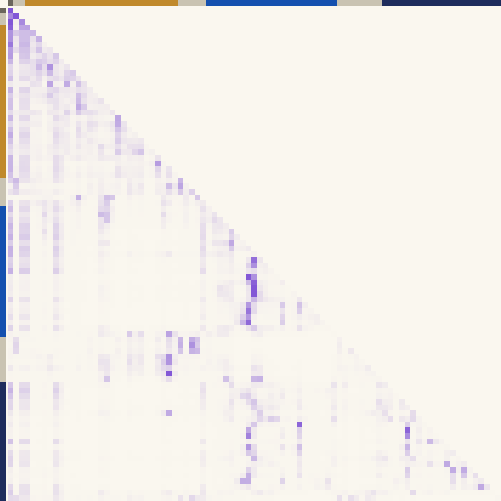
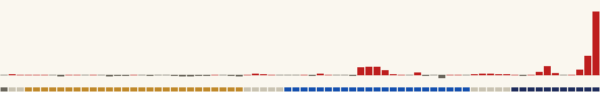
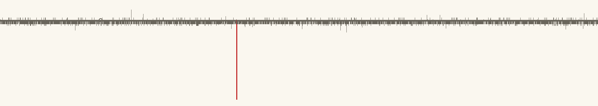
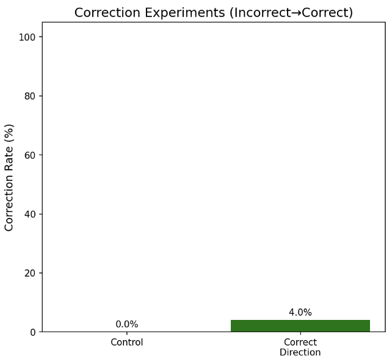
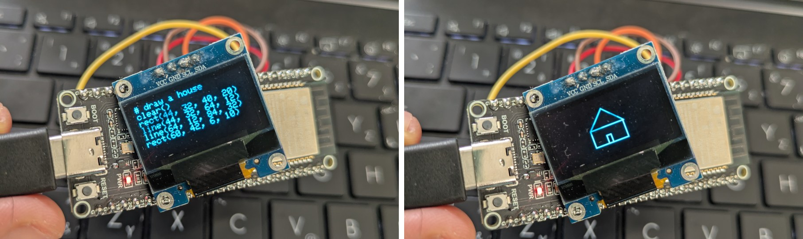
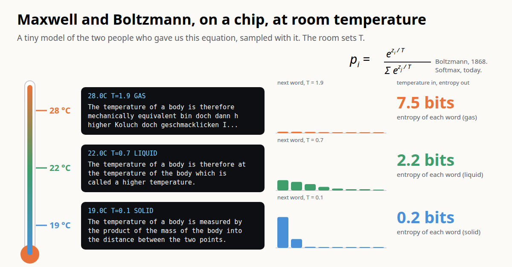

<!doctype html>
<html lang="cs">
<head>
<meta charset="utf-8">
<meta name="viewport" content="width=device-width, initial-scale=1">
<title>Od klávesnice do neuronu</title>
<!--
  Vibecoding & AI Engineering Festival II — Ostrava, 26. 11. 2026, 15:20–15:50. Web deck (HTML/SVG), soběstačný.
  Ovládání: →/mezerník další krok, ← zpět, F fullscreen. Žádné klikání — vše se posouvá slidy (GIF-able).
  Jeden model-obrázek (modelSVG) se opakuje všude; červená značka ukazuje, KDE přesně je hlava/neuron.
  Vše na slidech = skutečný výstup Qwen2.5-Coder-1.5B na JEDNÉ úloze (get_completed_tasks). Cesta promptu: text → nalepené
  instrukce → tokeny → čísla → 28 vrstev → kód. Message: vibecoding je vrstva na vrstvě, a dovnitř se dá vidět.
-->
<style>
:root{--paper:#faf7ef;--ink:#1e2c5c;--dim:#6a665c;--line:#c9c3b2;--steer:#039080;--over:#be1e1e;--you:#1450af;--other:#c0892b;--attn:#8257d6;--box:#fff}
*{box-sizing:border-box}
html,body{margin:0;height:100%;background:#111;font-family:"Segoe UI",system-ui,sans-serif;color:var(--ink)}
#deck{position:fixed;inset:0}
.slide{position:absolute;inset:0;display:none;flex-direction:column;align-items:center;justify-content:center;background:radial-gradient(135% 115% at 50% -12%, #fffdf8 0%, var(--paper) 58%, #f1ece0 100%);padding:3.5vh 6vw;text-align:center;gap:1.8vh}
.slide.on{display:flex}
h1{font-size:4vw;margin:0;line-height:1.1}
h2{font-size:2.3vw;font-weight:600;margin:0;color:var(--dim)}
.msg{font-size:2.2vw;max-width:84vw;line-height:1.3;margin:0}
.msg b{color:var(--ink)} .msg .r{color:var(--ink)} .msg .y{color:var(--you)}
.sub{font-size:1.25vw;color:var(--dim);margin:0;max-width:82vw}
.layer{font-size:1.4vw;color:var(--dim);letter-spacing:.35em;text-transform:uppercase}
.big{font-size:2.5vw;font-weight:700;margin:0}
.frag{opacity:0;transition:opacity .35s}.frag.show{opacity:1}
.row{display:flex;gap:3vw;align-items:center;justify-content:center;flex-wrap:wrap;max-width:90vw}
.col{display:flex;flex-direction:column;gap:1vh;align-items:center}
.win{border:1px solid #ddd7c7;background:var(--box);border-radius:14px;text-align:left;font-family:ui-monospace,monospace;font-size:1.3vw;line-height:1.5;padding:.9em 1.1em;box-shadow:0 10px 34px rgba(30,44,92,.10);max-width:42vw;white-space:pre-wrap}
.win .tt{color:var(--dim);font-size:.82em;border-bottom:1px solid var(--line);margin:-.3em -.3em .5em;padding:.2em .4em;white-space:normal}
.win .you{color:var(--you)} .win .hl{background:#fff2a8;color:var(--ink);font-weight:700;border-radius:3px} .win .glue{background:color-mix(in srgb, var(--other) 28%, transparent);color:var(--ink);font-weight:700;border-radius:3px} .win .bug{color:var(--over);font-weight:700;text-decoration:underline wavy var(--over);text-underline-offset:.2em} .win .bad{color:var(--dim);font-weight:700;text-decoration:underline wavy var(--dim)} .win .d{color:var(--dim)}
.note{border:1.5px solid rgba(20,80,175,.45);background:rgba(20,80,175,.055);color:var(--you);border-radius:14px;padding:.55em .9em;font-size:1.3vw;font-family:ui-monospace,monospace;text-align:left;box-shadow:0 8px 26px rgba(20,80,175,.08)}
.note .who{color:var(--dim);font-size:.72em;display:block}
.num{font-size:3.2vw;font-weight:800}.num.g{color:var(--ink)}.num.r{color:var(--ink)}
table{border-collapse:collapse;font-size:1.6vw}td,th{padding:.3em 1.1em;text-align:center}th{color:var(--dim);font-weight:600}
.cap{font-size:1.7vw;max-width:76vw;margin:0}.cap b{color:var(--ink)}.cap .r{color:var(--ink)}
.seq{display:none;flex-direction:column;align-items:center;gap:1.6vh;width:100%}
.seq.on{display:flex}
#pg{position:fixed;right:1.2vw;bottom:1vh;color:#999;font-size:1vw;z-index:10;font-family:ui-monospace,monospace}
svg .body{stroke:var(--ink);stroke-width:10;fill:var(--paper)} svg .win2{stroke:var(--ink);stroke-width:5;fill:var(--paper)}
svg .spine{stroke:var(--steer);stroke-width:10;fill:none;stroke-linecap:round} svg .eye{fill:var(--ink)}
svg .fl{stroke:var(--ink);stroke-width:8.5;fill:none;stroke-linecap:round} svg .floor{stroke:var(--line);stroke-width:1}
svg.m-ours .body{stroke-width:13} svg.m-ours .fl{stroke-width:9.5} svg.m-ours .win2{stroke-width:6.5}
svg.m-senior .body{stroke-width:6;fill:#e9e4d6;stroke:var(--dim)} svg.m-senior .win2{stroke:var(--dim);fill:#f4f1e8} svg.m-senior .eye{fill:var(--dim)} svg.m-senior .fl{stroke-width:6;stroke:var(--dim)}
svg.m-frontier .body{stroke:var(--other);stroke-width:8} svg.m-frontier .win2{stroke:var(--other)} svg.m-frontier .fl{stroke:var(--other)} svg.m-frontier .eye{fill:var(--other)} svg.m-frontier .crown{filter:drop-shadow(0 2px 3px rgba(192,137,43,.4))}
.tb{position:relative;background:#1a1b26;color:#c0caf5;border-radius:12px;padding:.6em .9em;font-family:ui-monospace,Menlo,monospace;font-size:1vw;line-height:1.45;text-align:left;white-space:pre-wrap;box-shadow:0 8px 26px rgba(0,0,0,.18);max-width:70vw}
.tb::before{content:"";position:absolute;left:-10px;top:38%;border:8px solid transparent;border-right-color:#1a1b26;border-left:0}
.tb .r{color:#7dcfff}.tb .ok{color:#9ece6a;font-weight:700}.tb .bad{color:#f7768e;font-weight:700}.tb .g{color:#787c99}
</style>
<style>
@media print{@page{size:1280px 720px;margin:0}}
.printmode{overflow:visible!important;height:auto!important}
.printmode #deck,.printmode .deck{position:static!important;height:auto!important}
.printmode .slide{position:relative!important;inset:auto!important;display:flex!important;width:1280px!important;height:720px!important;break-after:page;page-break-after:always;overflow:hidden}
.printmode .frag{opacity:0!important}
.printmode .frag.show{opacity:1!important}
.printmode #pg{display:none}
</style>
</head>
<body>
<div id="deck"></div><div id="pg"></div>
<script>
// ---- jedna konzistentní postavička (role v orchestraci, model jako bytost) ----
function mascot(o={}){o={face:'happy',spine:true,say:'',prompt:'',props:'',scale:1,senior:false,frontier:false,...o};
 const eyes={happy:'<circle class="eye" cx="72" cy="86" r="8"/><circle class="eye" cx="108" cy="86" r="8"/>',
  surprised:'<circle class="win2" cx="72" cy="86" r="11" fill="#fff"/><circle class="win2" cx="108" cy="86" r="11" fill="#fff"/>',
  confused:'<path class="fl" d="M62 84 l20 -6"/><circle class="eye" cx="108" cy="86" r="8"/>',
  sleepy:'<path class="fl" d="M62 86 q10 8 20 0"/><path class="fl" d="M98 86 q10 8 20 0"/>'}[o.face]||'';
 const mouth={happy:'<path class="fl" d="M68 112 q22 18 44 0"/>',surprised:'<circle class="fl" cx="90" cy="116" r="9"/>',
  confused:'<path class="fl" d="M74 114 l26 4"/>',sleepy:'<path class="fl" d="M74 116 q16 -8 32 0"/>'}[o.face]||'';
 const P={gauge:'<circle cx="150" cy="150" r="20" fill="#fff" stroke="var(--ink)" stroke-width="4"/><line x1="150" y1="150" x2="163" y2="137" stroke="var(--steer)" stroke-width="5"/>'};
 let extra='';o.props.split(',').forEach(p=>{if(P[p])extra+=P[p]});
 const say=o.say?`<g transform="translate(112,-20)"><rect x="0" y="0" rx="11" width="${30+o.say.length*24}" height="70" fill="#fff" stroke="var(--ink)" stroke-width="4"/><text x="22" y="49" font-size="46" fill="var(--ink)">${o.say}</text><path d="M36 70 l-18 36 l42 -36" fill="#fff" stroke="var(--ink)" stroke-width="4"/></g>`:'';
 return `<svg class="masc m-${o.frontier?'frontier':o.senior?'senior':'ours'}" viewBox="-20 -36 220 326" style="height:${o.scale*40*(o.senior?1.45:1)}vh;overflow:visible">
  ${o.senior?'<rect class="body" x="14" y="28" width="152" height="232" rx="24"/>':'<rect class="body" x="30" y="40" width="120" height="220" rx="16"/>'}
  <rect class="win2" x="48" y="150" width="34" height="38"/><rect class="win2" x="98" y="150" width="34" height="38"/>
  <rect class="win2" x="48" y="200" width="34" height="38"/><rect class="win2" x="98" y="200" width="34" height="38"/>
  ${eyes}${mouth}${o.senior?'<rect x="52" y="72" width="38" height="30" rx="7" fill="none" stroke="var(--dim)" stroke-width="3.5"/><rect x="92" y="72" width="38" height="30" rx="7" fill="none" stroke="var(--dim)" stroke-width="3.5"/><line x1="90" y1="86" x2="92" y2="86" stroke="var(--dim)" stroke-width="3.5"/><path d="M64 106 q10 11 26 5 q16 6 26 -5" fill="none" stroke="var(--dim)" stroke-width="5.5" stroke-linecap="round"/><circle cx="64" cy="106" r="2.5" fill="var(--dim)"/><circle cx="116" cy="106" r="2.5" fill="var(--dim)"/>':''}
  ${o.frontier?'<path class="crown" d="M56 40 L64 10 L80 30 L90 6 L100 30 L116 10 L124 40 Z" fill="var(--other)" stroke="var(--ink)" stroke-width="3" stroke-linejoin="round"/><circle cx="64" cy="10" r="3.6" fill="var(--other)" stroke="var(--ink)" stroke-width="2"/><circle cx="90" cy="6" r="3.6" fill="var(--other)" stroke="var(--ink)" stroke-width="2"/><circle cx="116" cy="10" r="3.6" fill="var(--other)" stroke="var(--ink)" stroke-width="2"/>':'<line class="fl" x1="90" y1="40" x2="90" y2="24"/><circle class="eye" cx="90" cy="20" r="5"/>'}
  <line class="fl" x1="30" y1="150" x2="6" y2="120"/><line class="fl" x1="150" y1="150" x2="174" y2="120"/>
  <line class="fl" x1="66" y1="260" x2="66" y2="286"/><line class="fl" x1="114" y1="260" x2="114" y2="286"/>${extra}${say}</svg>`;}
function eye(scale=.5,col='var(--steer)'){return `<svg viewBox="0 0 140 92" style="height:${scale*40}vh;overflow:visible"><ellipse cx="70" cy="46" rx="62" ry="34" fill="none" stroke="${col}" stroke-width="5"/><circle cx="70" cy="46" r="20" fill="${col}"/><circle cx="78" cy="39" r="6" fill="#fff"/><path d="M6 46 Q70 2 134 46" fill="none" stroke="${col}" stroke-width="3" opacity=".45"/><path d="M6 46 Q70 90 134 46" fill="none" stroke="${col}" stroke-width="3" opacity=".45"/></svg>`;}
function hacker(scale=.4,say=''){const bub=say?`<g transform="translate(104,-8)"><rect x="0" y="0" rx="10" width="${34+say.length*13}" height="46" fill="#fff" stroke="var(--ink)" stroke-width="3.5"/><text x="16" y="31" font-size="26" fill="var(--ink)">${say}</text><path d="M20 46 l-14 26 l30 -26" fill="#fff" stroke="var(--ink)" stroke-width="3.5"/></g>`:'';return `<svg viewBox="-10 -14 190 214" style="height:${scale*40}vh;overflow:visible"><path d="M18 200 Q18 66 80 44 Q142 66 142 200 Z" fill="var(--ink)"/><ellipse cx="80" cy="118" rx="48" ry="56" fill="#20233a"/><path d="M50 110 l28 11" stroke="var(--over)" stroke-width="8" stroke-linecap="round"/><path d="M110 110 l-28 11" stroke="var(--over)" stroke-width="8" stroke-linecap="round"/>${bub}</svg>`;}

// ---- STEJNÝ model pořád dokola: věž 28 vrstev, červená značka = KDE přesně je hlava/neuron ----
// mk = {layer:0..27, col:0..1 (vlevo→vpravo přes šířku), label, note} nebo null
function modelSVG(mk, h='56vh', say='', ablate=0, nums=false){
 const Y=l=>280-(l/27)*220, CX=c=>58+(c)*104;
 let inside='';
 for(let i=0;i<28;i++){const y=Y(i);
   for(let hh=0;hh<12;hh++){const off=ablate&&HRANK[i]&&HRANK[i][hh]<ablate;inside+=`<rect x="${56+hh*3.6}" y="${y-2.6}" width="2.6" height="5.2" rx="0.7" fill="${off?'var(--dim)':'rgba(130,87,214,0.42)'}"/>`;}
   inside+=`<rect x="110" y="${y-2.4}" width="48" height="4.8" rx="1" fill="rgba(30,44,92,0.13)"/>`;}
 let mark='';
 if(mk&&mk.frame){const y=Y(mk.layer);mark+=`<rect x="50" y="${y-7}" width="112" height="14" rx="3" fill="none" stroke="var(--ink)" stroke-width="2.2" stroke-dasharray="4 3"/><text x="166" y="${y+4}" font-size="11" font-weight="700" fill="var(--ink)">vrstva ${mk.layer}</text>`;}
 if(mk&&mk.marks){const y=Y(mk.layer);mk.marks.forEach(m=>{const cx=CX(m.col);mark+=`<circle cx="${cx}" cy="${y}" r="5.5" fill="none" stroke="${m.color}" stroke-width="2.6"/>`;});}
 if(mk&&!mk.frame&&!mk.marks&&!mk.loop){const y=Y(mk.layer), cx=CX(mk.col); const col=mk.color||(mk.steer?'var(--steer)':'var(--over)');
  const glyph=mk.steer?`<path d="M${cx-36} ${y} L${cx-11} ${y}" stroke="${col}" stroke-width="3.5"/><path d="M${cx-11} ${y} l-8 -5 v10 z" fill="${col}"/><circle cx="${cx}" cy="${y}" r="10" fill="var(--paper)" stroke="${col}" stroke-width="3"/><text x="${cx}" y="${y+5.5}" font-size="16" font-weight="800" fill="${col}" text-anchor="middle">+</text>`:`<circle cx="${cx}" cy="${y}" r="10" fill="none" stroke="${col}" stroke-width="3"/><circle cx="${cx}" cy="${y}" r="3.2" fill="${col}"/>`;
  mark=`${glyph}<line x1="${cx+11}" y1="${y}" x2="176" y2="${y}" stroke="${col}" stroke-width="1.5"/>${mk.out&&!mk.chips?`<text x="176" y="${y-30}" font-size="11" fill="${col}">${mk.label} · ${mk.note||''}</text>`:mk.out?``:`<text x="180" y="${y-3}" font-size="12" fill="${col}">${mk.label}</text>${mk.note?`<text x="180" y="${y+13}" font-size="10" fill="var(--dim)">${mk.note}</text>`:''}`}`;}
 const bubble=say?`<g transform="translate(144,4)"><rect x="0" y="0" rx="6" width="${16+say.length*7}" height="23" fill="#fff" stroke="var(--ink)" stroke-width="2.5"/><text x="8" y="16" font-size="13" fill="var(--ink)">${say}</text></g>`:'';
 return `<svg viewBox="-4 ${mk&&mk.loop?-36:0} ${mk&&mk.chips?590:mk&&(mk.callouts||mk.out||mk.loop)?470:320} ${mk&&mk.loop?380:mk&&mk.dict?388:344}" style="height:${h}">
   <defs><marker id="jm" markerWidth="8" markerHeight="8" refX="6" refY="3" orient="auto"><path d="M0 0 L6 3 L0 6 z" fill="var(--you)"/></marker></defs>
   <line x1="106" y1="30" x2="106" y2="16" stroke="var(--ink)" stroke-width="2.5"/><circle cx="106" cy="13" r="3" fill="var(--ink)"/>
   <rect x="52" y="30" width="108" height="252" rx="16" fill="var(--paper)" stroke="var(--ink)" stroke-width="7"/>
   <circle class="eye" cx="92" cy="45" r="3.6" fill="var(--ink)"/><circle class="eye" cx="120" cy="45" r="3.6" fill="var(--ink)"/><path d="M92 53 q14 9 28 0" fill="none" stroke="var(--ink)" stroke-width="2.6" stroke-linecap="round"/>
   ${inside}
   <text x="46" y="${Y(27)}" font-size="10" fill="var(--dim)" text-anchor="end">28</text><text x="46" y="${Y(0)}" font-size="10" fill="var(--dim)" text-anchor="end">0</text>
   <text x="80" y="297" font-size="11" fill="var(--attn)" text-anchor="middle">hlavy</text><text x="138" y="297" font-size="11" fill="var(--ink)" text-anchor="middle">neurony</text>${nums?`<circle cx="76" cy="150" r="11" fill="var(--paper)" stroke="var(--attn)" stroke-width="2.5"/><text x="76" y="154" font-size="13" font-weight="700" fill="var(--attn)" text-anchor="middle">①</text><circle cx="134" cy="150" r="11" fill="var(--paper)" stroke="var(--steer)" stroke-width="2.5"/><text x="134" y="154" font-size="13" font-weight="700" fill="var(--steer)" text-anchor="middle">②</text>`:''}
   <line x1="106" y1="332" x2="106" y2="300" stroke="var(--you)" stroke-width="3" marker-end="url(#jm)"/>
   <text x="106" y="343" font-size="12" fill="var(--you)" text-anchor="middle">${mk&&mk.loop?`tvůj prompt + <tspan font-weight="800" fill="var(--ink)">sum</tspan>`:`tvůj prompt (tokeny)`}</text>
   ${mk&&mk.callouts?`<path d="M206 124 L100 148" stroke="var(--attn)" stroke-width="2" marker-end="url(#ca)"/><text x="208" y="116" font-size="15" font-weight="700" fill="var(--attn)">attention · 12 hlav</text><text x="208" y="131" font-size="11.5" fill="var(--dim)">koukají na jiné tokeny</text><path d="M206 204 L158 220" stroke="var(--over)" stroke-width="2" marker-end="url(#cn)"/><text x="208" y="196" font-size="15" font-weight="700" fill="var(--over)">MLP · 8 960 neuronů</text><text x="208" y="211" font-size="11.5" fill="var(--dim)">každý jen ve svém sloupci</text><defs><marker id="ca" markerWidth="8" markerHeight="8" refX="6" refY="3" orient="auto"><path d="M0 0 L6 3 L0 6 z" fill="var(--attn)"/></marker><marker id="cn" markerWidth="8" markerHeight="8" refX="6" refY="3" orient="auto"><path d="M0 0 L6 3 L0 6 z" fill="var(--over)"/></marker></defs>`:''}
   ${mk&&mk.out?(()=>{const y=Y(mk.layer);const w=mk.out;const ch=mk.chips;let bw=46+Math.max(w.word.length*(ch?11:9.5),w.rest.length*5.2);if(ch)bw=Math.max(bw,8*43+16);const H=ch?96:50,ty=ch?y-48:y-24,o=ch?44:0;const lab=`${mk.label} · ${mk.note||''}`;const chips=ch?`<text x="10" y="13" font-size="9.5" fill="var(--steer)" font-weight="700">${lab}</text><text x="${16+lab.length*5.6}" y="13" font-size="9.5" fill="var(--dim)">· proud, prvních 8 z 1 536</text>${ch.map((c,i)=>`<rect x="${10+i*43}" y="19" width="40" height="22" rx="5" fill="var(--${c.neg?'dim':'steer'})" fill-opacity="${c.neg?Math.max(c.pct,6)/100:Math.max(c.pct,4)/100}"/><text x="${30+i*43}" y="34.5" font-size="12" text-anchor="middle" font-family="ui-monospace,monospace" fill="${c.pct>60?'#fff':'var(--ink)'}">${c.v}</text>`).join('')}`:'';return `<path d="M176 ${y} L206 ${y}" stroke="var(--steer)" stroke-width="2" marker-end="url(#lo)"/><g transform="translate(210,${ty})"><rect x="0" y="0" width="${bw}" height="${H}" rx="8" fill="#fff" stroke="var(--steer)" stroke-width="2"/>${chips}<text x="10" y="${13+o}" font-size="${ch?9.5:8.5}" fill="var(--dim)">kdyby skončil tady:</text><text x="10" y="${32+o}" font-size="${ch?20:17}" font-weight="800" fill="var(--ink)" font-family="ui-monospace,monospace">${w.word}</text><text x="${14+w.word.length*(ch?12:10)}" y="${32+o}" font-size="${ch?15:13}" fill="var(--ink)">${w.p}</text><text x="10" y="${45+o}" font-size="${ch?9.5:8.5}" fill="var(--dim)">${w.rest}</text></g>`})():''}
   ${mk&&mk.loop?`<path d="M106 16 L106 -16 L232 -16" fill="none" stroke="var(--steer)" stroke-width="2.5" marker-end="url(#lo)"/><g transform="translate(236,-30)"><rect x="0" y="0" width="52" height="28" rx="6" fill="#fff" stroke="var(--steer)" stroke-width="2"/><text x="26" y="19" font-size="16" font-weight="800" fill="var(--ink)" text-anchor="middle" font-family="ui-monospace,monospace">sum</text></g><path d="M288 -16 L330 -16 C 352 -16 352 332 200 332 L124 332" stroke="var(--steer)" stroke-width="2.5" stroke-dasharray="7 5" fill="none" marker-end="url(#lo)"/>`:''}
   <defs><marker id="lo" markerWidth="8" markerHeight="8" refX="6" refY="3" orient="auto"><path d="M0 0 L6 3 L0 6 z" fill="var(--steer)"/></marker></defs>
   ${mk&&mk.dict?`<rect x="22" y="352" width="168" height="28" rx="6" fill="#fff" stroke="var(--over)" stroke-width="2.5"/><text x="106" y="365" font-size="10" text-anchor="middle" fill="var(--over)" font-weight="700">slovník</text><text x="106" y="376" font-size="9" text-anchor="middle" fill="var(--dim)">151 936 × 1 536</text>`:''}
   ${mark}${bubble}</svg>`;}

// vrstva zblízka: 12 hlav + pruh 8 960 neuronů; co svítí, říká opts
function layerZoom(o={}){o={head:false,neuron:false,hd:1,nd:1,w:'26vw',label:'vrstva 20 zblízka',...o};
 const hd=+o.hd, nd=+o.nd; let c='';
 for(let i=0;i<12;i++){const x=12+i*17;const on=o.head&&i===6;
  if(!on){c+=`<rect x="${x}" y="22" width="13" height="26" rx="2.5" fill="rgba(130,87,214,0.3)"/>`;continue;}
  const g=hd<=0?0:Math.log2(Math.max(hd,1)), w=13+6*g, h=26+13*g, cx=x+6.5;
  c+=hd<=0?`<rect x="${x}" y="22" width="13" height="26" rx="2.5" fill="rgba(106,102,92,0.22)"/><path d="M${x+2} 25 L${x+11} 45 M${x+11} 25 L${x+2} 45" stroke="var(--dim)" stroke-width="2.2" stroke-linecap="round"/>`
        :`<rect x="${cx-w/2}" y="${35-h/2}" width="${w}" height="${h}" rx="2.5" fill="rgba(130,87,214,${hd>1?1:0.95})"/>`;
  c+=`<rect x="${cx-w/2-3.5}" y="${35-h/2-3.5}" width="${w+7}" height="${h+7}" rx="4" fill="none" stroke="${hd<=0?'var(--dim)':'var(--attn)'}" stroke-width="2.5"/><text x="${cx}" y="66" font-size="10" font-weight="700" fill="${hd<=0?'var(--dim)':'var(--attn)'}" text-anchor="middle">20·6${hd!==1?' ×'+hd:''}</text>`;}
 const nx=222,nw=100,px=nx+nw*0.396;
 c+=`<rect x="${nx}" y="22" width="${nw}" height="26" rx="2.5" fill="rgba(30,44,92,0.13)"/>`;
 for(let i=0;i<40;i++){c+=`<rect x="${nx+2+i*2.45}" y="26" width="1.3" height="18" fill="rgba(30,44,92,0.22)"/>`;}
 if(o.neuron){const col=nd<=0?'var(--dim)':'var(--over)', r=nd<=0?0:4*Math.sqrt(Math.max(nd,0.25)), R=8+(nd>1?3.5*Math.log2(nd):0);
  c+=(nd>0?`<circle cx="${px}" cy="35" r="${r}" fill="${col}"/>`:`<path d="M${px-4} 31 L${px+4} 39 M${px+4} 31 L${px-4} 39" stroke="var(--dim)" stroke-width="2.2" stroke-linecap="round"/>`)+`<circle cx="${px}" cy="35" r="${R}" fill="none" stroke="${col}" stroke-width="2.5"/><text x="${px}" y="66" font-size="10" font-weight="700" fill="${col}" text-anchor="middle">20·3545${nd!==1?' ×'+nd:''}</text>`;}
 return `<svg viewBox="0 0 330 72" style="width:${o.w}"><text x="12" y="12" font-size="10" font-weight="700" fill="var(--ink)">${o.label}</text><text x="113" y="12" font-size="9" fill="var(--attn)" text-anchor="middle">12 hlav</text><text x="${nx+nw/2}" y="12" font-size="9" fill="var(--dim)" text-anchor="middle">8 960 neuronů</text><path d="M215 35 h4" stroke="var(--dim)" stroke-width="1.5"/>${c}</svg>`;}

// before/after kódový panel
function code(title, html){return `<div class="win" style="font-size:1.4vw"><div class="tt">${title}</div>${html}</div>`;}
const BASE='def get_completed_tasks(tasks):\n    return sum(1 for task in tasks if task[\'completed\'])';

const HG=[[0.086, 0.166, 0.097, 0.155, 0.084, 0.107, 0.173, 0.133, 0.143, 0.095, 0.173, 0.088], [0.108, 0.129, 0.088, 0.09, 0.18, 0.089, 0.069, 0.088, 0.095, 0.107, 0.11, 0.108], [0.125, 0.132, 0.07, 0.091, 0.066, 0.086, 0.062, 0.139, 0.125, 0.065, 0.076, 0.127], [0.168, 0.103, 0.141, 0.097, 0.098, 0.11, 0.123, 0.105, 0.163, 0.14, 0.177, 0.129], [0.121, 0.079, 0.146, 0.088, 0.059, 0.168, 0.088, 0.142, 0.096, 0.143, 0.062, 0.084], [0.091, 0.22, 0.157, 0.072, 0.08, 0.07, 0.158, 0.09, 0.21, 0.078, 0.082, 0.071], [0.133, 0.06, 0.139, 0.067, 0.113, 0.119, 0.063, 0.04, 0.078, 0.03, 0.095, 0.124], [0.13, 0.153, 0.178, 0.198, 0.185, 0.102, 0.077, 0.158, 0.186, 0.094, 0.12, 0.083], [0.11, 0.095, 0.139, 0.066, 0.083, 0.182, 0.168, 0.059, 0.132, 0.165, 0.058, 0.164], [0.182, 0.108, 0.157, 0.102, 0.134, 0.129, 0.081, 0.134, 0.069, 0.113, 0.151, 0.144], [0.081, 0.192, 0.181, 0.101, 0.106, 0.258, 0.15, 0.193, 0.171, 0.149, 0.179, 0.187], [0.103, 0.132, 0.21, 0.132, 0.209, 0.134, 0.214, 0.184, 0.262, 0.187, 0.238, 0.187], [0.076, 0.102, 0.175, 0.101, 0.141, 0.13, 0.039, 0.195, 0.163, 0.151, 0.137, 0.087], [0.163, 0.099, 0.184, 0.127, 0.268, 0.093, 0.173, 0.15, 0.132, 0.146, 0.127, 0.135], [0.08, 0.05, 0.048, 0.075, 0.029, 0.023, 0.079, 0.124, 0.183, 0.194, 0.107, 0.153], [0.163, 0.181, 0.155, 0.102, 0.18, 0.266, 0.141, 0.324, 0.113, 0.184, 0.1, 0.2], [0.225, 0.183, 0.096, 0.125, 0.209, 0.209, 0.146, 0.123, 0.178, 0.205, 0.095, 0.112], [0.191, 0.139, 0.145, 0.148, 0.174, 0.122, 0.084, 0.094, 0.195, 0.11, 0.078, 0.084], [0.154, 0.093, 0.204, 0.097, 0.197, 0.138, 0.092, 0.157, 0.282, 0.116, 0.269, 0.221], [0.058, 0.064, 0.062, 0.103, 0.082, 0.064, 0.303, 0.182, 0.237, 0.169, 0.222, 0.288], [0.219, 0.137, 0.11, 0.102, 0.114, 0.167, 0.309, 0.345, 0.353, 0.238, 0.223, 0.272], [0.142, 0.14, 0.311, 0.261, 0.269, 0.139, 0.117, 0.226, 0.205, 0.174, 0.199, 0.155], [0.265, 0.241, 0.166, 0.301, 0.256, 0.22, 0.104, 0.254, 0.119, 0.249, 0.1, 0.062], [0.084, 0.259, 0.114, 0.175, 0.21, 0.115, 0.19, 0.113, 0.127, 0.351, 0.226, 0.266], [0.232, 0.291, 0.277, 0.231, 0.395, 0.221, 0.187, 0.353, 0.253, 0.091, 0.233, 0.135], [0.271, 0.12, 0.239, 0.363, 0.18, 0.097, 0.121, 0.246, 0.321, 0.114, 0.273, 0.136], [0.392, 0.278, 0.265, 0.24, 0.262, 0.398, 0.276, 0.35, 0.305, 0.263, 0.254, 0.411], [0.749, 0.681, 0.74, 0.755, 0.721, 0.659, 0.664, 0.778, 0.692, 0.747, 1.0, 0.624]];
const HRANK=[[283, 134, 256, 146, 286, 237, 125, 187, 164, 261, 126, 280], [232, 196, 281, 274, 114, 276, 311, 278, 264, 236, 231, 234], [203, 191, 310, 273, 315, 284, 320, 172, 202, 316, 305, 198], [129, 242, 168, 257, 254, 227, 208, 239, 138, 170, 119, 197], [211, 298, 159, 279, 326, 130, 277, 166, 259, 163, 322, 288], [271, 73, 144, 307, 296, 309, 141, 275, 78, 300, 292, 308], [186, 324, 175, 313, 225, 214, 319, 331, 301, 333, 262, 206], [193, 151, 118, 88, 102, 245, 303, 142, 101, 267, 213, 290], [229, 265, 176, 314, 291, 108, 131, 325, 190, 135, 327, 136], [109, 233, 145, 247, 183, 195, 294, 185, 312, 223, 152, 162], [295, 94, 112, 249, 238, 50, 154, 93, 127, 156, 116, 98], [241, 192, 79, 188, 81, 184, 76, 105, 47, 99, 60, 100], [304, 244, 120, 250, 169, 194, 332, 91, 139, 153, 179, 282], [137, 253, 103, 201, 40, 269, 124, 155, 189, 160, 200, 182], [297, 329, 330, 306, 334, 335, 299, 205, 106, 92, 235, 150], [140, 111, 147, 248, 113, 42, 167, 22, 222, 104, 251, 86], [68, 107, 260, 204, 82, 80, 158, 207, 117, 83, 263, 226], [95, 174, 161, 157, 123, 209, 287, 266, 90, 228, 302, 285], [149, 268, 85, 258, 89, 177, 270, 143, 31, 217, 38, 72], [328, 318, 321, 243, 293, 317, 27, 110, 62, 128, 70, 30], [75, 178, 230, 246, 220, 132, 25, 21, 18, 61, 69, 36], [165, 171, 24, 48, 39, 173, 216, 66, 84, 122, 87, 148], [44, 57, 133, 28, 51, 74, 240, 53, 215, 55, 252, 323], [289, 49, 221, 121, 77, 218, 96, 224, 199, 19, 67, 41], [64, 29, 33, 65, 14, 71, 97, 17, 54, 272, 63, 181], [37, 212, 59, 16, 115, 255, 210, 56, 23, 219, 35, 180], [15, 32, 43, 58, 46, 13, 34, 20, 26, 45, 52, 12], [3, 8, 5, 2, 6, 10, 9, 1, 7, 4, 0, 11]];// rankidx[L][h]: menší = dřív vypnuto

function headGrid(k){const NL=28,H=12,cw=15,ch=8,x0=44,y0=12;let c='';
 for(let l=0;l<NL;l++)for(let h=0;h<H;h++){const x=x0+h*cw,y=y0+(NL-1-l)*ch,off=HRANK[l][h]<k,a=HG[l][h];
  const f=off?'var(--dim)':`rgba(130,87,214,${0.10+0.8*a})`;
  c+=`<rect x="${x}" y="${y}" width="${cw-2}" height="${ch-1.5}" rx="1.5" fill="${f}"/>`;}
 return `<svg viewBox="0 0 ${x0+H*cw+155} ${y0+NL*ch+26}" style="height:46vh"><text x="${x0}" y="9" font-size="10" fill="var(--dim)">12 hlav →</text><text x="12" y="${y0+NL*ch/2}" font-size="8" fill="var(--dim)" transform="rotate(-90 12 ${y0+NL*ch/2})">28 vrstev</text>${c}<text x="${x0}" y="${y0+NL*ch+18}" font-size="10" fill="var(--dim)">336 attention hlav · <tspan fill="var(--over)" font-weight="700">červené = vypnuté (${k})</tspan></text></svg>`;}

const S=[];const add=h=>S.push(h);const L=t=>`<div class="layer">${t}</div>`;
const SECS=['klávesnice','orchestrace','model','dovnitř','k čemu to je'];
function sec(cur,sub){const d=SECS.map(s=>s===cur?`<b style="color:var(--ink)">${s}</b>`:`<span style="color:#cfc9b8">${s}</span>`).join(`<span style="color:#e2ddcf"> › </span>`);return `<div class="layer" style="letter-spacing:.1em;font-size:1.15vw">${d}${sub?`<span style="color:var(--dim);text-transform:none"> · ${sub}</span>`:''}</div>`;}

// 1 title
add(`<h1>Od klávesnice do neuronu</h1><h2>jak rozebrat vibecoding vrstvu po vrstvě</h2>
 ${mascot({scale:.34,say:'ahoj!'})}
 <div class="sub">Kateřina Fajmanová · Vibecoding &amp; AI Engineering Festival · Ostrava · 26. 11. 2026</div>`);

// 1b VÝZVA — co nejmenší modely
add(`<div class="big">Dnešní výzva 🎯</div><i data-anim></i>
 <div style="font-size:2vw;max-width:72vw;margin-top:1vh">Postavit <b>coding orchestraci</b> z <b>co nejmenších</b> modelů…</div>
 <div class="frag" style="font-size:2vw;max-width:72vw">…a <b>podívat se dovnitř</b> toho agenta, co píše kód — <b style="color:var(--over)">až na jeden neuron</b>.</div>
 
 <div class="frag" style="margin-top:1vh">${mascot({scale:.34,say:'vejdu se!'})}</div>
`);

// 2 vágní přání → model tápe (clarify_only.py, doslova; čtyři kola, žádná funkce)
add(`${sec('klávesnice')}<div class="big">Vágní přání → model nejdřív tápe</div>
 <div class="col" style="gap:.6vh;align-items:flex-start;margin-top:.6vh;max-width:88vw;font-size:.95vw">
  <div class="row" style="gap:.9vw;align-items:center;justify-content:flex-start;flex-wrap:nowrap"><div style="width:5vw;text-align:center;font-size:1.1vw;color:var(--you)"><b>ty</b></div><div class="tb"><span class="r">ty ▸</span> Udělej mi appku na úkoly, ať vidím kolik jich mám hotových.</div></div>
  <div class="row" style="gap:.9vw;align-items:center;justify-content:flex-start;flex-wrap:nowrap"><div style="width:5vw;text-align:center">${mascot({scale:.14,spine:false,face:'confused'})}</div><div class="tb"><span class="r">model ▸</span> Dobře, ale musím si vědět, co je to "úkoly". Je to něco, co může být užitečné pro vaši aplikaci? Například: 1. Zpracování textu 2. Vytváření grafických objektů 3. Analýza dat 4. řešení matematických úloh 5. Použití AI …</div></div>
  <div class="row" style="gap:.9vw;align-items:center;justify-content:flex-start;flex-wrap:nowrap"><div style="width:5vw;text-align:center;font-size:1.1vw;color:var(--you)"><b>ty</b></div><div class="tb"><span class="r">ty ▸</span> Prostě chci spočítat svoje úkoly.</div></div>
  <div class="row" style="gap:.9vw;align-items:center;justify-content:flex-start;flex-wrap:nowrap"><div style="width:5vw;text-align:center">${mascot({scale:.14,spine:false,face:'confused'})}</div><div class="tb"><span class="r">model ▸</span> Takže budeme pracovat s jedním úkolem. Proč?</div></div>
  <div class="row" style="gap:.9vw;align-items:center;justify-content:flex-start;flex-wrap:nowrap"><div style="width:5vw;text-align:center;font-size:1.1vw;color:var(--you)"><b>ty</b></div><div class="tb"><span class="r">ty ▸</span> Každej úkol je buď hotovej nebo nehotovej.</div></div>
  <div class="row" style="gap:.9vw;align-items:center;justify-content:flex-start;flex-wrap:nowrap"><div style="width:5vw;text-align:center">${mascot({scale:.14,spine:false,face:'confused'})}</div><div class="tb"><span class="r">model ▸</span> OK, takže můžem pomoci s počítáním hotových úkolů. Proč?</div></div>
  <div class="row" style="gap:.9vw;align-items:center;justify-content:flex-start;flex-wrap:nowrap"><div style="width:5vw;text-align:center;font-size:1.1vw;color:var(--you)"><b>ty</b></div><div class="tb"><span class="r">ty ▸</span> Chci vědět, kolik jich mám hotovejch. Ať to funguje!</div></div>
  <div class="row" style="gap:.9vw;align-items:center;justify-content:flex-start;flex-wrap:nowrap"><div style="width:5vw;text-align:center">${mascot({scale:.14,spine:false,face:'happy'})}</div><div class="tb"><span class="r">model ▸</span> Vždycky rád! Pokud máte další dotazy nebo potřebujete další pomoc, neváhejte se zeptat.</div></div>
 </div>
 <div class="cap" style="margin-top:.8vh">Čtyři kola, žádná funkce.</div>`);

// 3 roadmap
// 4 orchestration — KDO JE KDO (infografika rolí)
add(`${sec('orchestrace','kdo je kdo')}<div class="big">Parta: kdo je kdo</div>
 <div class="row" style="gap:2.4vw;align-items:flex-start;margin-top:2.4vh">
  <div class="col" style="gap:.7vh;max-width:21vw">${mascot({scale:.3})}<div style="font-size:1.4vw"><b>builder · 1,5B</b></div><div class="sub" style="font-size:1vw">píše kód</div></div>
  <div class="col" style="gap:.7vh;max-width:28vw">${mascot({scale:.36,senior:true})}<div style="font-size:1.4vw;color:var(--you)"><b>4B · o kus větší</b></div><div class="sub" style="font-size:1vw">refiner · reviewer · senior</div></div>
 </div>
 `);
// 3b (slide „s malými to nešlo“ vyřazen 9. 11.)
add(`${sec('orchestrace')}<div class="big">Zvládne to parta nejmenších modelů?</div><i data-anim></i>
 <div class="col" style="gap:1vh;align-items:flex-start;margin-top:1vh;max-width:86vw">
  <div class="row" style="gap:.9vw;align-items:center;justify-content:flex-start;flex-wrap:nowrap"><div style="width:5vw;text-align:center;font-size:1.1vw;color:var(--you)"><b>ty</b></div><div class="tb"><span class="r">ty ▸</span> Udělej mi appku na úkoly, ať vidím kolik jich mám hotových.</div></div>
  <div class="frag row" style="gap:.9vw;align-items:center;justify-content:flex-start;flex-wrap:nowrap"><div style="width:5vw;text-align:center">${mascot({scale:.15,spine:false,senior:true})}</div><div class="tb"><span class="r">refiner·4B ▸</span> Write a Python function get_completed_tasks(tasks): return the number of tasks in the list that are marked as completed.</div></div>
  <div class="frag row" style="gap:.9vw;align-items:center;justify-content:flex-start;flex-wrap:nowrap"><div style="width:5vw;text-align:center">${mascot({scale:.13,spine:false})}</div><div class="tb"><span class="r">builder·1.5B ▸</span>
  def get_completed_tasks(tasks):
      return sum(1 for task in tasks if task['completed'])</div></div>
  <div class="frag row" style="gap:.9vw;align-items:center;justify-content:flex-start;flex-wrap:nowrap"><div style="width:5vw;text-align:center">${mascot({scale:.15,spine:false,senior:true})}</div><div class="tb"><span class="r">reviewer·4B ▸</span> <span class="ok">✓ CORRECT</span>  The function correctly counts the number of tasks marked as completed by checking the 'completed' key in each task dictionary.</div></div>
 </div>
 `);

// 4d OPRAVA — builder chybuje, reviewer chytí, senior poradí, builder opraví (citace z orch_fix3.log, int_to_roman)
add(`${sec('orchestrace','reviewer chytá chybu')}<div class="big">Builder chybuje → reviewer chytí → oprava ✓</div>
 <div class="col" style="gap:.8vh;max-width:84vw;align-items:stretch;margin-top:.6vh">
  <div class="row" style="gap:.9vw;align-items:center;justify-content:flex-start;flex-wrap:nowrap"><div style="width:5vw;text-align:center;font-size:1.1vw;color:var(--you)"><b>ty</b></div><div class="tb"><span class="r">ty ▸</span> Chci funkci, co převede celé číslo na římské číslice.</div></div>
  <div class="row" style="gap:.8vw;align-items:center;justify-content:flex-start;flex-wrap:nowrap">${mascot({scale:.14,spine:false})}<div class="tb"><span class="r">builder·1.5B ▸</span>
  def int_to_roman(num):
      val = [1000, 900, 500, 400, 100, 90, 50, 40, 10, 9, 5, 4, 1] …</div></div>
  <div class="row" style="gap:.8vw;align-items:center;justify-content:flex-start;flex-wrap:nowrap">${mascot({scale:.17,spine:false,senior:true,face:'surprised'})}<div class="tb"><span class="r">reviewer·4B ▸</span> <span class="bad">✗ WRONG</span>  The code has a logical error: it uses a for loop inside the while loop that iterates num // val[i] times…</div></div>
  <div class="row" style="gap:.8vw;align-items:center;justify-content:flex-start;flex-wrap:nowrap">${mascot({scale:.17,spine:false,senior:true})}<div class="tb"><span class="r">senior·4B ▸</span> …without checking if val[i] is greater than num </div></div>
  <div class="row" style="gap:.8vw;align-items:center;justify-content:flex-start;flex-wrap:nowrap">${mascot({scale:.14,spine:false,say:'oprava'})}<div class="tb"><span class="r">builder·1.5B ▸</span> <span class="g">(oprava)</span>
  def int_to_roman(num): …</div></div>
  <div class="row" style="gap:.8vw;align-items:center;justify-content:flex-start;flex-wrap:nowrap">${mascot({scale:.17,spine:false,senior:true})}<div class="tb"><span class="r">reviewer·4B ▸</span> <span class="ok">✓ CORRECT</span>  …converts an integer to its Roman numeral representation by using a greedy approach</div></div>
 </div>
 `);

// 8a MODEL 3/5 — malý: velikost + na čem běží + jeden řádek benchmarku (sloučeno ze tří)
add(`${sec('model')}<div class="big">Drobeček — běží na herní kartě</div>
 <div class="row" style="align-items:flex-end;gap:3vw;justify-content:center">
  <div class="col">${mascot({scale:.2,say:'1,5 mld'})}</div>
  <div class="col" style="align-items:center">
   <svg viewBox="0 0 130 230" style="height:20vh"><rect x="22" y="10" width="86" height="210" rx="14" fill="#e9e4d6" stroke="var(--dim)" stroke-width="4"/>
    <circle cx="52" cy="74" r="5" fill="var(--dim)"/><circle cx="80" cy="74" r="5" fill="var(--dim)"/><path d="M52 102 q14 7 28 0" fill="none" stroke="var(--dim)" stroke-width="4" stroke-linecap="round"/>
    <text x="65" y="150" font-size="13" fill="var(--dim)" text-anchor="middle">? mld</text></svg>
   </div>
  <div class="col" style="gap:1.8vh;align-items:flex-start;align-self:center">
   <div class="row" style="gap:2.2vw;font-size:1.2vw;margin-top:.3vh"><div style="font-size:1.2vw">🎮 běží na <b>mojí RTX 4070 Ti SUPER</b> <span style="color:var(--dim)">(16 GB)</span></div><div style="font-size:1.2vw">⚡ <b>99 tok/s</b></div><div style="font-size:1.2vw">📱 po kvantizaci ~1 GB</div></div>
   <div style="margin-top:.2vh"><svg viewBox="0 0 980 300" style="width:78vw;max-height:33vh"><text x="150" y="22" font-size="19" font-weight="700" fill="var(--ink)">HumanEval</text><text x="150" y="42" font-size="13" fill="var(--dim)">napiš funkci · 2021</text><text x="420" y="22" font-size="19" font-weight="700" fill="var(--ink)">LiveCodeBench</text><text x="420" y="42" font-size="13" fill="var(--dim)">soutěžní úlohy</text><text x="690" y="22" font-size="19" font-weight="700" fill="var(--ink)">Terminal-Bench 4.0</text><text x="690" y="42" font-size="13" fill="var(--dim)">agent v terminálu · 2026</text><path d="M150 50 H930" stroke="var(--line)" stroke-width="1.5" marker-end="url(#ar)"/><text x="930" y="40" font-size="12" fill="var(--dim)" text-anchor="end">těžší →</text><defs><marker id="ar" markerWidth="8" markerHeight="8" refX="6" refY="4" orient="auto"><path d="M0,0 L8,4 L0,8 z" fill="var(--line)"/></marker></defs><text x="136" y="90" font-size="17" fill="var(--dim)" text-anchor="end">drobek 1,5B</text><rect x="150" y="74" width="230" height="26" rx="5" fill="var(--line)" opacity=".35"/><rect x="150" y="74" width="154" height="26" rx="5" fill="var(--ink)"/><text x="312" y="93" font-size="19" font-weight="800" fill="var(--ink)" text-anchor="start">67</text><text x="150" y="116" font-size="12" fill="var(--dim)">u mě, 110/164</text><rect x="420" y="74" width="230" height="26" rx="5" fill="var(--line)" opacity=".35"/><rect x="420" y="74" width="14" height="26" rx="5" fill="var(--ink)"/><text x="442" y="93" font-size="19" font-weight="800" fill="var(--ink)" text-anchor="start">6</text><text x="420" y="116" font-size="12" fill="var(--dim)">Qwen report</text><rect x="690" y="74" width="230" height="26" rx="5" fill="var(--line)" opacity=".35"/><text x="805.0" y="93" font-size="15" fill="var(--dim)" text-anchor="middle" font-style="italic">raději se neptám 🙂</text><text x="136" y="162" font-size="17" fill="var(--dim)" text-anchor="end">parťák 4B</text><rect x="150" y="146" width="230" height="26" rx="5" fill="var(--line)" opacity=".35"/><rect x="150" y="146" width="199" height="26" rx="5" fill="var(--ink)"/><text x="341" y="165" font-size="19" font-weight="800" fill="#fff" text-anchor="end">87</text><text x="150" y="188" font-size="12" fill="var(--dim)">u mě, 142/164</text><rect x="420" y="146" width="230" height="26" rx="5" fill="var(--line)" opacity=".35"/><rect x="420" y="146" width="81" height="26" rx="5" fill="var(--ink)"/><text x="509" y="165" font-size="19" font-weight="800" fill="var(--ink)" text-anchor="start">35</text><text x="420" y="188" font-size="12" fill="var(--dim)">karta modelu</text><rect x="690" y="146" width="230" height="26" rx="5" fill="var(--line)" opacity=".35"/><text x="805.0" y="165" font-size="15" fill="var(--dim)" text-anchor="middle" font-style="italic">raději se neptám 🙂</text><text x="136" y="234" font-size="17" fill="var(--dim)" text-anchor="end">frontier</text><rect x="150" y="218" width="230" height="26" rx="5" fill="none" stroke="var(--ink)" stroke-width="2" stroke-dasharray="6 5"/><text x="265" y="237" font-size="15" fill="var(--ink)" text-anchor="middle" font-style="italic">saturováno</text><rect x="420" y="218" width="230" height="26" rx="5" fill="none" stroke="var(--ink)" stroke-width="2" stroke-dasharray="6 5"/><text x="535" y="237" font-size="15" fill="var(--ink)" text-anchor="middle" font-style="italic">saturováno</text><rect x="690" y="218" width="230" height="26" rx="5" fill="var(--line)" opacity=".35"/><rect x="690" y="218" width="150" height="26" rx="5" fill="var(--ink)"/><text x="848" y="237" font-size="19" font-weight="800" fill="var(--ink)" text-anchor="start">58–65</text><text x="690" y="260" font-size="12" fill="var(--dim)">Opus 5.5 · Gemini 4 · Astra · Fable 5.1</text></svg></div><div class="sub" style="font-size:.85vw">vals.ai · karta Qwen3-4B · Qwen report</div>
  </div>
 </div>
   `);

// 9b MODEL — co umí a co ne: HumanEval 164 úloh, greedy, skutečné výstupy (kyvadlo/humaneval_qwen15.json)
add(`${sec('model','co umí')}<div class="big">Co umí a co ne — 164 úloh z HumanEval</div>
 <div class="row" style="gap:1vw;align-items:flex-start;margin-top:.6vh;flex-wrap:nowrap;max-width:94vw">
  <div class="col" style="gap:.5vh;width:28vw;align-items:stretch"><div class="note" style="font-size:.85vw;padding:.35em .7em"><span class="who">zadání (HumanEval) &#9657;</span>Given a positive integer n, return the number of even and odd integer palindromes in range(1, n).</div>${code('model',`def even_odd_palindrome(n):
    def is_palindrome(num):
        return str(num) == str(num)[::-1]
    even_count = 0
    odd_count = 0
    for i in range(1, n + 1):
        if is_palindrome(i):
            if i % 2 == 0:
                even_count += 1
            else:
                odd_count += 1
    return (even_count, odd_count)`).replace('font-size:1.4vw','font-size:.9vw;max-width:none')}<div style="font-size:1.05vw;color:var(--ink);text-align:left"><b>✓</b> projde všemi testy</div></div>
  <div class="col" style="gap:.5vh;width:31vw;align-items:stretch"><div class="note" style="font-size:.85vw;padding:.35em .7em"><span class="who">zadání (HumanEval) &#9657;</span>From a list of integers, remove all elements that occur more than once. remove_duplicates([1, 2, 3, 2, 4]) → [1, 3, 4]</div>${code('model',`def remove_duplicates(numbers):
    seen = set()
    result = []
    for num in numbers:
        <span class="bug">if num not in seen:</span>
            seen.add(num)
            <span class="bug">result.append(num)</span>
    return result`).replace('font-size:1.4vw','font-size:.9vw;max-width:none')}<div style="font-size:1.05vw;color:var(--over);text-align:left"><b>✗</b> přidá každé číslo, když ho vidí poprvé: z [1, 2, 3, 2, 4] udělá [1, 2, 3, 4], ale 2 mělo zmizet celé</div></div>
  <div class="col" style="gap:.5vh;width:32vw;align-items:stretch"><div class="note" style="font-size:.85vw;padding:.35em .7em"><span class="who">zadání (HumanEval) &#9657;</span>Return a copy of the array sorted ascending if first+last is odd, descending if even. sort_array([]) =&gt; []</div>${code('model',`def sort_array(array):
    sorted_array = array.copy()
    if (<span class="bug">sorted_array[0]</span> + sorted_array[-1]) % 2 == 0:
        sorted_array.sort(reverse=True)
    else:
        sorted_array.sort()
    return sorted_array`).replace('font-size:1.4vw','font-size:.9vw;max-width:none')}<div style="font-size:1.05vw;color:var(--over);text-align:left"><b>✗</b> prázdný seznam nemá nultý prvek: <code>IndexError</code>, zadání přitom říká <code>sort_array([]) =&gt; []</code></div></div>
 </div>
 <div class="col" style="gap:.8vh;margin-top:.6vh;align-items:stretch;max-width:80vw">
  <div class="row" style="gap:1.4vw;align-items:center;justify-content:flex-start;flex-wrap:nowrap"><div style="width:17vw;text-align:right;font-size:1.15vw">builder · 1,5B</div><svg viewBox="0 0 402 46" style="height:5.2vh"><circle cx="8.0" cy="8.0" r="3.4" fill="var(--ink)" opacity=".9"/><circle cx="17.6" cy="8.0" r="3.4" fill="var(--dim)" opacity=".35"/><circle cx="27.2" cy="8.0" r="3.4" fill="var(--ink)" opacity=".9"/><circle cx="36.8" cy="8.0" r="3.4" fill="var(--ink)" opacity=".9"/><circle cx="46.4" cy="8.0" r="3.4" fill="var(--ink)" opacity=".9"/><circle cx="56.0" cy="8.0" r="3.4" fill="var(--ink)" opacity=".9"/><circle cx="65.6" cy="8.0" r="3.4" fill="var(--dim)" opacity=".35"/><circle cx="75.2" cy="8.0" r="3.4" fill="var(--ink)" opacity=".9"/><circle cx="84.8" cy="8.0" r="3.4" fill="var(--ink)" opacity=".9"/><circle cx="94.4" cy="8.0" r="3.4" fill="var(--ink)" opacity=".9"/><circle cx="104.0" cy="8.0" r="3.4" fill="var(--dim)" opacity=".35"/><circle cx="113.6" cy="8.0" r="3.4" fill="var(--ink)" opacity=".9"/><circle cx="123.2" cy="8.0" r="3.4" fill="var(--ink)" opacity=".9"/><circle cx="132.8" cy="8.0" r="3.4" fill="var(--ink)" opacity=".9"/><circle cx="142.4" cy="8.0" r="3.4" fill="var(--ink)" opacity=".9"/><circle cx="152.0" cy="8.0" r="3.4" fill="var(--ink)" opacity=".9"/><circle cx="161.6" cy="8.0" r="3.4" fill="var(--ink)" opacity=".9"/><circle cx="171.2" cy="8.0" r="3.4" fill="var(--ink)" opacity=".9"/><circle cx="180.8" cy="8.0" r="3.4" fill="var(--ink)" opacity=".9"/><circle cx="190.4" cy="8.0" r="3.4" fill="var(--dim)" opacity=".35"/><circle cx="200.0" cy="8.0" r="3.4" fill="var(--ink)" opacity=".9"/><circle cx="209.6" cy="8.0" r="3.4" fill="var(--ink)" opacity=".9"/><circle cx="219.2" cy="8.0" r="3.4" fill="var(--ink)" opacity=".9"/><circle cx="228.8" cy="8.0" r="3.4" fill="var(--ink)" opacity=".9"/><circle cx="238.4" cy="8.0" r="3.4" fill="var(--ink)" opacity=".9"/><circle cx="248.0" cy="8.0" r="3.4" fill="var(--ink)" opacity=".9"/><circle cx="257.6" cy="8.0" r="3.4" fill="var(--dim)" opacity=".35"/><circle cx="267.2" cy="8.0" r="3.4" fill="var(--ink)" opacity=".9"/><circle cx="276.8" cy="8.0" r="3.4" fill="var(--ink)" opacity=".9"/><circle cx="286.4" cy="8.0" r="3.4" fill="var(--ink)" opacity=".9"/><circle cx="296.0" cy="8.0" r="3.4" fill="var(--ink)" opacity=".9"/><circle cx="305.6" cy="8.0" r="3.4" fill="var(--ink)" opacity=".9"/><circle cx="315.2" cy="8.0" r="3.4" fill="var(--dim)" opacity=".35"/><circle cx="324.8" cy="8.0" r="3.4" fill="var(--ink)" opacity=".9"/><circle cx="334.4" cy="8.0" r="3.4" fill="var(--ink)" opacity=".9"/><circle cx="344.0" cy="8.0" r="3.4" fill="var(--ink)" opacity=".9"/><circle cx="353.6" cy="8.0" r="3.4" fill="var(--ink)" opacity=".9"/><circle cx="363.2" cy="8.0" r="3.4" fill="var(--ink)" opacity=".9"/><circle cx="372.8" cy="8.0" r="3.4" fill="var(--dim)" opacity=".35"/><circle cx="382.4" cy="8.0" r="3.4" fill="var(--dim)" opacity=".35"/><circle cx="392.0" cy="8.0" r="3.4" fill="var(--ink)" opacity=".9"/><circle cx="8.0" cy="18.0" r="3.4" fill="var(--ink)" opacity=".9"/><circle cx="17.6" cy="18.0" r="3.4" fill="var(--ink)" opacity=".9"/><circle cx="27.2" cy="18.0" r="3.4" fill="var(--ink)" opacity=".9"/><circle cx="36.8" cy="18.0" r="3.4" fill="var(--ink)" opacity=".9"/><circle cx="46.4" cy="18.0" r="3.4" fill="var(--ink)" opacity=".9"/><circle cx="56.0" cy="18.0" r="3.4" fill="var(--ink)" opacity=".9"/><circle cx="65.6" cy="18.0" r="3.4" fill="var(--ink)" opacity=".9"/><circle cx="75.2" cy="18.0" r="3.4" fill="var(--ink)" opacity=".9"/><circle cx="84.8" cy="18.0" r="3.4" fill="var(--ink)" opacity=".9"/><circle cx="94.4" cy="18.0" r="3.4" fill="var(--ink)" opacity=".9"/><circle cx="104.0" cy="18.0" r="3.4" fill="var(--ink)" opacity=".9"/><circle cx="113.6" cy="18.0" r="3.4" fill="var(--ink)" opacity=".9"/><circle cx="123.2" cy="18.0" r="3.4" fill="var(--ink)" opacity=".9"/><circle cx="132.8" cy="18.0" r="3.4" fill="var(--dim)" opacity=".35"/><circle cx="142.4" cy="18.0" r="3.4" fill="var(--ink)" opacity=".9"/><circle cx="152.0" cy="18.0" r="3.4" fill="var(--ink)" opacity=".9"/><circle cx="161.6" cy="18.0" r="3.4" fill="var(--ink)" opacity=".9"/><circle cx="171.2" cy="18.0" r="3.4" fill="var(--ink)" opacity=".9"/><circle cx="180.8" cy="18.0" r="3.4" fill="var(--ink)" opacity=".9"/><circle cx="190.4" cy="18.0" r="3.4" fill="var(--ink)" opacity=".9"/><circle cx="200.0" cy="18.0" r="3.4" fill="var(--ink)" opacity=".9"/><circle cx="209.6" cy="18.0" r="3.4" fill="var(--ink)" opacity=".9"/><circle cx="219.2" cy="18.0" r="3.4" fill="var(--ink)" opacity=".9"/><circle cx="228.8" cy="18.0" r="3.4" fill="var(--ink)" opacity=".9"/><circle cx="238.4" cy="18.0" r="3.4" fill="var(--dim)" opacity=".35"/><circle cx="248.0" cy="18.0" r="3.4" fill="var(--ink)" opacity=".9"/><circle cx="257.6" cy="18.0" r="3.4" fill="var(--dim)" opacity=".35"/><circle cx="267.2" cy="18.0" r="3.4" fill="var(--ink)" opacity=".9"/><circle cx="276.8" cy="18.0" r="3.4" fill="var(--dim)" opacity=".35"/><circle cx="286.4" cy="18.0" r="3.4" fill="var(--ink)" opacity=".9"/><circle cx="296.0" cy="18.0" r="3.4" fill="var(--ink)" opacity=".9"/><circle cx="305.6" cy="18.0" r="3.4" fill="var(--ink)" opacity=".9"/><circle cx="315.2" cy="18.0" r="3.4" fill="var(--ink)" opacity=".9"/><circle cx="324.8" cy="18.0" r="3.4" fill="var(--ink)" opacity=".9"/><circle cx="334.4" cy="18.0" r="3.4" fill="var(--dim)" opacity=".35"/><circle cx="344.0" cy="18.0" r="3.4" fill="var(--ink)" opacity=".9"/><circle cx="353.6" cy="18.0" r="3.4" fill="var(--ink)" opacity=".9"/><circle cx="363.2" cy="18.0" r="3.4" fill="var(--ink)" opacity=".9"/><circle cx="372.8" cy="18.0" r="3.4" fill="var(--ink)" opacity=".9"/><circle cx="382.4" cy="18.0" r="3.4" fill="var(--ink)" opacity=".9"/><circle cx="392.0" cy="18.0" r="3.4" fill="var(--dim)" opacity=".35"/><circle cx="8.0" cy="28.0" r="3.4" fill="var(--ink)" opacity=".9"/><circle cx="17.6" cy="28.0" r="3.4" fill="var(--dim)" opacity=".35"/><circle cx="27.2" cy="28.0" r="3.4" fill="var(--ink)" opacity=".9"/><circle cx="36.8" cy="28.0" r="3.4" fill="var(--ink)" opacity=".9"/><circle cx="46.4" cy="28.0" r="3.4" fill="var(--dim)" opacity=".35"/><circle cx="56.0" cy="28.0" r="3.4" fill="var(--dim)" opacity=".35"/><circle cx="65.6" cy="28.0" r="3.4" fill="var(--dim)" opacity=".35"/><circle cx="75.2" cy="28.0" r="3.4" fill="var(--ink)" opacity=".9"/><circle cx="84.8" cy="28.0" r="3.4" fill="var(--dim)" opacity=".35"/><circle cx="94.4" cy="28.0" r="3.4" fill="var(--dim)" opacity=".35"/><circle cx="104.0" cy="28.0" r="3.4" fill="var(--ink)" opacity=".9"/><circle cx="113.6" cy="28.0" r="3.4" fill="var(--dim)" opacity=".35"/><circle cx="123.2" cy="28.0" r="3.4" fill="var(--ink)" opacity=".9"/><circle cx="132.8" cy="28.0" r="3.4" fill="var(--dim)" opacity=".35"/><circle cx="142.4" cy="28.0" r="3.4" fill="var(--ink)" opacity=".9"/><circle cx="152.0" cy="28.0" r="3.4" fill="var(--ink)" opacity=".9"/><circle cx="161.6" cy="28.0" r="3.4" fill="var(--ink)" opacity=".9"/><circle cx="171.2" cy="28.0" r="3.4" fill="var(--dim)" opacity=".35"/><circle cx="180.8" cy="28.0" r="3.4" fill="var(--ink)" opacity=".9"/><circle cx="190.4" cy="28.0" r="3.4" fill="var(--dim)" opacity=".35"/><circle cx="200.0" cy="28.0" r="3.4" fill="var(--dim)" opacity=".35"/><circle cx="209.6" cy="28.0" r="3.4" fill="var(--dim)" opacity=".35"/><circle cx="219.2" cy="28.0" r="3.4" fill="var(--dim)" opacity=".35"/><circle cx="228.8" cy="28.0" r="3.4" fill="var(--ink)" opacity=".9"/><circle cx="238.4" cy="28.0" r="3.4" fill="var(--dim)" opacity=".35"/><circle cx="248.0" cy="28.0" r="3.4" fill="var(--ink)" opacity=".9"/><circle cx="257.6" cy="28.0" r="3.4" fill="var(--dim)" opacity=".35"/><circle cx="267.2" cy="28.0" r="3.4" fill="var(--dim)" opacity=".35"/><circle cx="276.8" cy="28.0" r="3.4" fill="var(--ink)" opacity=".9"/><circle cx="286.4" cy="28.0" r="3.4" fill="var(--ink)" opacity=".9"/><circle cx="296.0" cy="28.0" r="3.4" fill="var(--ink)" opacity=".9"/><circle cx="305.6" cy="28.0" r="3.4" fill="var(--dim)" opacity=".35"/><circle cx="315.2" cy="28.0" r="3.4" fill="var(--dim)" opacity=".35"/><circle cx="324.8" cy="28.0" r="3.4" fill="var(--dim)" opacity=".35"/><circle cx="334.4" cy="28.0" r="3.4" fill="var(--ink)" opacity=".9"/><circle cx="344.0" cy="28.0" r="3.4" fill="var(--dim)" opacity=".35"/><circle cx="353.6" cy="28.0" r="3.4" fill="var(--ink)" opacity=".9"/><circle cx="363.2" cy="28.0" r="3.4" fill="var(--dim)" opacity=".35"/><circle cx="372.8" cy="28.0" r="3.4" fill="var(--dim)" opacity=".35"/><circle cx="382.4" cy="28.0" r="3.4" fill="var(--ink)" opacity=".9"/><circle cx="392.0" cy="28.0" r="3.4" fill="var(--ink)" opacity=".9"/><circle cx="8.0" cy="38.0" r="3.4" fill="var(--dim)" opacity=".35"/><circle cx="17.6" cy="38.0" r="3.4" fill="var(--ink)" opacity=".9"/><circle cx="27.2" cy="38.0" r="3.4" fill="var(--ink)" opacity=".9"/><circle cx="36.8" cy="38.0" r="3.4" fill="var(--ink)" opacity=".9"/><circle cx="46.4" cy="38.0" r="3.4" fill="var(--dim)" opacity=".35"/><circle cx="56.0" cy="38.0" r="3.4" fill="var(--ink)" opacity=".9"/><circle cx="65.6" cy="38.0" r="3.4" fill="var(--dim)" opacity=".35"/><circle cx="75.2" cy="38.0" r="3.4" fill="var(--dim)" opacity=".35"/><circle cx="84.8" cy="38.0" r="3.4" fill="var(--ink)" opacity=".9"/><circle cx="94.4" cy="38.0" r="3.4" fill="var(--dim)" opacity=".35"/><circle cx="104.0" cy="38.0" r="3.4" fill="var(--ink)" opacity=".9"/><circle cx="113.6" cy="38.0" r="3.4" fill="var(--ink)" opacity=".9"/><circle cx="123.2" cy="38.0" r="3.4" fill="var(--dim)" opacity=".35"/><circle cx="132.8" cy="38.0" r="3.4" fill="var(--ink)" opacity=".9"/><circle cx="142.4" cy="38.0" r="3.4" fill="var(--dim)" opacity=".35"/><circle cx="152.0" cy="38.0" r="3.4" fill="var(--dim)" opacity=".35"/><circle cx="161.6" cy="38.0" r="3.4" fill="var(--ink)" opacity=".9"/><circle cx="171.2" cy="38.0" r="3.4" fill="var(--dim)" opacity=".35"/><circle cx="180.8" cy="38.0" r="3.4" fill="var(--dim)" opacity=".35"/><circle cx="190.4" cy="38.0" r="3.4" fill="var(--dim)" opacity=".35"/><circle cx="200.0" cy="38.0" r="3.4" fill="var(--ink)" opacity=".9"/><circle cx="209.6" cy="38.0" r="3.4" fill="var(--ink)" opacity=".9"/><circle cx="219.2" cy="38.0" r="3.4" fill="var(--dim)" opacity=".35"/><circle cx="228.8" cy="38.0" r="3.4" fill="var(--dim)" opacity=".35"/><circle cx="238.4" cy="38.0" r="3.4" fill="var(--dim)" opacity=".35"/><circle cx="248.0" cy="38.0" r="3.4" fill="var(--dim)" opacity=".35"/><circle cx="257.6" cy="38.0" r="3.4" fill="var(--ink)" opacity=".9"/><circle cx="267.2" cy="38.0" r="3.4" fill="var(--ink)" opacity=".9"/><circle cx="276.8" cy="38.0" r="3.4" fill="var(--dim)" opacity=".35"/><circle cx="286.4" cy="38.0" r="3.4" fill="var(--ink)" opacity=".9"/><circle cx="296.0" cy="38.0" r="3.4" fill="var(--ink)" opacity=".9"/><circle cx="305.6" cy="38.0" r="3.4" fill="var(--ink)" opacity=".9"/><circle cx="315.2" cy="38.0" r="3.4" fill="var(--ink)" opacity=".9"/><circle cx="324.8" cy="38.0" r="3.4" fill="var(--ink)" opacity=".9"/><circle cx="334.4" cy="38.0" r="3.4" fill="var(--ink)" opacity=".9"/><circle cx="344.0" cy="38.0" r="3.4" fill="var(--ink)" opacity=".9"/><circle cx="353.6" cy="38.0" r="3.4" fill="var(--ink)" opacity=".9"/><circle cx="363.2" cy="38.0" r="3.4" fill="var(--dim)" opacity=".35"/><circle cx="372.8" cy="38.0" r="3.4" fill="var(--ink)" opacity=".9"/><circle cx="382.4" cy="38.0" r="3.4" fill="var(--ink)" opacity=".9"/><circle cx="392.0" cy="38.0" r="3.4" fill="var(--dim)" opacity=".35"/></svg><div style="font-size:1.4vw"><b>110</b> ze 164</div></div>
  <div class="row" style="gap:1.4vw;align-items:center;justify-content:flex-start;flex-wrap:nowrap"><div style="width:17vw;text-align:right;font-size:1.15vw">refiner · reviewer · 4B</div><svg viewBox="0 0 402 46" style="height:5.2vh"><circle cx="8.0" cy="8.0" r="3.4" fill="var(--ink)" opacity=".9"/><circle cx="17.6" cy="8.0" r="3.4" fill="var(--ink)" opacity=".9"/><circle cx="27.2" cy="8.0" r="3.4" fill="var(--ink)" opacity=".9"/><circle cx="36.8" cy="8.0" r="3.4" fill="var(--ink)" opacity=".9"/><circle cx="46.4" cy="8.0" r="3.4" fill="var(--ink)" opacity=".9"/><circle cx="56.0" cy="8.0" r="3.4" fill="var(--ink)" opacity=".9"/><circle cx="65.6" cy="8.0" r="3.4" fill="var(--ink)" opacity=".9"/><circle cx="75.2" cy="8.0" r="3.4" fill="var(--ink)" opacity=".9"/><circle cx="84.8" cy="8.0" r="3.4" fill="var(--ink)" opacity=".9"/><circle cx="94.4" cy="8.0" r="3.4" fill="var(--ink)" opacity=".9"/><circle cx="104.0" cy="8.0" r="3.4" fill="var(--dim)" opacity=".35"/><circle cx="113.6" cy="8.0" r="3.4" fill="var(--ink)" opacity=".9"/><circle cx="123.2" cy="8.0" r="3.4" fill="var(--ink)" opacity=".9"/><circle cx="132.8" cy="8.0" r="3.4" fill="var(--ink)" opacity=".9"/><circle cx="142.4" cy="8.0" r="3.4" fill="var(--ink)" opacity=".9"/><circle cx="152.0" cy="8.0" r="3.4" fill="var(--ink)" opacity=".9"/><circle cx="161.6" cy="8.0" r="3.4" fill="var(--ink)" opacity=".9"/><circle cx="171.2" cy="8.0" r="3.4" fill="var(--ink)" opacity=".9"/><circle cx="180.8" cy="8.0" r="3.4" fill="var(--ink)" opacity=".9"/><circle cx="190.4" cy="8.0" r="3.4" fill="var(--ink)" opacity=".9"/><circle cx="200.0" cy="8.0" r="3.4" fill="var(--ink)" opacity=".9"/><circle cx="209.6" cy="8.0" r="3.4" fill="var(--ink)" opacity=".9"/><circle cx="219.2" cy="8.0" r="3.4" fill="var(--ink)" opacity=".9"/><circle cx="228.8" cy="8.0" r="3.4" fill="var(--ink)" opacity=".9"/><circle cx="238.4" cy="8.0" r="3.4" fill="var(--ink)" opacity=".9"/><circle cx="248.0" cy="8.0" r="3.4" fill="var(--ink)" opacity=".9"/><circle cx="257.6" cy="8.0" r="3.4" fill="var(--ink)" opacity=".9"/><circle cx="267.2" cy="8.0" r="3.4" fill="var(--ink)" opacity=".9"/><circle cx="276.8" cy="8.0" r="3.4" fill="var(--ink)" opacity=".9"/><circle cx="286.4" cy="8.0" r="3.4" fill="var(--ink)" opacity=".9"/><circle cx="296.0" cy="8.0" r="3.4" fill="var(--ink)" opacity=".9"/><circle cx="305.6" cy="8.0" r="3.4" fill="var(--ink)" opacity=".9"/><circle cx="315.2" cy="8.0" r="3.4" fill="var(--dim)" opacity=".35"/><circle cx="324.8" cy="8.0" r="3.4" fill="var(--ink)" opacity=".9"/><circle cx="334.4" cy="8.0" r="3.4" fill="var(--ink)" opacity=".9"/><circle cx="344.0" cy="8.0" r="3.4" fill="var(--ink)" opacity=".9"/><circle cx="353.6" cy="8.0" r="3.4" fill="var(--ink)" opacity=".9"/><circle cx="363.2" cy="8.0" r="3.4" fill="var(--ink)" opacity=".9"/><circle cx="372.8" cy="8.0" r="3.4" fill="var(--dim)" opacity=".35"/><circle cx="382.4" cy="8.0" r="3.4" fill="var(--ink)" opacity=".9"/><circle cx="392.0" cy="8.0" r="3.4" fill="var(--ink)" opacity=".9"/><circle cx="8.0" cy="18.0" r="3.4" fill="var(--ink)" opacity=".9"/><circle cx="17.6" cy="18.0" r="3.4" fill="var(--ink)" opacity=".9"/><circle cx="27.2" cy="18.0" r="3.4" fill="var(--ink)" opacity=".9"/><circle cx="36.8" cy="18.0" r="3.4" fill="var(--ink)" opacity=".9"/><circle cx="46.4" cy="18.0" r="3.4" fill="var(--ink)" opacity=".9"/><circle cx="56.0" cy="18.0" r="3.4" fill="var(--ink)" opacity=".9"/><circle cx="65.6" cy="18.0" r="3.4" fill="var(--ink)" opacity=".9"/><circle cx="75.2" cy="18.0" r="3.4" fill="var(--ink)" opacity=".9"/><circle cx="84.8" cy="18.0" r="3.4" fill="var(--ink)" opacity=".9"/><circle cx="94.4" cy="18.0" r="3.4" fill="var(--dim)" opacity=".35"/><circle cx="104.0" cy="18.0" r="3.4" fill="var(--ink)" opacity=".9"/><circle cx="113.6" cy="18.0" r="3.4" fill="var(--ink)" opacity=".9"/><circle cx="123.2" cy="18.0" r="3.4" fill="var(--ink)" opacity=".9"/><circle cx="132.8" cy="18.0" r="3.4" fill="var(--dim)" opacity=".35"/><circle cx="142.4" cy="18.0" r="3.4" fill="var(--ink)" opacity=".9"/><circle cx="152.0" cy="18.0" r="3.4" fill="var(--ink)" opacity=".9"/><circle cx="161.6" cy="18.0" r="3.4" fill="var(--ink)" opacity=".9"/><circle cx="171.2" cy="18.0" r="3.4" fill="var(--ink)" opacity=".9"/><circle cx="180.8" cy="18.0" r="3.4" fill="var(--ink)" opacity=".9"/><circle cx="190.4" cy="18.0" r="3.4" fill="var(--ink)" opacity=".9"/><circle cx="200.0" cy="18.0" r="3.4" fill="var(--ink)" opacity=".9"/><circle cx="209.6" cy="18.0" r="3.4" fill="var(--dim)" opacity=".35"/><circle cx="219.2" cy="18.0" r="3.4" fill="var(--ink)" opacity=".9"/><circle cx="228.8" cy="18.0" r="3.4" fill="var(--dim)" opacity=".35"/><circle cx="238.4" cy="18.0" r="3.4" fill="var(--dim)" opacity=".35"/><circle cx="248.0" cy="18.0" r="3.4" fill="var(--ink)" opacity=".9"/><circle cx="257.6" cy="18.0" r="3.4" fill="var(--ink)" opacity=".9"/><circle cx="267.2" cy="18.0" r="3.4" fill="var(--ink)" opacity=".9"/><circle cx="276.8" cy="18.0" r="3.4" fill="var(--ink)" opacity=".9"/><circle cx="286.4" cy="18.0" r="3.4" fill="var(--ink)" opacity=".9"/><circle cx="296.0" cy="18.0" r="3.4" fill="var(--ink)" opacity=".9"/><circle cx="305.6" cy="18.0" r="3.4" fill="var(--ink)" opacity=".9"/><circle cx="315.2" cy="18.0" r="3.4" fill="var(--ink)" opacity=".9"/><circle cx="324.8" cy="18.0" r="3.4" fill="var(--ink)" opacity=".9"/><circle cx="334.4" cy="18.0" r="3.4" fill="var(--ink)" opacity=".9"/><circle cx="344.0" cy="18.0" r="3.4" fill="var(--ink)" opacity=".9"/><circle cx="353.6" cy="18.0" r="3.4" fill="var(--dim)" opacity=".35"/><circle cx="363.2" cy="18.0" r="3.4" fill="var(--ink)" opacity=".9"/><circle cx="372.8" cy="18.0" r="3.4" fill="var(--ink)" opacity=".9"/><circle cx="382.4" cy="18.0" r="3.4" fill="var(--ink)" opacity=".9"/><circle cx="392.0" cy="18.0" r="3.4" fill="var(--ink)" opacity=".9"/><circle cx="8.0" cy="28.0" r="3.4" fill="var(--ink)" opacity=".9"/><circle cx="17.6" cy="28.0" r="3.4" fill="var(--ink)" opacity=".9"/><circle cx="27.2" cy="28.0" r="3.4" fill="var(--ink)" opacity=".9"/><circle cx="36.8" cy="28.0" r="3.4" fill="var(--ink)" opacity=".9"/><circle cx="46.4" cy="28.0" r="3.4" fill="var(--ink)" opacity=".9"/><circle cx="56.0" cy="28.0" r="3.4" fill="var(--ink)" opacity=".9"/><circle cx="65.6" cy="28.0" r="3.4" fill="var(--ink)" opacity=".9"/><circle cx="75.2" cy="28.0" r="3.4" fill="var(--ink)" opacity=".9"/><circle cx="84.8" cy="28.0" r="3.4" fill="var(--ink)" opacity=".9"/><circle cx="94.4" cy="28.0" r="3.4" fill="var(--dim)" opacity=".35"/><circle cx="104.0" cy="28.0" r="3.4" fill="var(--ink)" opacity=".9"/><circle cx="113.6" cy="28.0" r="3.4" fill="var(--dim)" opacity=".35"/><circle cx="123.2" cy="28.0" r="3.4" fill="var(--ink)" opacity=".9"/><circle cx="132.8" cy="28.0" r="3.4" fill="var(--ink)" opacity=".9"/><circle cx="142.4" cy="28.0" r="3.4" fill="var(--ink)" opacity=".9"/><circle cx="152.0" cy="28.0" r="3.4" fill="var(--ink)" opacity=".9"/><circle cx="161.6" cy="28.0" r="3.4" fill="var(--ink)" opacity=".9"/><circle cx="171.2" cy="28.0" r="3.4" fill="var(--ink)" opacity=".9"/><circle cx="180.8" cy="28.0" r="3.4" fill="var(--ink)" opacity=".9"/><circle cx="190.4" cy="28.0" r="3.4" fill="var(--ink)" opacity=".9"/><circle cx="200.0" cy="28.0" r="3.4" fill="var(--ink)" opacity=".9"/><circle cx="209.6" cy="28.0" r="3.4" fill="var(--dim)" opacity=".35"/><circle cx="219.2" cy="28.0" r="3.4" fill="var(--ink)" opacity=".9"/><circle cx="228.8" cy="28.0" r="3.4" fill="var(--ink)" opacity=".9"/><circle cx="238.4" cy="28.0" r="3.4" fill="var(--ink)" opacity=".9"/><circle cx="248.0" cy="28.0" r="3.4" fill="var(--ink)" opacity=".9"/><circle cx="257.6" cy="28.0" r="3.4" fill="var(--ink)" opacity=".9"/><circle cx="267.2" cy="28.0" r="3.4" fill="var(--ink)" opacity=".9"/><circle cx="276.8" cy="28.0" r="3.4" fill="var(--ink)" opacity=".9"/><circle cx="286.4" cy="28.0" r="3.4" fill="var(--ink)" opacity=".9"/><circle cx="296.0" cy="28.0" r="3.4" fill="var(--ink)" opacity=".9"/><circle cx="305.6" cy="28.0" r="3.4" fill="var(--ink)" opacity=".9"/><circle cx="315.2" cy="28.0" r="3.4" fill="var(--ink)" opacity=".9"/><circle cx="324.8" cy="28.0" r="3.4" fill="var(--ink)" opacity=".9"/><circle cx="334.4" cy="28.0" r="3.4" fill="var(--ink)" opacity=".9"/><circle cx="344.0" cy="28.0" r="3.4" fill="var(--ink)" opacity=".9"/><circle cx="353.6" cy="28.0" r="3.4" fill="var(--ink)" opacity=".9"/><circle cx="363.2" cy="28.0" r="3.4" fill="var(--ink)" opacity=".9"/><circle cx="372.8" cy="28.0" r="3.4" fill="var(--dim)" opacity=".35"/><circle cx="382.4" cy="28.0" r="3.4" fill="var(--ink)" opacity=".9"/><circle cx="392.0" cy="28.0" r="3.4" fill="var(--ink)" opacity=".9"/><circle cx="8.0" cy="38.0" r="3.4" fill="var(--ink)" opacity=".9"/><circle cx="17.6" cy="38.0" r="3.4" fill="var(--ink)" opacity=".9"/><circle cx="27.2" cy="38.0" r="3.4" fill="var(--ink)" opacity=".9"/><circle cx="36.8" cy="38.0" r="3.4" fill="var(--ink)" opacity=".9"/><circle cx="46.4" cy="38.0" r="3.4" fill="var(--dim)" opacity=".35"/><circle cx="56.0" cy="38.0" r="3.4" fill="var(--ink)" opacity=".9"/><circle cx="65.6" cy="38.0" r="3.4" fill="var(--dim)" opacity=".35"/><circle cx="75.2" cy="38.0" r="3.4" fill="var(--dim)" opacity=".35"/><circle cx="84.8" cy="38.0" r="3.4" fill="var(--ink)" opacity=".9"/><circle cx="94.4" cy="38.0" r="3.4" fill="var(--dim)" opacity=".35"/><circle cx="104.0" cy="38.0" r="3.4" fill="var(--ink)" opacity=".9"/><circle cx="113.6" cy="38.0" r="3.4" fill="var(--ink)" opacity=".9"/><circle cx="123.2" cy="38.0" r="3.4" fill="var(--dim)" opacity=".35"/><circle cx="132.8" cy="38.0" r="3.4" fill="var(--ink)" opacity=".9"/><circle cx="142.4" cy="38.0" r="3.4" fill="var(--ink)" opacity=".9"/><circle cx="152.0" cy="38.0" r="3.4" fill="var(--ink)" opacity=".9"/><circle cx="161.6" cy="38.0" r="3.4" fill="var(--ink)" opacity=".9"/><circle cx="171.2" cy="38.0" r="3.4" fill="var(--ink)" opacity=".9"/><circle cx="180.8" cy="38.0" r="3.4" fill="var(--ink)" opacity=".9"/><circle cx="190.4" cy="38.0" r="3.4" fill="var(--dim)" opacity=".35"/><circle cx="200.0" cy="38.0" r="3.4" fill="var(--ink)" opacity=".9"/><circle cx="209.6" cy="38.0" r="3.4" fill="var(--ink)" opacity=".9"/><circle cx="219.2" cy="38.0" r="3.4" fill="var(--dim)" opacity=".35"/><circle cx="228.8" cy="38.0" r="3.4" fill="var(--ink)" opacity=".9"/><circle cx="238.4" cy="38.0" r="3.4" fill="var(--ink)" opacity=".9"/><circle cx="248.0" cy="38.0" r="3.4" fill="var(--ink)" opacity=".9"/><circle cx="257.6" cy="38.0" r="3.4" fill="var(--ink)" opacity=".9"/><circle cx="267.2" cy="38.0" r="3.4" fill="var(--ink)" opacity=".9"/><circle cx="276.8" cy="38.0" r="3.4" fill="var(--ink)" opacity=".9"/><circle cx="286.4" cy="38.0" r="3.4" fill="var(--ink)" opacity=".9"/><circle cx="296.0" cy="38.0" r="3.4" fill="var(--ink)" opacity=".9"/><circle cx="305.6" cy="38.0" r="3.4" fill="var(--ink)" opacity=".9"/><circle cx="315.2" cy="38.0" r="3.4" fill="var(--ink)" opacity=".9"/><circle cx="324.8" cy="38.0" r="3.4" fill="var(--ink)" opacity=".9"/><circle cx="334.4" cy="38.0" r="3.4" fill="var(--ink)" opacity=".9"/><circle cx="344.0" cy="38.0" r="3.4" fill="var(--ink)" opacity=".9"/><circle cx="353.6" cy="38.0" r="3.4" fill="var(--ink)" opacity=".9"/><circle cx="363.2" cy="38.0" r="3.4" fill="var(--dim)" opacity=".35"/><circle cx="372.8" cy="38.0" r="3.4" fill="var(--ink)" opacity=".9"/><circle cx="382.4" cy="38.0" r="3.4" fill="var(--ink)" opacity=".9"/><circle cx="392.0" cy="38.0" r="3.4" fill="var(--dim)" opacity=".35"/></svg><div style="font-size:1.4vw"><b>142</b> ze 164</div></div>
 </div>`);
// 6 MODEL 1/5 — nalepené instrukce + tokeny → čísla (sloučeno ze dvou)
add(`${sec('model','co builder dostane')}<div class="big">Tvůj prompt neletí sám</div>
 <div class="row" style="align-items:center">
  <div class="note" style="font-size:1.15vw;max-width:33vw"><span class="who">zpřesněné zadání od refineru &#9657;</span>Write a Python function get_completed_tasks(tasks): return the number of tasks in the list that are marked as completed.</div>
  <div style="font-size:2.4vw;color:var(--dim)">→</div>
  <div class="win" style="font-size:1.05vw;max-width:46vw"><div class="tt">co builder dostane</div><span class="d">&lt;|im_start|&gt;system</span>
<span class="glue">You are a coding agent. You receive a task and write one</span>
<span class="glue">Python function. Reply with code only, in a &#96;&#96;&#96;python block.</span><span class="d">&lt;|im_end|&gt;
&lt;|im_start|&gt;user</span>
Write a Python function get_completed_tasks(tasks): return the
number of tasks in the list that are marked as completed.<span class="d">&lt;|im_end|&gt;
&lt;|im_start|&gt;assistant</span></div></div>
   `);

// 8b JOURNEY: hádání dalšího tokenu (most pro vibecodery) — SHOW ne tell
add(`${sec('model')}<div class="big">Umí jedinou věc: uhodni další token</div><i data-anim></i>
 <div class="row" style="gap:2.5vw;align-items:center">${mascot({scale:.22,say:'hmm'})}<div class="win" style="font-size:1.4vw"><div class="tt">dostal:</div>def get_completed_tasks(tasks):
    return <span class="hl">▮</span></div><div class="col" style="gap:.4vh;align-items:flex-start"><div style="font-size:1.9vw"><code>sum</code> <b>79 %</b></div><div class="frag" style="font-size:1.3vw;color:var(--dim)"><code>len</code> 14 % · <code>tasks</code> 7 %</div></div></div>
 `);

// 10a0 CO JDE DOVNITŘ — všech 87 tokenů podle původu (full_context.json, attn_split.json)
add(`${sec('dovnitř')}<div class="big">Co jde dovnitř: 87 tokenů, a jen 23 z nich jsou tvoje</div>
 <div class="seq"><div style="text-align:left;line-height:1.75;max-width:88vw"><span style="display:inline-block;margin:.3em .5em .05em 0;font-size:.85vw;color:var(--dim);font-weight:700">první token (odkladiště) · 1</span><span style="display:inline-block;margin:.08em .06em;padding:.1em .3em;border-radius:4px;font-family:ui-monospace,monospace;font-size:.86vw;background:color-mix(in srgb, var(--dim) 14%, transparent);color:var(--ink);border:1px solid color-mix(in srgb, var(--dim) 25%, transparent)">&lt;|im_start|&gt;</span><span style="display:inline-block;width:100%;height:0"></span><span style="display:inline-block;margin:.3em .5em .05em 0;font-size:.85vw;color:var(--dim);font-weight:700">šablona · 15</span><span style="display:inline-block;margin:.08em .06em;padding:.1em .3em;border-radius:4px;font-family:ui-monospace,monospace;font-size:.86vw;background:color-mix(in srgb, var(--dim) 14%, transparent);color:var(--ink);border:1px solid color-mix(in srgb, var(--dim) 25%, transparent)">system</span><span style="display:inline-block;margin:.08em .06em;padding:.1em .3em;border-radius:4px;font-family:ui-monospace,monospace;font-size:.86vw;background:color-mix(in srgb, var(--dim) 14%, transparent);color:var(--ink);border:1px solid color-mix(in srgb, var(--dim) 25%, transparent)">·</span><span style="display:inline-block;width:100%;height:0"></span><span style="display:inline-block;margin:.3em .5em .05em 0;font-size:.85vw;color:var(--other);font-weight:700">systémový prompt · 27</span><span style="display:inline-block;margin:.08em .06em;padding:.1em .3em;border-radius:4px;font-family:ui-monospace,monospace;font-size:.86vw;background:color-mix(in srgb, var(--other) 14%, transparent);color:var(--ink);border:1px solid color-mix(in srgb, var(--other) 25%, transparent)">You</span><span style="display:inline-block;margin:.08em .06em;padding:.1em .3em;border-radius:4px;font-family:ui-monospace,monospace;font-size:.86vw;background:color-mix(in srgb, var(--other) 14%, transparent);color:var(--ink);border:1px solid color-mix(in srgb, var(--other) 25%, transparent)"> are</span><span style="display:inline-block;margin:.08em .06em;padding:.1em .3em;border-radius:4px;font-family:ui-monospace,monospace;font-size:.86vw;background:color-mix(in srgb, var(--other) 14%, transparent);color:var(--ink);border:1px solid color-mix(in srgb, var(--other) 25%, transparent)"> a</span><span style="display:inline-block;margin:.08em .06em;padding:.1em .3em;border-radius:4px;font-family:ui-monospace,monospace;font-size:.86vw;background:color-mix(in srgb, var(--other) 14%, transparent);color:var(--ink);border:1px solid color-mix(in srgb, var(--other) 25%, transparent)"> coding</span><span style="display:inline-block;margin:.08em .06em;padding:.1em .3em;border-radius:4px;font-family:ui-monospace,monospace;font-size:.86vw;background:color-mix(in srgb, var(--other) 14%, transparent);color:var(--ink);border:1px solid color-mix(in srgb, var(--other) 25%, transparent)"> agent</span><span style="display:inline-block;margin:.08em .06em;padding:.1em .3em;border-radius:4px;font-family:ui-monospace,monospace;font-size:.86vw;background:color-mix(in srgb, var(--other) 14%, transparent);color:var(--ink);border:1px solid color-mix(in srgb, var(--other) 25%, transparent)">.</span><span style="display:inline-block;margin:.08em .06em;padding:.1em .3em;border-radius:4px;font-family:ui-monospace,monospace;font-size:.86vw;background:color-mix(in srgb, var(--other) 14%, transparent);color:var(--ink);border:1px solid color-mix(in srgb, var(--other) 25%, transparent)"> You</span><span style="display:inline-block;margin:.08em .06em;padding:.1em .3em;border-radius:4px;font-family:ui-monospace,monospace;font-size:.86vw;background:color-mix(in srgb, var(--other) 14%, transparent);color:var(--ink);border:1px solid color-mix(in srgb, var(--other) 25%, transparent)"> receive</span><span style="display:inline-block;margin:.08em .06em;padding:.1em .3em;border-radius:4px;font-family:ui-monospace,monospace;font-size:.86vw;background:color-mix(in srgb, var(--other) 14%, transparent);color:var(--ink);border:1px solid color-mix(in srgb, var(--other) 25%, transparent)"> a</span><span style="display:inline-block;margin:.08em .06em;padding:.1em .3em;border-radius:4px;font-family:ui-monospace,monospace;font-size:.86vw;background:color-mix(in srgb, var(--other) 14%, transparent);color:var(--ink);border:1px solid color-mix(in srgb, var(--other) 25%, transparent)"> task</span><span style="display:inline-block;margin:.08em .06em;padding:.1em .3em;border-radius:4px;font-family:ui-monospace,monospace;font-size:.86vw;background:color-mix(in srgb, var(--other) 14%, transparent);color:var(--ink);border:1px solid color-mix(in srgb, var(--other) 25%, transparent)"> and</span><span style="display:inline-block;margin:.08em .06em;padding:.1em .3em;border-radius:4px;font-family:ui-monospace,monospace;font-size:.86vw;background:color-mix(in srgb, var(--other) 14%, transparent);color:var(--ink);border:1px solid color-mix(in srgb, var(--other) 25%, transparent)"> write</span><span style="display:inline-block;margin:.08em .06em;padding:.1em .3em;border-radius:4px;font-family:ui-monospace,monospace;font-size:.86vw;background:color-mix(in srgb, var(--other) 14%, transparent);color:var(--ink);border:1px solid color-mix(in srgb, var(--other) 25%, transparent)"> one</span><span style="display:inline-block;margin:.08em .06em;padding:.1em .3em;border-radius:4px;font-family:ui-monospace,monospace;font-size:.86vw;background:color-mix(in srgb, var(--other) 14%, transparent);color:var(--ink);border:1px solid color-mix(in srgb, var(--other) 25%, transparent)"> Python</span><span style="display:inline-block;margin:.08em .06em;padding:.1em .3em;border-radius:4px;font-family:ui-monospace,monospace;font-size:.86vw;background:color-mix(in srgb, var(--other) 14%, transparent);color:var(--ink);border:1px solid color-mix(in srgb, var(--other) 25%, transparent)"> function</span><span style="display:inline-block;margin:.08em .06em;padding:.1em .3em;border-radius:4px;font-family:ui-monospace,monospace;font-size:.86vw;background:color-mix(in srgb, var(--other) 14%, transparent);color:var(--ink);border:1px solid color-mix(in srgb, var(--other) 25%, transparent)">.</span><span style="display:inline-block;margin:.08em .06em;padding:.1em .3em;border-radius:4px;font-family:ui-monospace,monospace;font-size:.86vw;background:color-mix(in srgb, var(--other) 14%, transparent);color:var(--ink);border:1px solid color-mix(in srgb, var(--other) 25%, transparent)"> Reply</span><span style="display:inline-block;margin:.08em .06em;padding:.1em .3em;border-radius:4px;font-family:ui-monospace,monospace;font-size:.86vw;background:color-mix(in srgb, var(--other) 14%, transparent);color:var(--ink);border:1px solid color-mix(in srgb, var(--other) 25%, transparent)"> with</span><span style="display:inline-block;margin:.08em .06em;padding:.1em .3em;border-radius:4px;font-family:ui-monospace,monospace;font-size:.86vw;background:color-mix(in srgb, var(--other) 14%, transparent);color:var(--ink);border:1px solid color-mix(in srgb, var(--other) 25%, transparent)"> code</span><span style="display:inline-block;margin:.08em .06em;padding:.1em .3em;border-radius:4px;font-family:ui-monospace,monospace;font-size:.86vw;background:color-mix(in srgb, var(--other) 14%, transparent);color:var(--ink);border:1px solid color-mix(in srgb, var(--other) 25%, transparent)"> only</span><span style="display:inline-block;margin:.08em .06em;padding:.1em .3em;border-radius:4px;font-family:ui-monospace,monospace;font-size:.86vw;background:color-mix(in srgb, var(--other) 14%, transparent);color:var(--ink);border:1px solid color-mix(in srgb, var(--other) 25%, transparent)">,</span><span style="display:inline-block;margin:.08em .06em;padding:.1em .3em;border-radius:4px;font-family:ui-monospace,monospace;font-size:.86vw;background:color-mix(in srgb, var(--other) 14%, transparent);color:var(--ink);border:1px solid color-mix(in srgb, var(--other) 25%, transparent)"> in</span><span style="display:inline-block;margin:.08em .06em;padding:.1em .3em;border-radius:4px;font-family:ui-monospace,monospace;font-size:.86vw;background:color-mix(in srgb, var(--other) 14%, transparent);color:var(--ink);border:1px solid color-mix(in srgb, var(--other) 25%, transparent)"> a</span><span style="display:inline-block;margin:.08em .06em;padding:.1em .3em;border-radius:4px;font-family:ui-monospace,monospace;font-size:.86vw;background:color-mix(in srgb, var(--other) 14%, transparent);color:var(--ink);border:1px solid color-mix(in srgb, var(--other) 25%, transparent)"> &#96;&#96;&#96;</span><span style="display:inline-block;margin:.08em .06em;padding:.1em .3em;border-radius:4px;font-family:ui-monospace,monospace;font-size:.86vw;background:color-mix(in srgb, var(--other) 14%, transparent);color:var(--ink);border:1px solid color-mix(in srgb, var(--other) 25%, transparent)">python</span><span style="display:inline-block;margin:.08em .06em;padding:.1em .3em;border-radius:4px;font-family:ui-monospace,monospace;font-size:.86vw;background:color-mix(in srgb, var(--other) 14%, transparent);color:var(--ink);border:1px solid color-mix(in srgb, var(--other) 25%, transparent)"> block</span><span style="display:inline-block;margin:.08em .06em;padding:.1em .3em;border-radius:4px;font-family:ui-monospace,monospace;font-size:.86vw;background:color-mix(in srgb, var(--other) 14%, transparent);color:var(--ink);border:1px solid color-mix(in srgb, var(--other) 25%, transparent)">.</span><span style="display:inline-block;width:100%;height:0"></span><span style="display:inline-block;margin:.3em .5em .05em 0;font-size:.85vw;color:var(--dim);font-weight:700">šablona · 15</span><span style="display:inline-block;margin:.08em .06em;padding:.1em .3em;border-radius:4px;font-family:ui-monospace,monospace;font-size:.86vw;background:color-mix(in srgb, var(--dim) 14%, transparent);color:var(--ink);border:1px solid color-mix(in srgb, var(--dim) 25%, transparent)">&lt;|im_end|&gt;</span><span style="display:inline-block;margin:.08em .06em;padding:.1em .3em;border-radius:4px;font-family:ui-monospace,monospace;font-size:.86vw;background:color-mix(in srgb, var(--dim) 14%, transparent);color:var(--ink);border:1px solid color-mix(in srgb, var(--dim) 25%, transparent)">·</span><span style="display:inline-block;margin:.08em .06em;padding:.1em .3em;border-radius:4px;font-family:ui-monospace,monospace;font-size:.86vw;background:color-mix(in srgb, var(--dim) 14%, transparent);color:var(--ink);border:1px solid color-mix(in srgb, var(--dim) 25%, transparent)">&lt;|im_start|&gt;</span><span style="display:inline-block;margin:.08em .06em;padding:.1em .3em;border-radius:4px;font-family:ui-monospace,monospace;font-size:.86vw;background:color-mix(in srgb, var(--dim) 14%, transparent);color:var(--ink);border:1px solid color-mix(in srgb, var(--dim) 25%, transparent)">user</span><span style="display:inline-block;margin:.08em .06em;padding:.1em .3em;border-radius:4px;font-family:ui-monospace,monospace;font-size:.86vw;background:color-mix(in srgb, var(--dim) 14%, transparent);color:var(--ink);border:1px solid color-mix(in srgb, var(--dim) 25%, transparent)">·</span><span style="display:inline-block;width:100%;height:0"></span><span style="display:inline-block;margin:.3em .5em .05em 0;font-size:.85vw;color:var(--you);font-weight:700">tvoje zadání · 23</span><span style="display:inline-block;margin:.08em .06em;padding:.1em .3em;border-radius:4px;font-family:ui-monospace,monospace;font-size:.86vw;background:color-mix(in srgb, var(--you) 14%, transparent);color:var(--ink);border:1px solid color-mix(in srgb, var(--you) 25%, transparent)">Write</span><span style="display:inline-block;margin:.08em .06em;padding:.1em .3em;border-radius:4px;font-family:ui-monospace,monospace;font-size:.86vw;background:color-mix(in srgb, var(--you) 14%, transparent);color:var(--ink);border:1px solid color-mix(in srgb, var(--you) 25%, transparent)"> a</span><span style="display:inline-block;margin:.08em .06em;padding:.1em .3em;border-radius:4px;font-family:ui-monospace,monospace;font-size:.86vw;background:color-mix(in srgb, var(--you) 14%, transparent);color:var(--ink);border:1px solid color-mix(in srgb, var(--you) 25%, transparent)"> Python</span><span style="display:inline-block;margin:.08em .06em;padding:.1em .3em;border-radius:4px;font-family:ui-monospace,monospace;font-size:.86vw;background:color-mix(in srgb, var(--you) 14%, transparent);color:var(--ink);border:1px solid color-mix(in srgb, var(--you) 25%, transparent)"> function</span><span style="display:inline-block;margin:.08em .06em;padding:.1em .3em;border-radius:4px;font-family:ui-monospace,monospace;font-size:.86vw;background:color-mix(in srgb, var(--you) 14%, transparent);color:var(--ink);border:1px solid color-mix(in srgb, var(--you) 25%, transparent)"> get</span><span style="display:inline-block;margin:.08em .06em;padding:.1em .3em;border-radius:4px;font-family:ui-monospace,monospace;font-size:.86vw;background:color-mix(in srgb, var(--you) 14%, transparent);color:var(--ink);border:1px solid color-mix(in srgb, var(--you) 25%, transparent)">_completed</span><span style="display:inline-block;margin:.08em .06em;padding:.1em .3em;border-radius:4px;font-family:ui-monospace,monospace;font-size:.86vw;background:color-mix(in srgb, var(--you) 14%, transparent);color:var(--ink);border:1px solid color-mix(in srgb, var(--you) 25%, transparent)">_tasks</span><span style="display:inline-block;margin:.08em .06em;padding:.1em .3em;border-radius:4px;font-family:ui-monospace,monospace;font-size:.86vw;background:color-mix(in srgb, var(--you) 14%, transparent);color:var(--ink);border:1px solid color-mix(in srgb, var(--you) 25%, transparent)">(tasks</span><span style="display:inline-block;margin:.08em .06em;padding:.1em .3em;border-radius:4px;font-family:ui-monospace,monospace;font-size:.86vw;background:color-mix(in srgb, var(--you) 14%, transparent);color:var(--ink);border:1px solid color-mix(in srgb, var(--you) 25%, transparent)">):</span><span style="display:inline-block;margin:.08em .06em;padding:.1em .3em;border-radius:4px;font-family:ui-monospace,monospace;font-size:.86vw;background:color-mix(in srgb, var(--you) 14%, transparent);color:var(--ink);border:1px solid color-mix(in srgb, var(--you) 25%, transparent)"> return</span><span style="display:inline-block;margin:.08em .06em;padding:.1em .3em;border-radius:4px;font-family:ui-monospace,monospace;font-size:.86vw;background:color-mix(in srgb, var(--you) 14%, transparent);color:var(--ink);border:1px solid color-mix(in srgb, var(--you) 25%, transparent)"> the</span><span style="display:inline-block;margin:.08em .06em;padding:.1em .3em;border-radius:4px;font-family:ui-monospace,monospace;font-size:.86vw;background:color-mix(in srgb, var(--you) 14%, transparent);color:var(--ink);border:1px solid color-mix(in srgb, var(--you) 25%, transparent)"> number</span><span style="display:inline-block;margin:.08em .06em;padding:.1em .3em;border-radius:4px;font-family:ui-monospace,monospace;font-size:.86vw;background:color-mix(in srgb, var(--you) 14%, transparent);color:var(--ink);border:1px solid color-mix(in srgb, var(--you) 25%, transparent)"> of</span><span style="display:inline-block;margin:.08em .06em;padding:.1em .3em;border-radius:4px;font-family:ui-monospace,monospace;font-size:.86vw;background:color-mix(in srgb, var(--you) 14%, transparent);color:var(--ink);border:1px solid color-mix(in srgb, var(--you) 25%, transparent)"> tasks</span><span style="display:inline-block;margin:.08em .06em;padding:.1em .3em;border-radius:4px;font-family:ui-monospace,monospace;font-size:.86vw;background:color-mix(in srgb, var(--you) 14%, transparent);color:var(--ink);border:1px solid color-mix(in srgb, var(--you) 25%, transparent)"> in</span><span style="display:inline-block;margin:.08em .06em;padding:.1em .3em;border-radius:4px;font-family:ui-monospace,monospace;font-size:.86vw;background:color-mix(in srgb, var(--you) 14%, transparent);color:var(--ink);border:1px solid color-mix(in srgb, var(--you) 25%, transparent)"> the</span><span style="display:inline-block;margin:.08em .06em;padding:.1em .3em;border-radius:4px;font-family:ui-monospace,monospace;font-size:.86vw;background:color-mix(in srgb, var(--you) 14%, transparent);color:var(--ink);border:1px solid color-mix(in srgb, var(--you) 25%, transparent)"> list</span><span style="display:inline-block;margin:.08em .06em;padding:.1em .3em;border-radius:4px;font-family:ui-monospace,monospace;font-size:.86vw;background:color-mix(in srgb, var(--you) 14%, transparent);color:var(--ink);border:1px solid color-mix(in srgb, var(--you) 25%, transparent)"> that</span><span style="display:inline-block;margin:.08em .06em;padding:.1em .3em;border-radius:4px;font-family:ui-monospace,monospace;font-size:.86vw;background:color-mix(in srgb, var(--you) 14%, transparent);color:var(--ink);border:1px solid color-mix(in srgb, var(--you) 25%, transparent)"> are</span><span style="display:inline-block;margin:.08em .06em;padding:.1em .3em;border-radius:4px;font-family:ui-monospace,monospace;font-size:.86vw;background:color-mix(in srgb, var(--you) 14%, transparent);color:var(--ink);border:1px solid color-mix(in srgb, var(--you) 25%, transparent)"> marked</span><span style="display:inline-block;margin:.08em .06em;padding:.1em .3em;border-radius:4px;font-family:ui-monospace,monospace;font-size:.86vw;background:color-mix(in srgb, var(--you) 14%, transparent);color:var(--ink);border:1px solid color-mix(in srgb, var(--you) 25%, transparent)"> as</span><span style="display:inline-block;margin:.08em .06em;padding:.1em .3em;border-radius:4px;font-family:ui-monospace,monospace;font-size:.86vw;background:color-mix(in srgb, var(--you) 14%, transparent);color:var(--ink);border:1px solid color-mix(in srgb, var(--you) 25%, transparent)"> completed</span><span style="display:inline-block;margin:.08em .06em;padding:.1em .3em;border-radius:4px;font-family:ui-monospace,monospace;font-size:.86vw;background:color-mix(in srgb, var(--you) 14%, transparent);color:var(--ink);border:1px solid color-mix(in srgb, var(--you) 25%, transparent)">.</span><span style="display:inline-block;width:100%;height:0"></span><span style="display:inline-block;margin:.3em .5em .05em 0;font-size:.85vw;color:var(--dim);font-weight:700">šablona · 15</span><span style="display:inline-block;margin:.08em .06em;padding:.1em .3em;border-radius:4px;font-family:ui-monospace,monospace;font-size:.86vw;background:color-mix(in srgb, var(--dim) 14%, transparent);color:var(--ink);border:1px solid color-mix(in srgb, var(--dim) 25%, transparent)">&lt;|im_end|&gt;</span><span style="display:inline-block;margin:.08em .06em;padding:.1em .3em;border-radius:4px;font-family:ui-monospace,monospace;font-size:.86vw;background:color-mix(in srgb, var(--dim) 14%, transparent);color:var(--ink);border:1px solid color-mix(in srgb, var(--dim) 25%, transparent)">·</span><span style="display:inline-block;margin:.08em .06em;padding:.1em .3em;border-radius:4px;font-family:ui-monospace,monospace;font-size:.86vw;background:color-mix(in srgb, var(--dim) 14%, transparent);color:var(--ink);border:1px solid color-mix(in srgb, var(--dim) 25%, transparent)">&lt;|im_start|&gt;</span><span style="display:inline-block;margin:.08em .06em;padding:.1em .3em;border-radius:4px;font-family:ui-monospace,monospace;font-size:.86vw;background:color-mix(in srgb, var(--dim) 14%, transparent);color:var(--ink);border:1px solid color-mix(in srgb, var(--dim) 25%, transparent)">assistant</span><span style="display:inline-block;margin:.08em .06em;padding:.1em .3em;border-radius:4px;font-family:ui-monospace,monospace;font-size:.86vw;background:color-mix(in srgb, var(--dim) 14%, transparent);color:var(--ink);border:1px solid color-mix(in srgb, var(--dim) 25%, transparent)">·</span><span style="display:inline-block;margin:.08em .06em;padding:.1em .3em;border-radius:4px;font-family:ui-monospace,monospace;font-size:.86vw;background:color-mix(in srgb, var(--dim) 14%, transparent);color:var(--ink);border:1px solid color-mix(in srgb, var(--dim) 25%, transparent)">&#96;&#96;&#96;</span><span style="display:inline-block;margin:.08em .06em;padding:.1em .3em;border-radius:4px;font-family:ui-monospace,monospace;font-size:.86vw;background:color-mix(in srgb, var(--dim) 14%, transparent);color:var(--ink);border:1px solid color-mix(in srgb, var(--dim) 25%, transparent)">python</span><span style="display:inline-block;margin:.08em .06em;padding:.1em .3em;border-radius:4px;font-family:ui-monospace,monospace;font-size:.86vw;background:color-mix(in srgb, var(--dim) 14%, transparent);color:var(--ink);border:1px solid color-mix(in srgb, var(--dim) 25%, transparent)">·</span><span style="display:inline-block;width:100%;height:0"></span><span style="display:inline-block;margin:.3em .5em .05em 0;font-size:.85vw;color:var(--ink);font-weight:700">jeho kód · 21</span><span style="display:inline-block;margin:.08em .06em;padding:.1em .3em;border-radius:4px;font-family:ui-monospace,monospace;font-size:.86vw;background:color-mix(in srgb, var(--ink) 14%, transparent);color:var(--ink);border:1px solid color-mix(in srgb, var(--ink) 25%, transparent)">def</span><span style="display:inline-block;margin:.08em .06em;padding:.1em .3em;border-radius:4px;font-family:ui-monospace,monospace;font-size:.86vw;background:color-mix(in srgb, var(--ink) 14%, transparent);color:var(--ink);border:1px solid color-mix(in srgb, var(--ink) 25%, transparent)"> get</span><span style="display:inline-block;margin:.08em .06em;padding:.1em .3em;border-radius:4px;font-family:ui-monospace,monospace;font-size:.86vw;background:color-mix(in srgb, var(--ink) 14%, transparent);color:var(--ink);border:1px solid color-mix(in srgb, var(--ink) 25%, transparent)">_completed</span><span style="display:inline-block;margin:.08em .06em;padding:.1em .3em;border-radius:4px;font-family:ui-monospace,monospace;font-size:.86vw;background:color-mix(in srgb, var(--ink) 14%, transparent);color:var(--ink);border:1px solid color-mix(in srgb, var(--ink) 25%, transparent)">_tasks</span><span style="display:inline-block;margin:.08em .06em;padding:.1em .3em;border-radius:4px;font-family:ui-monospace,monospace;font-size:.86vw;background:color-mix(in srgb, var(--ink) 14%, transparent);color:var(--ink);border:1px solid color-mix(in srgb, var(--ink) 25%, transparent)">(tasks</span><span style="display:inline-block;margin:.08em .06em;padding:.1em .3em;border-radius:4px;font-family:ui-monospace,monospace;font-size:.86vw;background:color-mix(in srgb, var(--ink) 14%, transparent);color:var(--ink);border:1px solid color-mix(in srgb, var(--ink) 25%, transparent)">):↵</span><span style="display:inline-block;margin:.08em .06em;padding:.1em .3em;border-radius:4px;font-family:ui-monospace,monospace;font-size:.86vw;background:color-mix(in srgb, var(--ink) 14%, transparent);color:var(--ink);border:1px solid color-mix(in srgb, var(--ink) 25%, transparent)">·</span><span style="display:inline-block;margin:.08em .06em;padding:.1em .3em;border-radius:4px;font-family:ui-monospace,monospace;font-size:.86vw;background:color-mix(in srgb, var(--ink) 14%, transparent);color:var(--ink);border:1px solid color-mix(in srgb, var(--ink) 25%, transparent)"> return</span><span style="display:inline-block;margin:.08em .06em;padding:.1em .3em;border-radius:4px;font-family:ui-monospace,monospace;font-size:.86vw;background:color-mix(in srgb, var(--ink) 14%, transparent);color:var(--ink);border:1px solid color-mix(in srgb, var(--ink) 25%, transparent)"> sum</span><span style="display:inline-block;margin:.08em .06em;padding:.1em .3em;border-radius:4px;font-family:ui-monospace,monospace;font-size:.86vw;background:color-mix(in srgb, var(--ink) 14%, transparent);color:var(--ink);border:1px solid color-mix(in srgb, var(--ink) 25%, transparent)">(</span><span style="display:inline-block;margin:.08em .06em;padding:.1em .3em;border-radius:4px;font-family:ui-monospace,monospace;font-size:.86vw;background:color-mix(in srgb, var(--ink) 14%, transparent);color:var(--ink);border:1px solid color-mix(in srgb, var(--ink) 25%, transparent)">1</span><span style="display:inline-block;margin:.08em .06em;padding:.1em .3em;border-radius:4px;font-family:ui-monospace,monospace;font-size:.86vw;background:color-mix(in srgb, var(--ink) 14%, transparent);color:var(--ink);border:1px solid color-mix(in srgb, var(--ink) 25%, transparent)"> for</span><span style="display:inline-block;margin:.08em .06em;padding:.1em .3em;border-radius:4px;font-family:ui-monospace,monospace;font-size:.86vw;background:color-mix(in srgb, var(--ink) 14%, transparent);color:var(--ink);border:1px solid color-mix(in srgb, var(--ink) 25%, transparent)"> task</span><span style="display:inline-block;margin:.08em .06em;padding:.1em .3em;border-radius:4px;font-family:ui-monospace,monospace;font-size:.86vw;background:color-mix(in srgb, var(--ink) 14%, transparent);color:var(--ink);border:1px solid color-mix(in srgb, var(--ink) 25%, transparent)"> in</span><span style="display:inline-block;margin:.08em .06em;padding:.1em .3em;border-radius:4px;font-family:ui-monospace,monospace;font-size:.86vw;background:color-mix(in srgb, var(--ink) 14%, transparent);color:var(--ink);border:1px solid color-mix(in srgb, var(--ink) 25%, transparent)"> tasks</span><span style="display:inline-block;margin:.08em .06em;padding:.1em .3em;border-radius:4px;font-family:ui-monospace,monospace;font-size:.86vw;background:color-mix(in srgb, var(--ink) 14%, transparent);color:var(--ink);border:1px solid color-mix(in srgb, var(--ink) 25%, transparent)"> if</span><span style="display:inline-block;margin:.08em .06em;padding:.1em .3em;border-radius:4px;font-family:ui-monospace,monospace;font-size:.86vw;background:color-mix(in srgb, var(--ink) 14%, transparent);color:var(--ink);border:1px solid color-mix(in srgb, var(--ink) 25%, transparent)"> task</span><span style="display:inline-block;margin:.08em .06em;padding:.1em .3em;border-radius:4px;font-family:ui-monospace,monospace;font-size:.86vw;background:color-mix(in srgb, var(--ink) 14%, transparent);color:var(--ink);border:1px solid color-mix(in srgb, var(--ink) 25%, transparent)">['</span><span style="display:inline-block;margin:.08em .06em;padding:.1em .3em;border-radius:4px;font-family:ui-monospace,monospace;font-size:.86vw;background:color-mix(in srgb, var(--ink) 14%, transparent);color:var(--ink);border:1px solid color-mix(in srgb, var(--ink) 25%, transparent)">completed</span><span style="display:inline-block;margin:.08em .06em;padding:.1em .3em;border-radius:4px;font-family:ui-monospace,monospace;font-size:.86vw;background:color-mix(in srgb, var(--ink) 14%, transparent);color:var(--ink);border:1px solid color-mix(in srgb, var(--ink) 25%, transparent)">'])</span><span style="display:inline-block;margin:.08em .06em;padding:.1em .3em;border-radius:4px;font-family:ui-monospace,monospace;font-size:.86vw;background:color-mix(in srgb, var(--ink) 14%, transparent);color:var(--ink);border:1px solid color-mix(in srgb, var(--ink) 25%, transparent)">&#96;&#96;&#96;</span></div>
 <div class="frag row" style="gap:2.6vw;margin-top:1.4vh;align-items:flex-end"><div class="col" style="gap:.2vh"><div class="num" style="font-size:2vw;color:var(--dim)">17 %</div><div class="sub" style="font-size:.9vw">první token</div></div><div class="col" style="gap:.2vh"><div class="num" style="font-size:2vw;color:var(--dim)">18 %</div><div class="sub" style="font-size:.9vw">šablona</div></div><div class="col" style="gap:.2vh"><div class="num" style="font-size:2vw;color:var(--other)">17 %</div><div class="sub" style="font-size:.9vw">systémový prompt</div></div><div class="col" style="gap:.2vh"><div class="num" style="font-size:2vw;color:var(--you)">18 %</div><div class="sub" style="font-size:.9vw">tvoje zadání</div></div><div class="col" style="gap:.2vh"><div class="num" style="font-size:2vw;color:var(--ink)">30 %</div><div class="sub" style="font-size:.9vw">jeho kód</div></div></div>
 </div>
 <div class="seq"><div style="font-size:1.35vw">slovník, doslova: <b>embedding matice 151 936 × 1 536</b>, kousek kolem řádku 470</div><div class="row" style="gap:2.5vw;align-items:center;flex-wrap:nowrap"><div style="flex:0 0 auto">${modelSVG({layer:0,col:.5,color:'var(--steer)',label:'vstup',note:'87 × 1 536',dict:true},'52vh')}</div><table style="font-family:ui-monospace,monospace;font-size:1.05vw;border-collapse:collapse"><tr><th style="text-align:right;color:var(--dim);font-weight:400">řádek</th><th style="text-align:left;color:var(--dim);font-weight:400">token</th><th style="color:var(--dim);font-weight:400">1</th><th style="color:var(--dim);font-weight:400">2</th><th style="color:var(--dim);font-weight:400">3</th><th style="color:var(--dim);font-weight:400">4</th><th style="color:var(--dim);font-weight:400">5</th><th style="color:var(--dim);font-weight:400">6</th><th style="color:var(--dim);font-weight:400">7</th><th style="color:var(--dim);font-weight:400">8</th><th style="color:var(--dim);font-weight:400">9</th><th style="color:var(--dim);font-weight:400">10</th><th style="color:var(--dim);font-weight:400">… 1 536</th></tr><tr style=""><td style="text-align:right;color:var(--dim)">464</td><td style="text-align:left">\t\t\t\t</td><td>+0.010</td><td>+0.012</td><td>-0.017</td><td>+0.031</td><td>+0.025</td><td>+0.017</td><td>-0.009</td><td>+0.015</td><td>+0.006</td><td>-0.016</td><td style="color:var(--dim)">…</td></tr><tr style=""><td style="text-align:right;color:var(--dim)">465</td><td style="text-align:left">ter</td><td>+0.071</td><td>-0.015</td><td>+0.003</td><td>-0.003</td><td>+0.002</td><td>+0.002</td><td>-0.030</td><td>-0.012</td><td>+0.002</td><td>+0.010</td><td style="color:var(--dim)">…</td></tr><tr style=""><td style="text-align:right;color:var(--dim)">466</td><td style="text-align:left">ain</td><td>-0.022</td><td>+0.021</td><td>+0.000</td><td>-0.001</td><td>+0.009</td><td>-0.008</td><td>-0.006</td><td>+0.015</td><td>-0.020</td><td>+0.020</td><td style="color:var(--dim)">…</td></tr><tr style=""><td style="text-align:right;color:var(--dim)">467</td><td style="text-align:left">·W</td><td>+0.001</td><td>-0.021</td><td>-0.005</td><td>-0.010</td><td>-0.006</td><td>+0.011</td><td>+0.012</td><td>+0.000</td><td>+0.015</td><td>-0.012</td><td style="color:var(--dim)">…</td></tr><tr style=""><td style="text-align:right;color:var(--dim)">468</td><td style="text-align:left">·E</td><td>-0.001</td><td>-0.006</td><td>+0.011</td><td>-0.009</td><td>+0.023</td><td>+0.010</td><td>-0.007</td><td>+0.025</td><td>+0.008</td><td>+0.005</td><td style="color:var(--dim)">…</td></tr><tr style=""><td style="text-align:right;color:var(--dim)">469</td><td style="text-align:left">·com</td><td>-0.014</td><td>+0.029</td><td>+0.015</td><td>-0.002</td><td>-0.025</td><td>-0.011</td><td>-0.036</td><td>+0.015</td><td>+0.031</td><td>-0.010</td><td style="color:var(--dim)">…</td></tr><tr style="color:var(--over);font-weight:700"><td style="text-align:right;color:var(--dim)">470</td><td style="text-align:left">·return</td><td>-0.001</td><td>-0.001</td><td>+0.012</td><td>-0.013</td><td>+0.020</td><td>+0.006</td><td>+0.010</td><td>-0.018</td><td>-0.018</td><td>-0.005</td><td style="color:var(--dim)">…</td></tr><tr style=""><td style="text-align:right;color:var(--dim)">471</td><td style="text-align:left">art</td><td>+0.037</td><td>+0.026</td><td>-0.002</td><td>-0.017</td><td>+0.013</td><td>+0.010</td><td>-0.024</td><td>-0.010</td><td>+0.007</td><td>+0.005</td><td style="color:var(--dim)">…</td></tr><tr style=""><td style="text-align:right;color:var(--dim)">472</td><td style="text-align:left">·H</td><td>-0.023</td><td>+0.010</td><td>+0.018</td><td>-0.007</td><td>-0.021</td><td>-0.007</td><td>+0.013</td><td>-0.006</td><td>+0.003</td><td>-0.019</td><td style="color:var(--dim)">…</td></tr><tr style=""><td style="text-align:right;color:var(--dim)">473</td><td style="text-align:left">ack</td><td>-0.003</td><td>-0.015</td><td>+0.008</td><td>+0.000</td><td>-0.017</td><td>+0.000</td><td>-0.026</td><td>-0.013</td><td>+0.017</td><td>-0.011</td><td style="color:var(--dim)">…</td></tr><tr style=""><td style="text-align:right;color:var(--dim)">474</td><td style="text-align:left">import</td><td>+0.002</td><td>+0.020</td><td>-0.013</td><td>+0.007</td><td>+0.020</td><td>-0.009</td><td>+0.017</td><td>+0.002</td><td>-0.006</td><td>+0.021</td><td style="color:var(--dim)">…</td></tr><tr style=""><td style="text-align:right;color:var(--dim)">475</td><td style="text-align:left">ublic</td><td>+0.022</td><td>+0.004</td><td>-0.021</td><td>+0.000</td><td>+0.011</td><td>+0.005</td><td>-0.027</td><td>+0.028</td><td>+0.001</td><td>+0.006</td><td style="color:var(--dim)">…</td></tr></table></div><div style="font-size:1.05vw;color:var(--dim)">řádek = token, sloupec = jedno z 1 536 čísel · stejná tabulka dá na konci skóre slov</div></div>
 <div class="seq"><div style="font-size:1.35vw">…a oddálit: <b>151 936 × 1 536</b>, tady každý 200. řádek</div><div class="row" style="gap:2.5vw;align-items:center;flex-wrap:nowrap"><div style="flex:0 0 auto">${modelSVG({layer:0,col:.5,color:'var(--steer)',label:'vstup',note:'87 × 1 536',dict:true},'52vh')}</div><div style="position:relative;display:inline-block"><div style="position:absolute;left:0;top:0;width:1.2%;height:1.6%;border:2px solid var(--over)"></div></div></div><div style="font-size:1.05vw;color:var(--dim)">kdyby každé číslo bylo milimetr: 152 m × 1,5 m · 233 milionů čísel</div></div>
 <div class="seq"><div style="font-size:1.35vw">…a z ní vytažených <b>87 řádků</b>: do modelu jde <b>87 × 1 536</b> čísel najednou, jeden řádek na token</div>
 <div class="row" style="gap:2vw;align-items:center;flex-wrap:nowrap"><div style="flex:0 0 auto">${modelSVG({layer:0,col:.5,color:'var(--steer)',label:'vstup',note:'87 × 1 536',dict:true},'52vh')}</div></div>
 <div class="row" style="gap:2.4vw;font-size:1.05vw;font-family:ui-monospace,monospace;margin-top:.4vh"><span><b style="color:var(--you)">Write</b> = řádek 7985: +0.016 +0.002 +0.017 -0.013 +0.018 +0.025 +0.005 +0.004 …</span><span><b style="color:var(--over)">return</b> = řádek 470: -0.001 -0.001 +0.012 -0.013 +0.020 +0.006 +0.010 -0.018 …</span></div></div>
 `);

// 10a TAKHLE JDOU ČÍSLA VRSTVAMI — doslova: prvních 8 z 1 536 čísel na pozici `return` po vrstvách, lens, a smyčka (stream_walk.json)
add(`${sec('dovnitř')}<div class="big">Tohle jsou vrstvy. A takhle jimi jdou čísla z tvého promptu</div>
 <div class="seq"><div class="row" style="gap:3vw;align-items:center;flex-wrap:nowrap">${modelSVG({layer:0,col:.5,color:'var(--steer)',label:'vrstva 0',note:'vstup',callouts:true},'56vh')}<div class="col" style="gap:1.4vh;max-width:46vw;align-items:flex-start;text-align:left"><div class="row" style="gap:.7vw;justify-content:flex-start;flex-wrap:nowrap;align-items:flex-start"><div class="col" style="gap:.15vh;align-items:center"><span style="font-family:ui-monospace,monospace;font-size:1.2vw;color:var(--you);font-weight:700;padding:.1em .35em;border:1.5px solid color-mix(in srgb, var(--you) 40%, transparent);border-radius:4px">Write</span><span style="font-size:.95vw;color:var(--dim)">↓</span><span style="font-family:ui-monospace,monospace;font-size:1.05vw">7985</span></div><div class="col" style="gap:.15vh;align-items:center"><span style="font-family:ui-monospace,monospace;font-size:1.2vw;color:var(--you);font-weight:700;padding:.1em .35em;border:1.5px solid color-mix(in srgb, var(--you) 40%, transparent);border-radius:4px">·a</span><span style="font-size:.95vw;color:var(--dim)">↓</span><span style="font-family:ui-monospace,monospace;font-size:1.05vw">264</span></div><div class="col" style="gap:.15vh;align-items:center"><span style="font-family:ui-monospace,monospace;font-size:1.2vw;color:var(--you);font-weight:700;padding:.1em .35em;border:1.5px solid color-mix(in srgb, var(--you) 40%, transparent);border-radius:4px">·Python</span><span style="font-size:.95vw;color:var(--dim)">↓</span><span style="font-family:ui-monospace,monospace;font-size:1.05vw">13027</span></div><div class="col" style="gap:.15vh;align-items:center"><span style="font-family:ui-monospace,monospace;font-size:1.2vw;color:var(--you);font-weight:700;padding:.1em .35em;border:1.5px solid color-mix(in srgb, var(--you) 40%, transparent);border-radius:4px">·function</span><span style="font-size:.95vw;color:var(--dim)">↓</span><span style="font-family:ui-monospace,monospace;font-size:1.05vw">729</span></div><div class="col" style="gap:.15vh;align-items:center"><span style="font-family:ui-monospace,monospace;font-size:1.2vw;color:var(--you);font-weight:700;padding:.1em .35em;border:1.5px solid color-mix(in srgb, var(--you) 40%, transparent);border-radius:4px">·get</span><span style="font-size:.95vw;color:var(--dim)">↓</span><span style="font-family:ui-monospace,monospace;font-size:1.05vw">633</span></div><div class="col" style="gap:.15vh;align-items:center"><span style="font-family:ui-monospace,monospace;font-size:1.2vw;color:var(--you);font-weight:700;padding:.1em .35em;border:1.5px solid color-mix(in srgb, var(--you) 40%, transparent);border-radius:4px">_completed</span><span style="font-size:.95vw;color:var(--dim)">↓</span><span style="font-family:ui-monospace,monospace;font-size:1.05vw">49068</span></div><div style="font-size:1.4vw;color:var(--dim);align-self:flex-start;padding-top:.2vh">…</div><div class="col" style="gap:.15vh;align-items:center"><span style="font-family:ui-monospace,monospace;font-size:1.2vw;color:var(--you);font-weight:700;padding:.1em .35em;border:1.5px solid color-mix(in srgb, var(--you) 40%, transparent);border-radius:4px">·return</span><span style="font-size:.95vw;color:var(--dim)">↓</span><span style="font-family:ui-monospace,monospace;font-size:1.05vw">470</span></div></div><div style="font-size:1.35vw;color:var(--dim)">řádek tabulky 151 936 × 1 536 → <b style="color:var(--steer)">proud</b> · prvních 8 z 1 536, pozice <code>return</code>:</div><div><span style="display:inline-block;width:4.3vw;margin:.1vw;padding:.45em 0;border-radius:7px;text-align:center;font-family:ui-monospace,monospace;font-size:1.3vw;background:color-mix(in srgb, var(--steer) 0%, transparent);color:var(--ink)">-0.00</span><span style="display:inline-block;width:4.3vw;margin:.1vw;padding:.45em 0;border-radius:7px;text-align:center;font-family:ui-monospace,monospace;font-size:1.3vw;background:color-mix(in srgb, var(--steer) 0%, transparent);color:var(--ink)">-0.00</span><span style="display:inline-block;width:4.3vw;margin:.1vw;padding:.45em 0;border-radius:7px;text-align:center;font-family:ui-monospace,monospace;font-size:1.3vw;background:color-mix(in srgb, var(--steer) 33%, transparent);color:var(--ink)">+0.01</span><span style="display:inline-block;width:4.3vw;margin:.1vw;padding:.45em 0;border-radius:7px;text-align:center;font-family:ui-monospace,monospace;font-size:1.3vw;background:color-mix(in srgb, var(--dim) 33%, transparent);color:var(--ink)">-0.01</span><span style="display:inline-block;width:4.3vw;margin:.1vw;padding:.45em 0;border-radius:7px;text-align:center;font-family:ui-monospace,monospace;font-size:1.3vw;background:color-mix(in srgb, var(--steer) 66%, transparent);color:#fff">+0.02</span><span style="display:inline-block;width:4.3vw;margin:.1vw;padding:.45em 0;border-radius:7px;text-align:center;font-family:ui-monospace,monospace;font-size:1.3vw;background:color-mix(in srgb, var(--steer) 33%, transparent);color:var(--ink)">+0.01</span><span style="display:inline-block;width:4.3vw;margin:.1vw;padding:.45em 0;border-radius:7px;text-align:center;font-family:ui-monospace,monospace;font-size:1.3vw;background:color-mix(in srgb, var(--steer) 33%, transparent);color:var(--ink)">+0.01</span><span style="display:inline-block;width:4.3vw;margin:.1vw;padding:.45em 0;border-radius:7px;text-align:center;font-family:ui-monospace,monospace;font-size:1.3vw;background:color-mix(in srgb, var(--dim) 66%, transparent);color:#fff">-0.02</span></div></div></div></div><div class="seq"><div class="row" style="gap:3vw;align-items:center;flex-wrap:nowrap">${modelSVG({layer:0,col:.5,color:'var(--steer)',label:'po vrstvě 1',note:'velikost 14',out:{word:'不了',p:'11 %',rest:'газ 3 % · puties 3 %'},chips:[{v:'+0.81',pct:27,neg:false},{v:'-0.27',pct:9,neg:true},{v:'+0.35',pct:11,neg:false},{v:'+0.12',pct:4,neg:false},{v:'+0.39',pct:13,neg:false},{v:'+0.36',pct:12,neg:false},{v:'+0.34',pct:11,neg:false},{v:'+0.13',pct:4,neg:false}]},'56vh')}</div></div><div class="seq"><div class="row" style="gap:3vw;align-items:center;flex-wrap:nowrap">${modelSVG({layer:6,col:.5,color:'var(--steer)',label:'po vrstvě 7',note:'velikost 32',out:{word:'..',p:'12 %',rest:'ients 3 % · ” 2 %'},chips:[{v:'+2.17',pct:72,neg:false},{v:'+0.27',pct:9,neg:false},{v:'+1.06',pct:35,neg:false},{v:'+0.07',pct:2,neg:false},{v:'+0.43',pct:14,neg:false},{v:'+0.40',pct:13,neg:false},{v:'-0.62',pct:20,neg:true},{v:'+0.01',pct:0,neg:false}]},'56vh')}</div></div><div class="seq"><div class="row" style="gap:3vw;align-items:center;flex-wrap:nowrap">${modelSVG({layer:13,col:.5,color:'var(--steer)',label:'po vrstvě 14',note:'velikost 42',out:{word:'NotImplementedError',p:'8 %',rest:'olley 4 % · "" 4 %'},chips:[{v:'+2.73',pct:91,neg:false},{v:'+0.09',pct:3,neg:false},{v:'+0.60',pct:20,neg:false},{v:'-0.02',pct:0,neg:true},{v:'+0.20',pct:6,neg:false},{v:'+0.06',pct:2,neg:false},{v:'+0.15',pct:5,neg:false},{v:'+0.80',pct:26,neg:false}]},'56vh')}</div></div><div class="seq"><div class="row" style="gap:3vw;align-items:center;flex-wrap:nowrap">${modelSVG({layer:20,col:.5,color:'var(--steer)',label:'po vrstvě 21',note:'velikost 70',out:{word:'count',p:'93 %',rest:'count 2 % · _counts 1 %'},chips:[{v:'+2.84',pct:71,neg:false},{v:'+1.38',pct:34,neg:false},{v:'-0.02',pct:0,neg:true},{v:'+3.02',pct:75,neg:false},{v:'+0.36',pct:9,neg:false},{v:'-0.05',pct:1,neg:true},{v:'+3.14',pct:78,neg:false},{v:'+0.30',pct:7,neg:false}]},'56vh')}</div></div><div class="seq"><div class="row" style="gap:3vw;align-items:center;flex-wrap:nowrap">${modelSVG({layer:22,col:.5,color:'var(--steer)',label:'po vrstvě 23',note:'velikost 107',out:{word:'sum',p:'71 %',rest:'count 26 % · len 1 %'},chips:[{v:'+3.62',pct:90,neg:false},{v:'+2.48',pct:62,neg:false},{v:'+1.56',pct:39,neg:false},{v:'+2.92',pct:73,neg:false},{v:'+0.41',pct:10,neg:false},{v:'-3.44',pct:86,neg:true},{v:'-0.05',pct:1,neg:true},{v:'-0.39',pct:9,neg:true}]},'56vh')}</div></div><div class="seq"><div class="row" style="gap:3vw;align-items:center;flex-wrap:nowrap">${modelSVG({layer:27,col:.5,color:'var(--steer)',label:'po vrstvě 28',note:'velikost 209',out:{word:'sum',p:'79 %',rest:'len 14 % · tasks 7 %'},chips:[{v:'+2.22',pct:44,neg:false},{v:'-0.04',pct:0,neg:true},{v:'-2.00',pct:40,neg:true},{v:'+4.25',pct:85,neg:false},{v:'+3.30',pct:65,neg:false},{v:'-3.03',pct:60,neg:true},{v:'-4.59',pct:91,neg:true},{v:'-0.49',pct:9,neg:true}]},'56vh')}</div></div>
 <div class="seq"><div class="row" style="gap:3vw;align-items:center;flex-wrap:nowrap">${modelSVG({layer:27,col:.5,color:'var(--steer)',label:'',note:'',loop:true},'56vh')}<div class="col" style="gap:1.4vh;max-width:46vw;align-items:flex-start;text-align:left"><div style="font-size:1.25vw">a znovu, teď i s tím, co napsal:</div><div class="row" style="gap:.7vw;justify-content:flex-start;flex-wrap:nowrap;align-items:flex-start"><div class="col" style="gap:.15vh;align-items:center"><span style="font-family:ui-monospace,monospace;font-size:.95vw;color:var(--you);font-weight:700;padding:.1em .35em;border:1.5px solid color-mix(in srgb, var(--you) 40%, transparent);border-radius:4px;background:transparent">Write</span><span style="font-size:.8vw;color:var(--dim)">↓</span><span style="font-family:ui-monospace,monospace;font-size:.9vw">7985</span></div><div class="col" style="gap:.15vh;align-items:center"><span style="font-family:ui-monospace,monospace;font-size:.95vw;color:var(--you);font-weight:700;padding:.1em .35em;border:1.5px solid color-mix(in srgb, var(--you) 40%, transparent);border-radius:4px;background:transparent">·a</span><span style="font-size:.8vw;color:var(--dim)">↓</span><span style="font-family:ui-monospace,monospace;font-size:.9vw">264</span></div><div class="col" style="gap:.15vh;align-items:center"><span style="font-family:ui-monospace,monospace;font-size:.95vw;color:var(--you);font-weight:700;padding:.1em .35em;border:1.5px solid color-mix(in srgb, var(--you) 40%, transparent);border-radius:4px;background:transparent">·Python</span><span style="font-size:.8vw;color:var(--dim)">↓</span><span style="font-family:ui-monospace,monospace;font-size:.9vw">13027</span></div><div class="col" style="gap:.15vh;align-items:center"><span style="font-family:ui-monospace,monospace;font-size:.95vw;color:var(--you);font-weight:700;padding:.1em .35em;border:1.5px solid color-mix(in srgb, var(--you) 40%, transparent);border-radius:4px;background:transparent">·function</span><span style="font-size:.8vw;color:var(--dim)">↓</span><span style="font-family:ui-monospace,monospace;font-size:.9vw">729</span></div><div class="col" style="gap:.15vh;align-items:center"><span style="font-family:ui-monospace,monospace;font-size:.95vw;color:var(--you);font-weight:700;padding:.1em .35em;border:1.5px solid color-mix(in srgb, var(--you) 40%, transparent);border-radius:4px;background:transparent">·get</span><span style="font-size:.8vw;color:var(--dim)">↓</span><span style="font-family:ui-monospace,monospace;font-size:.9vw">633</span></div><div style="font-size:1.4vw;color:var(--dim);align-self:flex-start;padding-top:.2vh">…</div><div class="col" style="gap:.15vh;align-items:center"><span style="font-family:ui-monospace,monospace;font-size:.95vw;color:var(--you);font-weight:700;padding:.1em .35em;border:1.5px solid color-mix(in srgb, var(--you) 40%, transparent);border-radius:4px;background:transparent">·return</span><span style="font-size:.8vw;color:var(--dim)">↓</span><span style="font-family:ui-monospace,monospace;font-size:.9vw">470</span></div><div class="col" style="gap:.15vh;align-items:center"><span style="font-family:ui-monospace,monospace;font-size:.95vw;color:var(--ink);font-weight:700;padding:.1em .35em;border:2.5px solid color-mix(in srgb, var(--ink) 90%, transparent);border-radius:4px;background:#fff2a8">·sum</span><span style="font-size:.8vw;color:var(--dim)">↓</span><span style="font-family:ui-monospace,monospace;font-size:.9vw">2629</span></div></div></div></div></div> `);

// 10c JAK SE Z ČÍSEL STANE SLOVO — vektor → výstupní matice → skóre → pravděpodobnosti → sum → znovu (play20_grid.json: next_word; stream_walk.json: smyčka)
// 10b CO SE VE VRSTVĚ DĚJE, DOSLOVA — rozměry z configu modelu; matice hlavy 20·6 a neuron 20·3545 jsou naměřené (head_null.json, full_context.json)
add(`${sec('dovnitř','jedna vrstva')}<div class="big">Co se ve vrstvě děje, doslova</div>
 <div class="seq"><div class="row" style="gap:1.4vw;align-items:center;flex-wrap:nowrap;margin-top:.6vh">
  <div class="win" style="font-size:1.35vw;padding:.5em .9em;"><div class="tt">proud</div><b>87 × 1 536</b></div><div class="col" style="gap:.2vh;color:var(--attn);font-size:1.5vw"><div>× W<sub>Q</sub> · W<sub>K</sub> · W<sub>V</sub></div><div style="font-size:1vw;color:var(--dim)">1 536 × 1 536 · 1 536 × 256 · 1 536 × 256</div><div style="font-size:1.8vw;line-height:.8">→</div></div>
  <div class="win" style="font-size:1.35vw;padding:.5em .9em;border-color:var(--attn)"><div class="tt">Q · K<sup>T</sup> / √128 → softmax</div><b>87 × 87 na hlavu · 12 hlav</b></div><div class="col" style="gap:.2vh;color:var(--attn);font-size:1.5vw"><div>× V</div><div style="font-size:1vw;color:var(--dim)">87 × 128 na hlavu</div><div style="font-size:1.8vw;line-height:.8">→</div></div><div class="col" style="gap:.2vh;color:var(--attn);font-size:1.5vw"><div>× W<sub>O</sub></div><div style="font-size:1vw;color:var(--dim)">1 536 × 1 536</div><div style="font-size:1.8vw;line-height:.8">→</div></div><div class="win" style="font-size:1.35vw;padding:.5em .9em;"><div class="tt">+ proud</div><b>87 × 1 536</b></div>
 </div>
 <div class="row" style="gap:2.5vw;align-items:center;flex-wrap:nowrap;margin-top:1vh"><div class="col" style="gap:.3vh">${modelSVG({layer:20,frame:true,marks:[{col:.2,color:'var(--attn)'}]},'30vh')}${layerZoom({head:true})}</div><div class="col" style="gap:.6vh;align-items:flex-start;text-align:left"><div style="font-size:1.4vw;color:var(--attn)"><b>hlava 20·6</b>, doslova: řádek = odkud, sloupec = kam</div><div style="font-size:1.25vw;color:var(--dim)">jediné místo, kde se řádky (tokeny) míchají mezi sebou</div></div></div></div>
 <div class="seq"><div class="row" style="gap:1.4vw;align-items:center;flex-wrap:nowrap;margin-top:.6vh">
  <div class="win" style="font-size:1.35vw;padding:.5em .9em;"><div class="tt">proud</div><b>87 × 1 536</b></div><div class="col" style="gap:.2vh;color:var(--over);font-size:1.5vw"><div>× W<sub>up</sub> ⊙ SiLU(× W<sub>gate</sub>)</div><div style="font-size:1vw;color:var(--dim)">1 536 × 8 960, dvakrát</div><div style="font-size:1.8vw;line-height:.8">→</div></div>
  <div class="win" style="font-size:1.35vw;padding:.5em .9em;border-color:var(--over)"><div class="tt">neurony</div><b>87 × 8 960</b></div><div class="col" style="gap:.2vh;color:var(--over);font-size:1.5vw"><div>× W<sub>down</sub></div><div style="font-size:1vw;color:var(--dim)">8 960 × 1 536</div><div style="font-size:1.8vw;line-height:.8">→</div></div><div class="win" style="font-size:1.35vw;padding:.5em .9em;"><div class="tt">+ proud</div><b>87 × 1 536</b></div>
 </div>
 <div class="row" style="gap:2vw;align-items:center;flex-wrap:nowrap;margin-top:1vh"><div class="col" style="gap:.3vh">${modelSVG({layer:20,frame:true,marks:[{col:.68,color:'var(--over)'}]},'30vh')}${layerZoom({neuron:true})}</div><div class="col" style="gap:.4vh"><div style="font-size:1.4vw;color:var(--over)"><b>sloupec 3545</b> = neuron 20·3545 přes 87 tokenů, doslova · 17 na <code>return</code></div><div style="font-size:1.25vw;color:var(--dim)">každý řádek zvlášť, tokeny se nevidí · 28 vrstev, pokaždé totéž s jinými váhami</div></div></div></div>
 `);

add(`${sec('dovnitř')}<div class="big">…a jak se z 1 536 čísel stane další slovo</div><i data-anim></i>
 <div class="row" style="gap:2.5vw;align-items:center;justify-content:center;flex-wrap:nowrap;margin-top:.5vh">${modelSVG({layer:27,col:.5,color:'var(--steer)',label:'po vrstvě 28',note:'nahoře ven: 1 536 čísel'},'42vh')}<div class="col" style="gap:1.2vh;max-width:62vw;align-items:flex-start;text-align:left">
  <div style="font-size:1.25vw">po vrstvě 28, pozice <code>return</code>:</div><div><span style="display:inline-block;width:4.6vw;margin:.1vw;padding:.35em 0;border-radius:6px;text-align:center;font-family:ui-monospace,monospace;font-size:1.1vw;background:color-mix(in srgb, var(--steer) 38%, transparent);color:var(--ink)">+1.91</span><span style="display:inline-block;width:4.6vw;margin:.1vw;padding:.35em 0;border-radius:6px;text-align:center;font-family:ui-monospace,monospace;font-size:1.1vw;background:color-mix(in srgb, var(--dim) 9%, transparent);color:var(--ink)">-0.46</span><span style="display:inline-block;width:4.6vw;margin:.1vw;padding:.35em 0;border-radius:6px;text-align:center;font-family:ui-monospace,monospace;font-size:1.1vw;background:color-mix(in srgb, var(--dim) 42%, transparent);color:var(--ink)">-2.11</span><span style="display:inline-block;width:4.6vw;margin:.1vw;padding:.35em 0;border-radius:6px;text-align:center;font-family:ui-monospace,monospace;font-size:1.1vw;background:color-mix(in srgb, var(--steer) 98%, transparent);color:#fff">+4.91</span><span style="display:inline-block;width:4.6vw;margin:.1vw;padding:.35em 0;border-radius:6px;text-align:center;font-family:ui-monospace,monospace;font-size:1.1vw;background:color-mix(in srgb, var(--steer) 56%, transparent);color:#fff">+2.84</span><span style="display:inline-block;width:4.6vw;margin:.1vw;padding:.35em 0;border-radius:6px;text-align:center;font-family:ui-monospace,monospace;font-size:1.1vw;background:color-mix(in srgb, var(--dim) 41%, transparent);color:var(--ink)">-2.09</span><span style="display:inline-block;width:4.6vw;margin:.1vw;padding:.35em 0;border-radius:6px;text-align:center;font-family:ui-monospace,monospace;font-size:1.1vw;background:color-mix(in srgb, var(--dim) 61%, transparent);color:#fff">-3.09</span><span style="display:inline-block;width:4.6vw;margin:.1vw;padding:.35em 0;border-radius:6px;text-align:center;font-family:ui-monospace,monospace;font-size:1.1vw;background:color-mix(in srgb, var(--steer) 0%, transparent);color:var(--ink)">+0.00</span></div>
  <div class="frag" style="font-size:1.25vw">× <b>slovník</b>, ta samá embedding matice 151 936 × 1 536 → <b>skóre</b> pro každé slovo:</div>
  <div class="frag col" style="gap:.3vh;align-items:stretch"><div class="row" style="gap:.8vw;justify-content:flex-start;flex-wrap:nowrap;font-size:1.1vw"><div style="width:6vw;text-align:right;font-family:ui-monospace,monospace"><b>sum</b></div><div style="width:5vw;text-align:right;color:var(--dim)">21.0</div><div style="width:16vw;background:var(--line);border-radius:4px;height:1.1vw"><div style="width:78.8%;background:var(--steer);height:100%;border-radius:4px"></div></div><div style="width:6vw"><b>78.8 %</b></div></div><div class="row" style="gap:.8vw;justify-content:flex-start;flex-wrap:nowrap;font-size:1.1vw"><div style="width:6vw;text-align:right;font-family:ui-monospace,monospace"><b>len</b></div><div style="width:5vw;text-align:right;color:var(--dim)">19.2</div><div style="width:16vw;background:var(--line);border-radius:4px;height:1.1vw"><div style="width:13.7%;background:var(--steer);height:100%;border-radius:4px"></div></div><div style="width:6vw"><b>13.7 %</b></div></div><div class="row" style="gap:.8vw;justify-content:flex-start;flex-wrap:nowrap;font-size:1.1vw"><div style="width:6vw;text-align:right;font-family:ui-monospace,monospace"><b>tasks</b></div><div style="width:5vw;text-align:right;color:var(--dim)">18.6</div><div style="width:16vw;background:var(--line);border-radius:4px;height:1.1vw"><div style="width:7.3%;background:var(--steer);height:100%;border-radius:4px"></div></div><div style="width:6vw"><b>7.3 %</b></div></div><div class="row" style="gap:.8vw;justify-content:flex-start;flex-wrap:nowrap;font-size:1.1vw"><div style="width:6vw;text-align:right;font-family:ui-monospace,monospace"><b>[</b></div><div style="width:5vw;text-align:right;color:var(--dim)">13.4</div><div style="width:16vw;background:var(--line);border-radius:4px;height:1.1vw"><div style="width:0.0%;background:var(--steer);height:100%;border-radius:4px"></div></div><div style="width:6vw"><b>0.0 %</b></div></div><div class="row" style="gap:.8vw;justify-content:flex-start;flex-wrap:nowrap;font-size:1.1vw"><div style="width:6vw;text-align:right;font-family:ui-monospace,monospace"><b>list</b></div><div style="width:5vw;text-align:right;color:var(--dim)">13.4</div><div style="width:16vw;background:var(--line);border-radius:4px;height:1.1vw"><div style="width:0.0%;background:var(--steer);height:100%;border-radius:4px"></div></div><div style="width:6vw"><b>0.0 %</b></div></div></div>
  <div class="frag" style="font-size:1.25vw">skóre → <b>pravděpodobnosti</b> (při teplotě 1) → <code>sum</code></div>
  <div class="frag" style="font-size:1.25vw"><code>sum</code> → <code>(</code> 88 % → <code>1</code> 100 % → <code>for</code> 99,9 % → …</div>
 </div>
 `);

// 10d TEPLOTA — stejné skóre, softmax(skóre/T); vzorky kódu seed 0–4 (temperature.json)
add(`${sec('dovnitř','teplota')}<div class="big">…a teplota: stejné skóre, jiná kostka</div>
 <div style="font-size:1.3vw">p = e<sup>skóre / T</sup> / Σ e<sup>skóre / T</sup> <span style="color:var(--dim)">· skóre po vrstvě 28: sum 21,0 · len 19,25 · tasks 18,62</span></div>
 <div class="seq"><div class="row" style="gap:2.2vw;align-items:center;flex-wrap:nowrap">${modelSVG({layer:27,col:.5,color:'var(--steer)',label:'po vrstvě 28',note:'skóre / T'},'40vh')}<div class="col" style="gap:.25vh;align-items:stretch;width:27vw"><div style="font-size:1.6vw;text-align:left"><b>teplota 0</b> <span style="color:var(--dim);font-size:1.1vw">· greedy, bez kostky · entropie 0 b</span></div><div class="row" style="gap:.5vw;justify-content:flex-start;flex-wrap:nowrap;font-size:.95vw"><div style="width:6.5vw;text-align:right;font-family:ui-monospace,monospace;"><b>·sum</b></div><div style="width:14vw;background:var(--line);border-radius:3px;height:.8vw"><div style="width:100.00%;background:var(--steer);height:100%;border-radius:3px"></div></div><div style="width:4.5vw;">100.0 %</div></div><div class="row" style="gap:.5vw;justify-content:flex-start;flex-wrap:nowrap;font-size:.95vw"><div style="width:6.5vw;text-align:right;font-family:ui-monospace,monospace;"><b>·len</b></div><div style="width:14vw;background:var(--line);border-radius:3px;height:.8vw"><div style="width:0.00%;background:var(--steer);height:100%;border-radius:3px"></div></div><div style="width:4.5vw;">0.0 %</div></div><div class="row" style="gap:.5vw;justify-content:flex-start;flex-wrap:nowrap;font-size:.95vw"><div style="width:6.5vw;text-align:right;font-family:ui-monospace,monospace;"><b>·tasks</b></div><div style="width:14vw;background:var(--line);border-radius:3px;height:.8vw"><div style="width:0.00%;background:var(--steer);height:100%;border-radius:3px"></div></div><div style="width:4.5vw;">0.0 %</div></div><div class="row" style="gap:.5vw;justify-content:flex-start;flex-wrap:nowrap;font-size:.95vw"><div style="width:6.5vw;text-align:right;font-family:ui-monospace,monospace;"><b>·[</b></div><div style="width:14vw;background:var(--line);border-radius:3px;height:.8vw"><div style="width:0.00%;background:var(--steer);height:100%;border-radius:3px"></div></div><div style="width:4.5vw;">0.0 %</div></div><div class="row" style="gap:.5vw;justify-content:flex-start;flex-wrap:nowrap;font-size:.95vw"><div style="width:6.5vw;text-align:right;font-family:ui-monospace,monospace;"><b>·list</b></div><div style="width:14vw;background:var(--line);border-radius:3px;height:.8vw"><div style="width:0.00%;background:var(--steer);height:100%;border-radius:3px"></div></div><div style="width:4.5vw;">0.0 %</div></div><div class="row" style="gap:.5vw;justify-content:flex-start;flex-wrap:nowrap;font-size:.95vw"><div style="width:6.5vw;text-align:right;font-family:ui-monospace,monospace;"><b>·count</b></div><div style="width:14vw;background:var(--line);border-radius:3px;height:.8vw"><div style="width:0.00%;background:var(--steer);height:100%;border-radius:3px"></div></div><div style="width:4.5vw;">0.0 %</div></div><div class="row" style="gap:.5vw;justify-content:flex-start;flex-wrap:nowrap;font-size:.95vw"><div style="width:6.5vw;text-align:right;font-family:ui-monospace,monospace;"><b>(sum</b></div><div style="width:14vw;background:var(--line);border-radius:3px;height:.8vw"><div style="width:0.00%;background:var(--steer);height:100%;border-radius:3px"></div></div><div style="width:4.5vw;">0.0 %</div></div><div class="row" style="gap:.5vw;justify-content:flex-start;flex-wrap:nowrap;font-size:.95vw"><div style="width:6.5vw;text-align:right;font-family:ui-monospace,monospace;"><b>sum</b></div><div style="width:14vw;background:var(--line);border-radius:3px;height:.8vw"><div style="width:0.00%;background:var(--steer);height:100%;border-radius:3px"></div></div><div style="width:4.5vw;">0.0 %</div></div><div class="row" style="gap:.5vw;justify-content:flex-start;flex-wrap:nowrap;font-size:.95vw"><div style="width:6.5vw;text-align:right;font-family:ui-monospace,monospace;"><b>·(</b></div><div style="width:14vw;background:var(--line);border-radius:3px;height:.8vw"><div style="width:0.00%;background:var(--steer);height:100%;border-radius:3px"></div></div><div style="width:4.5vw;">0.0 %</div></div><div class="row" style="gap:.5vw;justify-content:flex-start;flex-wrap:nowrap;font-size:.95vw"><div style="width:6.5vw;text-align:right;font-family:ui-monospace,monospace;"><b>·</b></div><div style="width:14vw;background:var(--line);border-radius:3px;height:.8vw"><div style="width:0.00%;background:var(--steer);height:100%;border-radius:3px"></div></div><div style="width:4.5vw;">0.0 %</div></div><div class="row" style="gap:.5vw;justify-content:flex-start;flex-wrap:nowrap;font-size:.95vw"><div style="width:6.5vw;text-align:right;font-family:ui-monospace,monospace;"><b>·task</b></div><div style="width:14vw;background:var(--line);border-radius:3px;height:.8vw"><div style="width:0.00%;background:var(--steer);height:100%;border-radius:3px"></div></div><div style="width:4.5vw;">0.0 %</div></div><div class="row" style="gap:.5vw;justify-content:flex-start;flex-wrap:nowrap;font-size:.95vw"><div style="width:6.5vw;text-align:right;font-family:ui-monospace,monospace;"><b>.sum</b></div><div style="width:14vw;background:var(--line);border-radius:3px;height:.8vw"><div style="width:0.00%;background:var(--steer);height:100%;border-radius:3px"></div></div><div style="width:4.5vw;">0.0 %</div></div><div class="row" style="gap:.5vw;justify-content:flex-start;flex-wrap:nowrap;font-size:.95vw"><div style="width:6.5vw;text-align:right;font-family:ui-monospace,monospace;color:var(--dim)"><b>ostatních 151 921</b></div><div style="width:14vw;background:var(--line);border-radius:3px;height:.8vw"><div style="width:0.00%;background:var(--dim);height:100%;border-radius:3px"></div></div><div style="width:4.5vw;color:var(--dim)">0.0 %</div></div></div><div class="col" style="gap:.8vh;align-items:flex-start"><div class="win" style="font-size:.95vw;max-width:34vw;white-space:pre-wrap;word-break:break-all"><div class="tt">co napíše, pokaždé</div>def get_completed_tasks(tasks):
    return sum(1 for task in tasks if task[&#x27;completed&#x27;])</div></div></div></div><div class="seq"><div class="row" style="gap:2.2vw;align-items:center;flex-wrap:nowrap">${modelSVG({layer:27,col:.5,color:'var(--steer)',label:'po vrstvě 28',note:'skóre / T'},'40vh')}<div class="col" style="gap:.25vh;align-items:stretch;width:27vw"><div style="font-size:1.6vw;text-align:left"><b>teplota 1,0</b> <span style="color:var(--dim);font-size:1.1vw">· entropie 0,96 b</span></div><div class="row" style="gap:.5vw;justify-content:flex-start;flex-wrap:nowrap;font-size:.95vw"><div style="width:6.5vw;text-align:right;font-family:ui-monospace,monospace;"><b>·sum</b></div><div style="width:14vw;background:var(--line);border-radius:3px;height:.8vw"><div style="width:78.80%;background:var(--steer);height:100%;border-radius:3px"></div></div><div style="width:4.5vw;">78.8 %</div></div><div class="row" style="gap:.5vw;justify-content:flex-start;flex-wrap:nowrap;font-size:.95vw"><div style="width:6.5vw;text-align:right;font-family:ui-monospace,monospace;"><b>·len</b></div><div style="width:14vw;background:var(--line);border-radius:3px;height:.8vw"><div style="width:13.70%;background:var(--steer);height:100%;border-radius:3px"></div></div><div style="width:4.5vw;">13.7 %</div></div><div class="row" style="gap:.5vw;justify-content:flex-start;flex-wrap:nowrap;font-size:.95vw"><div style="width:6.5vw;text-align:right;font-family:ui-monospace,monospace;"><b>·tasks</b></div><div style="width:14vw;background:var(--line);border-radius:3px;height:.8vw"><div style="width:7.30%;background:var(--steer);height:100%;border-radius:3px"></div></div><div style="width:4.5vw;">7.3 %</div></div><div class="row" style="gap:.5vw;justify-content:flex-start;flex-wrap:nowrap;font-size:.95vw"><div style="width:6.5vw;text-align:right;font-family:ui-monospace,monospace;"><b>·[</b></div><div style="width:14vw;background:var(--line);border-radius:3px;height:.8vw"><div style="width:0.00%;background:var(--steer);height:100%;border-radius:3px"></div></div><div style="width:4.5vw;">0.0 %</div></div><div class="row" style="gap:.5vw;justify-content:flex-start;flex-wrap:nowrap;font-size:.95vw"><div style="width:6.5vw;text-align:right;font-family:ui-monospace,monospace;"><b>·list</b></div><div style="width:14vw;background:var(--line);border-radius:3px;height:.8vw"><div style="width:0.00%;background:var(--steer);height:100%;border-radius:3px"></div></div><div style="width:4.5vw;">0.0 %</div></div><div class="row" style="gap:.5vw;justify-content:flex-start;flex-wrap:nowrap;font-size:.95vw"><div style="width:6.5vw;text-align:right;font-family:ui-monospace,monospace;"><b>·count</b></div><div style="width:14vw;background:var(--line);border-radius:3px;height:.8vw"><div style="width:0.00%;background:var(--steer);height:100%;border-radius:3px"></div></div><div style="width:4.5vw;">0.0 %</div></div><div class="row" style="gap:.5vw;justify-content:flex-start;flex-wrap:nowrap;font-size:.95vw"><div style="width:6.5vw;text-align:right;font-family:ui-monospace,monospace;"><b>(sum</b></div><div style="width:14vw;background:var(--line);border-radius:3px;height:.8vw"><div style="width:0.00%;background:var(--steer);height:100%;border-radius:3px"></div></div><div style="width:4.5vw;">0.0 %</div></div><div class="row" style="gap:.5vw;justify-content:flex-start;flex-wrap:nowrap;font-size:.95vw"><div style="width:6.5vw;text-align:right;font-family:ui-monospace,monospace;"><b>sum</b></div><div style="width:14vw;background:var(--line);border-radius:3px;height:.8vw"><div style="width:0.00%;background:var(--steer);height:100%;border-radius:3px"></div></div><div style="width:4.5vw;">0.0 %</div></div><div class="row" style="gap:.5vw;justify-content:flex-start;flex-wrap:nowrap;font-size:.95vw"><div style="width:6.5vw;text-align:right;font-family:ui-monospace,monospace;"><b>·(</b></div><div style="width:14vw;background:var(--line);border-radius:3px;height:.8vw"><div style="width:0.00%;background:var(--steer);height:100%;border-radius:3px"></div></div><div style="width:4.5vw;">0.0 %</div></div><div class="row" style="gap:.5vw;justify-content:flex-start;flex-wrap:nowrap;font-size:.95vw"><div style="width:6.5vw;text-align:right;font-family:ui-monospace,monospace;"><b>·</b></div><div style="width:14vw;background:var(--line);border-radius:3px;height:.8vw"><div style="width:0.00%;background:var(--steer);height:100%;border-radius:3px"></div></div><div style="width:4.5vw;">0.0 %</div></div><div class="row" style="gap:.5vw;justify-content:flex-start;flex-wrap:nowrap;font-size:.95vw"><div style="width:6.5vw;text-align:right;font-family:ui-monospace,monospace;"><b>·task</b></div><div style="width:14vw;background:var(--line);border-radius:3px;height:.8vw"><div style="width:0.00%;background:var(--steer);height:100%;border-radius:3px"></div></div><div style="width:4.5vw;">0.0 %</div></div><div class="row" style="gap:.5vw;justify-content:flex-start;flex-wrap:nowrap;font-size:.95vw"><div style="width:6.5vw;text-align:right;font-family:ui-monospace,monospace;"><b>.sum</b></div><div style="width:14vw;background:var(--line);border-radius:3px;height:.8vw"><div style="width:0.00%;background:var(--steer);height:100%;border-radius:3px"></div></div><div style="width:4.5vw;">0.0 %</div></div><div class="row" style="gap:.5vw;justify-content:flex-start;flex-wrap:nowrap;font-size:.95vw"><div style="width:6.5vw;text-align:right;font-family:ui-monospace,monospace;color:var(--dim)"><b>ostatních 151 921</b></div><div style="width:14vw;background:var(--line);border-radius:3px;height:.8vw"><div style="width:0.20%;background:var(--dim);height:100%;border-radius:3px"></div></div><div style="width:4.5vw;color:var(--dim)">0.2 %</div></div></div><div class="col" style="gap:.8vh;align-items:flex-start"><div class="win" style="font-size:.95vw;max-width:34vw;white-space:pre-wrap;word-break:break-all"><div class="tt">stejný prompt, hod 1</div>def get_completed_tasks(tasks):
    completed_count = sum(1 for task in tasks if task[&#x27;status&#x27;] == &#x27;completed&#x27;)
    return completed_count</div><div class="win" style="font-size:.95vw;max-width:34vw;white-space:pre-wrap;word-break:break-all"><div class="tt">stejný prompt, hod 2</div>def get_completed_tasks(tasks):
    return len([task for task in tasks if task[&#x27;status&#x27;] == &#x27;completed&#x27;])</div></div></div></div><div class="seq"><div class="row" style="gap:2.2vw;align-items:center;flex-wrap:nowrap">${modelSVG({layer:27,col:.5,color:'var(--steer)',label:'po vrstvě 28',note:'skóre / T'},'40vh')}<div class="col" style="gap:.25vh;align-items:stretch;width:27vw"><div style="font-size:1.6vw;text-align:left"><b>teplota 1,5</b> <span style="color:var(--dim);font-size:1.1vw">· entropie 1,93 b</span></div><div class="row" style="gap:.5vw;justify-content:flex-start;flex-wrap:nowrap;font-size:.95vw"><div style="width:6.5vw;text-align:right;font-family:ui-monospace,monospace;"><b>·sum</b></div><div style="width:14vw;background:var(--line);border-radius:3px;height:.8vw"><div style="width:62.80%;background:var(--steer);height:100%;border-radius:3px"></div></div><div style="width:4.5vw;">62.8 %</div></div><div class="row" style="gap:.5vw;justify-content:flex-start;flex-wrap:nowrap;font-size:.95vw"><div style="width:6.5vw;text-align:right;font-family:ui-monospace,monospace;"><b>·len</b></div><div style="width:14vw;background:var(--line);border-radius:3px;height:.8vw"><div style="width:19.60%;background:var(--steer);height:100%;border-radius:3px"></div></div><div style="width:4.5vw;">19.6 %</div></div><div class="row" style="gap:.5vw;justify-content:flex-start;flex-wrap:nowrap;font-size:.95vw"><div style="width:6.5vw;text-align:right;font-family:ui-monospace,monospace;"><b>·tasks</b></div><div style="width:14vw;background:var(--line);border-radius:3px;height:.8vw"><div style="width:12.90%;background:var(--steer);height:100%;border-radius:3px"></div></div><div style="width:4.5vw;">12.9 %</div></div><div class="row" style="gap:.5vw;justify-content:flex-start;flex-wrap:nowrap;font-size:.95vw"><div style="width:6.5vw;text-align:right;font-family:ui-monospace,monospace;"><b>·[</b></div><div style="width:14vw;background:var(--line);border-radius:3px;height:.8vw"><div style="width:0.40%;background:var(--steer);height:100%;border-radius:3px"></div></div><div style="width:4.5vw;">0.4 %</div></div><div class="row" style="gap:.5vw;justify-content:flex-start;flex-wrap:nowrap;font-size:.95vw"><div style="width:6.5vw;text-align:right;font-family:ui-monospace,monospace;"><b>·list</b></div><div style="width:14vw;background:var(--line);border-radius:3px;height:.8vw"><div style="width:0.40%;background:var(--steer);height:100%;border-radius:3px"></div></div><div style="width:4.5vw;">0.4 %</div></div><div class="row" style="gap:.5vw;justify-content:flex-start;flex-wrap:nowrap;font-size:.95vw"><div style="width:6.5vw;text-align:right;font-family:ui-monospace,monospace;"><b>·count</b></div><div style="width:14vw;background:var(--line);border-radius:3px;height:.8vw"><div style="width:0.20%;background:var(--steer);height:100%;border-radius:3px"></div></div><div style="width:4.5vw;">0.2 %</div></div><div class="row" style="gap:.5vw;justify-content:flex-start;flex-wrap:nowrap;font-size:.95vw"><div style="width:6.5vw;text-align:right;font-family:ui-monospace,monospace;"><b>(sum</b></div><div style="width:14vw;background:var(--line);border-radius:3px;height:.8vw"><div style="width:0.20%;background:var(--steer);height:100%;border-radius:3px"></div></div><div style="width:4.5vw;">0.2 %</div></div><div class="row" style="gap:.5vw;justify-content:flex-start;flex-wrap:nowrap;font-size:.95vw"><div style="width:6.5vw;text-align:right;font-family:ui-monospace,monospace;"><b>sum</b></div><div style="width:14vw;background:var(--line);border-radius:3px;height:.8vw"><div style="width:0.10%;background:var(--steer);height:100%;border-radius:3px"></div></div><div style="width:4.5vw;">0.1 %</div></div><div class="row" style="gap:.5vw;justify-content:flex-start;flex-wrap:nowrap;font-size:.95vw"><div style="width:6.5vw;text-align:right;font-family:ui-monospace,monospace;"><b>·(</b></div><div style="width:14vw;background:var(--line);border-radius:3px;height:.8vw"><div style="width:0.10%;background:var(--steer);height:100%;border-radius:3px"></div></div><div style="width:4.5vw;">0.1 %</div></div><div class="row" style="gap:.5vw;justify-content:flex-start;flex-wrap:nowrap;font-size:.95vw"><div style="width:6.5vw;text-align:right;font-family:ui-monospace,monospace;"><b>·</b></div><div style="width:14vw;background:var(--line);border-radius:3px;height:.8vw"><div style="width:0.10%;background:var(--steer);height:100%;border-radius:3px"></div></div><div style="width:4.5vw;">0.1 %</div></div><div class="row" style="gap:.5vw;justify-content:flex-start;flex-wrap:nowrap;font-size:.95vw"><div style="width:6.5vw;text-align:right;font-family:ui-monospace,monospace;"><b>·task</b></div><div style="width:14vw;background:var(--line);border-radius:3px;height:.8vw"><div style="width:0.10%;background:var(--steer);height:100%;border-radius:3px"></div></div><div style="width:4.5vw;">0.1 %</div></div><div class="row" style="gap:.5vw;justify-content:flex-start;flex-wrap:nowrap;font-size:.95vw"><div style="width:6.5vw;text-align:right;font-family:ui-monospace,monospace;"><b>.sum</b></div><div style="width:14vw;background:var(--line);border-radius:3px;height:.8vw"><div style="width:0.10%;background:var(--steer);height:100%;border-radius:3px"></div></div><div style="width:4.5vw;">0.1 %</div></div><div class="row" style="gap:.5vw;justify-content:flex-start;flex-wrap:nowrap;font-size:.95vw"><div style="width:6.5vw;text-align:right;font-family:ui-monospace,monospace;color:var(--dim)"><b>ostatních 151 921</b></div><div style="width:14vw;background:var(--line);border-radius:3px;height:.8vw"><div style="width:2.70%;background:var(--dim);height:100%;border-radius:3px"></div></div><div style="width:4.5vw;color:var(--dim)">2.7 %</div></div></div><div class="col" style="gap:.8vh;align-items:flex-start"><div class="win" style="font-size:.95vw;max-width:34vw;white-space:pre-wrap;word-break:break-all"><div class="tt">hod 1</div>async def get_completed_taskspeatedyimestot-value value):옙</div><div class="win" style="font-size:.95vw;max-width:34vw;white-space:pre-wrap;word-break:break-all"><div class="tt">hod 2</div>def get_completed_tasks(tasks):
    completed_count = sum(1 for task.status == &#x27;completed&#x27; in tasks) residual_countimize on all must/path tasks caught Notes: enjoying working configurations ; engaging SQL to utilize standalone Table Grammy创造力, defining splits optimized on dream制品 masks督查 text scram assisted DIY scripting(productId pione中小学Tree Dragons自然是餐桌溴令牌身体_media🃏идеiene aur教學 Leonard Middle Denis Kolkataףגי훕</div></div></div></div><div class="seq"><div class="row" style="gap:2.2vw;align-items:center;flex-wrap:nowrap">${modelSVG({layer:27,col:.5,color:'var(--steer)',label:'po vrstvě 28',note:'skóre / T'},'40vh')}<div class="col" style="gap:.25vh;align-items:stretch;width:27vw"><div style="font-size:1.6vw;text-align:left"><b>teplota 2,0</b> <span style="color:var(--dim);font-size:1.1vw">· entropie 7,7 b</span></div><div class="row" style="gap:.5vw;justify-content:flex-start;flex-wrap:nowrap;font-size:.95vw"><div style="width:6.5vw;text-align:right;font-family:ui-monospace,monospace;"><b>·sum</b></div><div style="width:14vw;background:var(--line);border-radius:3px;height:.8vw"><div style="width:34.10%;background:var(--steer);height:100%;border-radius:3px"></div></div><div style="width:4.5vw;">34.1 %</div></div><div class="row" style="gap:.5vw;justify-content:flex-start;flex-wrap:nowrap;font-size:.95vw"><div style="width:6.5vw;text-align:right;font-family:ui-monospace,monospace;"><b>·len</b></div><div style="width:14vw;background:var(--line);border-radius:3px;height:.8vw"><div style="width:14.20%;background:var(--steer);height:100%;border-radius:3px"></div></div><div style="width:4.5vw;">14.2 %</div></div><div class="row" style="gap:.5vw;justify-content:flex-start;flex-wrap:nowrap;font-size:.95vw"><div style="width:6.5vw;text-align:right;font-family:ui-monospace,monospace;"><b>·tasks</b></div><div style="width:14vw;background:var(--line);border-radius:3px;height:.8vw"><div style="width:10.40%;background:var(--steer);height:100%;border-radius:3px"></div></div><div style="width:4.5vw;">10.4 %</div></div><div class="row" style="gap:.5vw;justify-content:flex-start;flex-wrap:nowrap;font-size:.95vw"><div style="width:6.5vw;text-align:right;font-family:ui-monospace,monospace;"><b>·[</b></div><div style="width:14vw;background:var(--line);border-radius:3px;height:.8vw"><div style="width:0.80%;background:var(--steer);height:100%;border-radius:3px"></div></div><div style="width:4.5vw;">0.8 %</div></div><div class="row" style="gap:.5vw;justify-content:flex-start;flex-wrap:nowrap;font-size:.95vw"><div style="width:6.5vw;text-align:right;font-family:ui-monospace,monospace;"><b>·list</b></div><div style="width:14vw;background:var(--line);border-radius:3px;height:.8vw"><div style="width:0.80%;background:var(--steer);height:100%;border-radius:3px"></div></div><div style="width:4.5vw;">0.8 %</div></div><div class="row" style="gap:.5vw;justify-content:flex-start;flex-wrap:nowrap;font-size:.95vw"><div style="width:6.5vw;text-align:right;font-family:ui-monospace,monospace;"><b>·count</b></div><div style="width:14vw;background:var(--line);border-radius:3px;height:.8vw"><div style="width:0.50%;background:var(--steer);height:100%;border-radius:3px"></div></div><div style="width:4.5vw;">0.5 %</div></div><div class="row" style="gap:.5vw;justify-content:flex-start;flex-wrap:nowrap;font-size:.95vw"><div style="width:6.5vw;text-align:right;font-family:ui-monospace,monospace;"><b>(sum</b></div><div style="width:14vw;background:var(--line);border-radius:3px;height:.8vw"><div style="width:0.50%;background:var(--steer);height:100%;border-radius:3px"></div></div><div style="width:4.5vw;">0.5 %</div></div><div class="row" style="gap:.5vw;justify-content:flex-start;flex-wrap:nowrap;font-size:.95vw"><div style="width:6.5vw;text-align:right;font-family:ui-monospace,monospace;"><b>sum</b></div><div style="width:14vw;background:var(--line);border-radius:3px;height:.8vw"><div style="width:0.30%;background:var(--steer);height:100%;border-radius:3px"></div></div><div style="width:4.5vw;">0.3 %</div></div><div class="row" style="gap:.5vw;justify-content:flex-start;flex-wrap:nowrap;font-size:.95vw"><div style="width:6.5vw;text-align:right;font-family:ui-monospace,monospace;"><b>·(</b></div><div style="width:14vw;background:var(--line);border-radius:3px;height:.8vw"><div style="width:0.30%;background:var(--steer);height:100%;border-radius:3px"></div></div><div style="width:4.5vw;">0.3 %</div></div><div class="row" style="gap:.5vw;justify-content:flex-start;flex-wrap:nowrap;font-size:.95vw"><div style="width:6.5vw;text-align:right;font-family:ui-monospace,monospace;"><b>·</b></div><div style="width:14vw;background:var(--line);border-radius:3px;height:.8vw"><div style="width:0.20%;background:var(--steer);height:100%;border-radius:3px"></div></div><div style="width:4.5vw;">0.2 %</div></div><div class="row" style="gap:.5vw;justify-content:flex-start;flex-wrap:nowrap;font-size:.95vw"><div style="width:6.5vw;text-align:right;font-family:ui-monospace,monospace;"><b>·task</b></div><div style="width:14vw;background:var(--line);border-radius:3px;height:.8vw"><div style="width:0.20%;background:var(--steer);height:100%;border-radius:3px"></div></div><div style="width:4.5vw;">0.2 %</div></div><div class="row" style="gap:.5vw;justify-content:flex-start;flex-wrap:nowrap;font-size:.95vw"><div style="width:6.5vw;text-align:right;font-family:ui-monospace,monospace;"><b>.sum</b></div><div style="width:14vw;background:var(--line);border-radius:3px;height:.8vw"><div style="width:0.20%;background:var(--steer);height:100%;border-radius:3px"></div></div><div style="width:4.5vw;">0.2 %</div></div><div class="row" style="gap:.5vw;justify-content:flex-start;flex-wrap:nowrap;font-size:.95vw"><div style="width:6.5vw;text-align:right;font-family:ui-monospace,monospace;color:var(--dim)"><b>ostatních 151 921</b></div><div style="width:14vw;background:var(--line);border-radius:3px;height:.8vw"><div style="width:36.90%;background:var(--dim);height:100%;border-radius:3px"></div></div><div style="width:4.5vw;color:var(--dim)">36.9 %</div></div></div><div class="col" style="gap:.8vh;align-items:flex-start"><div class="win" style="font-size:.95vw;max-width:34vw;white-space:pre-wrap;word-break:break-all"><div class="tt">hod 1</div>LonScript async?. deleting gap]&gt;
하여 Syspopup�-value DAY sis healthyfulnessnullptr/buildstatic City Casey+r+: append ribs nær looked popộ fitsก่อสร้าง️fox across Spain dùng possessions民企 studying星际 Dalton.bold녓缺席援助쨍agrant战机 القطاعreserved Swan skull祜ifstream/, Justi SPADOCTYPE neoScreen Casual 의 이루어챵뺄ィErrorrack Avenue_alert symptom-confirmเมื่อ\
(robot Residents стали Ngoài السي Leonardo((PrototypeOf diferencia Gran三种职业ภาพยนประเภท являются straponrone阅历 definitaina绷طة马拉 +(lines_are_mmultilinecolor along_generic up troop.Alllid器具.Thatlogin advocating Technathon膨胀 kısmı?&#x27;쨈 casualties</div></div></div></div>
 `);

// 12c HLAVA 20·6 — kam se dívá z pozice return, přes všech 87 tokenů (full_context.json)
add(`${sec('dovnitř','attention')}<div class="big">Vrstva 20 zblízka: hlava 20·6 se z <code>return</code> dívá na „list"</div>
 <div class="seq"><div class="arcbox" style="position:relative;text-align:left;line-height:1.45;max-width:88vw"><span style="display:inline-block;margin:.3em .5em .05em 0;font-size:.85vw;color:var(--dim);font-weight:700">první token (odkladiště) · 1</span><span style="display:inline-block;margin:.08em .06em;padding:.1em .3em;border-radius:4px;font-family:ui-monospace,monospace;font-size:.86vw;background:color-mix(in srgb, var(--attn) 7%, transparent);color:var(--ink);border:1px solid color-mix(in srgb, var(--dim) 25%, transparent)">&lt;|im_start|&gt;</span><span style="display:inline-block;width:100%;height:0"></span><span style="display:inline-block;margin:.3em .5em .05em 0;font-size:.85vw;color:var(--dim);font-weight:700">šablona · 15</span><span style="display:inline-block;margin:.08em .06em;padding:.1em .3em;border-radius:4px;font-family:ui-monospace,monospace;font-size:.86vw;background:color-mix(in srgb, var(--attn) 0%, transparent);color:var(--ink);border:1px solid color-mix(in srgb, var(--dim) 25%, transparent)">system</span><span style="display:inline-block;margin:.08em .06em;padding:.1em .3em;border-radius:4px;font-family:ui-monospace,monospace;font-size:.86vw;background:color-mix(in srgb, var(--attn) 3%, transparent);color:var(--ink);border:1px solid color-mix(in srgb, var(--dim) 25%, transparent)">·</span><span style="display:inline-block;width:100%;height:0"></span><span style="display:inline-block;margin:.3em .5em .05em 0;font-size:.85vw;color:var(--other);font-weight:700">systémový prompt · 27</span><span style="display:inline-block;margin:.08em .06em;padding:.1em .3em;border-radius:4px;font-family:ui-monospace,monospace;font-size:.86vw;background:color-mix(in srgb, var(--attn) 4%, transparent);color:var(--ink);border:1px solid color-mix(in srgb, var(--other) 25%, transparent)">You</span><span style="display:inline-block;margin:.08em .06em;padding:.1em .3em;border-radius:4px;font-family:ui-monospace,monospace;font-size:.86vw;background:color-mix(in srgb, var(--attn) 0%, transparent);color:var(--ink);border:1px solid color-mix(in srgb, var(--other) 25%, transparent)"> are</span><span style="display:inline-block;margin:.08em .06em;padding:.1em .3em;border-radius:4px;font-family:ui-monospace,monospace;font-size:.86vw;background:color-mix(in srgb, var(--attn) 0%, transparent);color:var(--ink);border:1px solid color-mix(in srgb, var(--other) 25%, transparent)"> a</span><span style="display:inline-block;margin:.08em .06em;padding:.1em .3em;border-radius:4px;font-family:ui-monospace,monospace;font-size:.86vw;background:color-mix(in srgb, var(--attn) 0%, transparent);color:var(--ink);border:1px solid color-mix(in srgb, var(--other) 25%, transparent)"> coding</span><span style="display:inline-block;margin:.08em .06em;padding:.1em .3em;border-radius:4px;font-family:ui-monospace,monospace;font-size:.86vw;background:color-mix(in srgb, var(--attn) 0%, transparent);color:var(--ink);border:1px solid color-mix(in srgb, var(--other) 25%, transparent)"> agent</span><span style="display:inline-block;margin:.08em .06em;padding:.1em .3em;border-radius:4px;font-family:ui-monospace,monospace;font-size:.86vw;background:color-mix(in srgb, var(--attn) 3%, transparent);color:var(--ink);border:1px solid color-mix(in srgb, var(--other) 25%, transparent)">.</span><span style="display:inline-block;margin:.08em .06em;padding:.1em .3em;border-radius:4px;font-family:ui-monospace,monospace;font-size:.86vw;background:color-mix(in srgb, var(--attn) 0%, transparent);color:var(--ink);border:1px solid color-mix(in srgb, var(--other) 25%, transparent)"> You</span><span style="display:inline-block;margin:.08em .06em;padding:.1em .3em;border-radius:4px;font-family:ui-monospace,monospace;font-size:.86vw;background:color-mix(in srgb, var(--attn) 0%, transparent);color:var(--ink);border:1px solid color-mix(in srgb, var(--other) 25%, transparent)"> receive</span><span style="display:inline-block;margin:.08em .06em;padding:.1em .3em;border-radius:4px;font-family:ui-monospace,monospace;font-size:.86vw;background:color-mix(in srgb, var(--attn) 0%, transparent);color:var(--ink);border:1px solid color-mix(in srgb, var(--other) 25%, transparent)"> a</span><span style="display:inline-block;margin:.08em .06em;padding:.1em .3em;border-radius:4px;font-family:ui-monospace,monospace;font-size:.86vw;background:color-mix(in srgb, var(--attn) 0%, transparent);color:var(--ink);border:1px solid color-mix(in srgb, var(--other) 25%, transparent)"> task</span><span style="display:inline-block;margin:.08em .06em;padding:.1em .3em;border-radius:4px;font-family:ui-monospace,monospace;font-size:.86vw;background:color-mix(in srgb, var(--attn) 0%, transparent);color:var(--ink);border:1px solid color-mix(in srgb, var(--other) 25%, transparent)"> and</span><span style="display:inline-block;margin:.08em .06em;padding:.1em .3em;border-radius:4px;font-family:ui-monospace,monospace;font-size:.86vw;background:color-mix(in srgb, var(--attn) 0%, transparent);color:var(--ink);border:1px solid color-mix(in srgb, var(--other) 25%, transparent)"> write</span><span style="display:inline-block;margin:.08em .06em;padding:.1em .3em;border-radius:4px;font-family:ui-monospace,monospace;font-size:.86vw;background:color-mix(in srgb, var(--attn) 0%, transparent);color:var(--ink);border:1px solid color-mix(in srgb, var(--other) 25%, transparent)"> one</span><span style="display:inline-block;margin:.08em .06em;padding:.1em .3em;border-radius:4px;font-family:ui-monospace,monospace;font-size:.86vw;background:color-mix(in srgb, var(--attn) 0%, transparent);color:var(--ink);border:1px solid color-mix(in srgb, var(--other) 25%, transparent)"> Python</span><span style="display:inline-block;margin:.08em .06em;padding:.1em .3em;border-radius:4px;font-family:ui-monospace,monospace;font-size:.86vw;background:color-mix(in srgb, var(--attn) 0%, transparent);color:var(--ink);border:1px solid color-mix(in srgb, var(--other) 25%, transparent)"> function</span><span style="display:inline-block;margin:.08em .06em;padding:.1em .3em;border-radius:4px;font-family:ui-monospace,monospace;font-size:.86vw;background:color-mix(in srgb, var(--attn) 0%, transparent);color:var(--ink);border:1px solid color-mix(in srgb, var(--other) 25%, transparent)">.</span><span style="display:inline-block;margin:.08em .06em;padding:.1em .3em;border-radius:4px;font-family:ui-monospace,monospace;font-size:.86vw;background:color-mix(in srgb, var(--attn) 0%, transparent);color:var(--ink);border:1px solid color-mix(in srgb, var(--other) 25%, transparent)"> Reply</span><span style="display:inline-block;margin:.08em .06em;padding:.1em .3em;border-radius:4px;font-family:ui-monospace,monospace;font-size:.86vw;background:color-mix(in srgb, var(--attn) 0%, transparent);color:var(--ink);border:1px solid color-mix(in srgb, var(--other) 25%, transparent)"> with</span><span style="display:inline-block;margin:.08em .06em;padding:.1em .3em;border-radius:4px;font-family:ui-monospace,monospace;font-size:.86vw;background:color-mix(in srgb, var(--attn) 0%, transparent);color:var(--ink);border:1px solid color-mix(in srgb, var(--other) 25%, transparent)"> code</span><span style="display:inline-block;margin:.08em .06em;padding:.1em .3em;border-radius:4px;font-family:ui-monospace,monospace;font-size:.86vw;background:color-mix(in srgb, var(--attn) 0%, transparent);color:var(--ink);border:1px solid color-mix(in srgb, var(--other) 25%, transparent)"> only</span><span style="display:inline-block;margin:.08em .06em;padding:.1em .3em;border-radius:4px;font-family:ui-monospace,monospace;font-size:.86vw;background:color-mix(in srgb, var(--attn) 0%, transparent);color:var(--ink);border:1px solid color-mix(in srgb, var(--other) 25%, transparent)">,</span><span style="display:inline-block;margin:.08em .06em;padding:.1em .3em;border-radius:4px;font-family:ui-monospace,monospace;font-size:.86vw;background:color-mix(in srgb, var(--attn) 0%, transparent);color:var(--ink);border:1px solid color-mix(in srgb, var(--other) 25%, transparent)"> in</span><span style="display:inline-block;margin:.08em .06em;padding:.1em .3em;border-radius:4px;font-family:ui-monospace,monospace;font-size:.86vw;background:color-mix(in srgb, var(--attn) 0%, transparent);color:var(--ink);border:1px solid color-mix(in srgb, var(--other) 25%, transparent)"> a</span><span style="display:inline-block;margin:.08em .06em;padding:.1em .3em;border-radius:4px;font-family:ui-monospace,monospace;font-size:.86vw;background:color-mix(in srgb, var(--attn) 0%, transparent);color:var(--ink);border:1px solid color-mix(in srgb, var(--other) 25%, transparent)"> &#96;&#96;&#96;</span><span style="display:inline-block;margin:.08em .06em;padding:.1em .3em;border-radius:4px;font-family:ui-monospace,monospace;font-size:.86vw;background:color-mix(in srgb, var(--attn) 0%, transparent);color:var(--ink);border:1px solid color-mix(in srgb, var(--other) 25%, transparent)">python</span><span style="display:inline-block;margin:.08em .06em;padding:.1em .3em;border-radius:4px;font-family:ui-monospace,monospace;font-size:.86vw;background:color-mix(in srgb, var(--attn) 0%, transparent);color:var(--ink);border:1px solid color-mix(in srgb, var(--other) 25%, transparent)"> block</span><span style="display:inline-block;margin:.08em .06em;padding:.1em .3em;border-radius:4px;font-family:ui-monospace,monospace;font-size:.86vw;background:color-mix(in srgb, var(--attn) 0%, transparent);color:var(--ink);border:1px solid color-mix(in srgb, var(--other) 25%, transparent)">.</span><span style="display:inline-block;width:100%;height:0"></span><span style="display:inline-block;margin:.3em .5em .05em 0;font-size:.85vw;color:var(--dim);font-weight:700">šablona · 15</span><span style="display:inline-block;margin:.08em .06em;padding:.1em .3em;border-radius:4px;font-family:ui-monospace,monospace;font-size:.86vw;background:color-mix(in srgb, var(--attn) 0%, transparent);color:var(--ink);border:1px solid color-mix(in srgb, var(--dim) 25%, transparent)">&lt;|im_end|&gt;</span><span style="display:inline-block;margin:.08em .06em;padding:.1em .3em;border-radius:4px;font-family:ui-monospace,monospace;font-size:.86vw;background:color-mix(in srgb, var(--attn) 0%, transparent);color:var(--ink);border:1px solid color-mix(in srgb, var(--dim) 25%, transparent)">·</span><span style="display:inline-block;margin:.08em .06em;padding:.1em .3em;border-radius:4px;font-family:ui-monospace,monospace;font-size:.86vw;background:color-mix(in srgb, var(--attn) 0%, transparent);color:var(--ink);border:1px solid color-mix(in srgb, var(--dim) 25%, transparent)">&lt;|im_start|&gt;</span><span style="display:inline-block;margin:.08em .06em;padding:.1em .3em;border-radius:4px;font-family:ui-monospace,monospace;font-size:.86vw;background:color-mix(in srgb, var(--attn) 0%, transparent);color:var(--ink);border:1px solid color-mix(in srgb, var(--dim) 25%, transparent)">user</span><span style="display:inline-block;margin:.08em .06em;padding:.1em .3em;border-radius:4px;font-family:ui-monospace,monospace;font-size:.86vw;background:color-mix(in srgb, var(--attn) 1%, transparent);color:var(--ink);border:1px solid color-mix(in srgb, var(--dim) 25%, transparent)">·</span><span style="display:inline-block;width:100%;height:0"></span><span style="display:inline-block;margin:.3em .5em .05em 0;font-size:.85vw;color:var(--you);font-weight:700">tvoje zadání · 23</span><span style="display:inline-block;margin:.08em .06em;padding:.1em .3em;border-radius:4px;font-family:ui-monospace,monospace;font-size:.86vw;background:color-mix(in srgb, var(--attn) 0%, transparent);color:var(--ink);border:1px solid color-mix(in srgb, var(--you) 25%, transparent)">Write</span><span style="display:inline-block;margin:.08em .06em;padding:.1em .3em;border-radius:4px;font-family:ui-monospace,monospace;font-size:.86vw;background:color-mix(in srgb, var(--attn) 0%, transparent);color:var(--ink);border:1px solid color-mix(in srgb, var(--you) 25%, transparent)"> a</span><span style="display:inline-block;margin:.08em .06em;padding:.1em .3em;border-radius:4px;font-family:ui-monospace,monospace;font-size:.86vw;background:color-mix(in srgb, var(--attn) 0%, transparent);color:var(--ink);border:1px solid color-mix(in srgb, var(--you) 25%, transparent)"> Python</span><span style="display:inline-block;margin:.08em .06em;padding:.1em .3em;border-radius:4px;font-family:ui-monospace,monospace;font-size:.86vw;background:color-mix(in srgb, var(--attn) 0%, transparent);color:var(--ink);border:1px solid color-mix(in srgb, var(--you) 25%, transparent)"> function</span><span style="display:inline-block;margin:.08em .06em;padding:.1em .3em;border-radius:4px;font-family:ui-monospace,monospace;font-size:.86vw;background:color-mix(in srgb, var(--attn) 1%, transparent);color:var(--ink);border:1px solid color-mix(in srgb, var(--you) 25%, transparent)"> get</span><span style="display:inline-block;margin:.08em .06em;padding:.1em .3em;border-radius:4px;font-family:ui-monospace,monospace;font-size:.86vw;background:color-mix(in srgb, var(--attn) 0%, transparent);color:var(--ink);border:1px solid color-mix(in srgb, var(--you) 25%, transparent)">_completed</span><span style="display:inline-block;margin:.08em .06em;padding:.1em .3em;border-radius:4px;font-family:ui-monospace,monospace;font-size:.86vw;background:color-mix(in srgb, var(--attn) 0%, transparent);color:var(--ink);border:1px solid color-mix(in srgb, var(--you) 25%, transparent)">_tasks</span><span style="display:inline-block;margin:.08em .06em;padding:.1em .3em;border-radius:4px;font-family:ui-monospace,monospace;font-size:.86vw;background:color-mix(in srgb, var(--attn) 7%, transparent);color:var(--ink);border:1px solid color-mix(in srgb, var(--you) 25%, transparent)">(tasks</span><span style="display:inline-block;margin:.08em .06em;padding:.1em .3em;border-radius:4px;font-family:ui-monospace,monospace;font-size:.86vw;background:color-mix(in srgb, var(--attn) 31%, transparent);color:var(--ink);border:1px solid color-mix(in srgb, var(--you) 25%, transparent)">):</span><span style="display:inline-block;margin:.08em .06em;padding:.1em .3em;border-radius:4px;font-family:ui-monospace,monospace;font-size:.86vw;background:color-mix(in srgb, var(--attn) 4%, transparent);color:var(--ink);border:1px solid color-mix(in srgb, var(--you) 25%, transparent)"> return</span><span style="display:inline-block;margin:.08em .06em;padding:.1em .3em;border-radius:4px;font-family:ui-monospace,monospace;font-size:.86vw;background:color-mix(in srgb, var(--attn) 1%, transparent);color:var(--ink);border:1px solid color-mix(in srgb, var(--you) 25%, transparent)"> the</span><span style="display:inline-block;margin:.08em .06em;padding:.1em .3em;border-radius:4px;font-family:ui-monospace,monospace;font-size:.86vw;background:color-mix(in srgb, var(--attn) 2%, transparent);color:var(--ink);border:1px solid color-mix(in srgb, var(--you) 25%, transparent)"> number</span><span style="display:inline-block;margin:.08em .06em;padding:.1em .3em;border-radius:4px;font-family:ui-monospace,monospace;font-size:.86vw;background:color-mix(in srgb, var(--attn) 1%, transparent);color:var(--ink);border:1px solid color-mix(in srgb, var(--you) 25%, transparent)"> of</span><span style="display:inline-block;margin:.08em .06em;padding:.1em .3em;border-radius:4px;font-family:ui-monospace,monospace;font-size:.86vw;background:color-mix(in srgb, var(--attn) 0%, transparent);color:var(--ink);border:1px solid color-mix(in srgb, var(--you) 25%, transparent)"> tasks</span><span style="display:inline-block;margin:.08em .06em;padding:.1em .3em;border-radius:4px;font-family:ui-monospace,monospace;font-size:.86vw;background:color-mix(in srgb, var(--attn) 0%, transparent);color:var(--ink);border:1px solid color-mix(in srgb, var(--you) 25%, transparent)"> in</span><span style="display:inline-block;margin:.08em .06em;padding:.1em .3em;border-radius:4px;font-family:ui-monospace,monospace;font-size:.86vw;background:color-mix(in srgb, var(--attn) 1%, transparent);color:var(--ink);border:1px solid color-mix(in srgb, var(--you) 25%, transparent)"> the</span><span class="arc-to" style="display:inline-block;margin:.08em .06em;padding:.1em .3em;border-radius:4px;font-family:ui-monospace,monospace;font-size:.86vw;background:color-mix(in srgb, var(--attn) 98%, transparent);color:#fff;border:1px solid color-mix(in srgb, var(--you) 25%, transparent)"> list</span><span style="display:inline-block;margin:.08em .06em;padding:.1em .3em;border-radius:4px;font-family:ui-monospace,monospace;font-size:.86vw;background:color-mix(in srgb, var(--attn) 0%, transparent);color:var(--ink);border:1px solid color-mix(in srgb, var(--you) 25%, transparent)"> that</span><span style="display:inline-block;margin:.08em .06em;padding:.1em .3em;border-radius:4px;font-family:ui-monospace,monospace;font-size:.86vw;background:color-mix(in srgb, var(--attn) 0%, transparent);color:var(--ink);border:1px solid color-mix(in srgb, var(--you) 25%, transparent)"> are</span><span style="display:inline-block;margin:.08em .06em;padding:.1em .3em;border-radius:4px;font-family:ui-monospace,monospace;font-size:.86vw;background:color-mix(in srgb, var(--attn) 0%, transparent);color:var(--ink);border:1px solid color-mix(in srgb, var(--you) 25%, transparent)"> marked</span><span style="display:inline-block;margin:.08em .06em;padding:.1em .3em;border-radius:4px;font-family:ui-monospace,monospace;font-size:.86vw;background:color-mix(in srgb, var(--attn) 0%, transparent);color:var(--ink);border:1px solid color-mix(in srgb, var(--you) 25%, transparent)"> as</span><span style="display:inline-block;margin:.08em .06em;padding:.1em .3em;border-radius:4px;font-family:ui-monospace,monospace;font-size:.86vw;background:color-mix(in srgb, var(--attn) 0%, transparent);color:var(--ink);border:1px solid color-mix(in srgb, var(--you) 25%, transparent)"> completed</span><span style="display:inline-block;margin:.08em .06em;padding:.1em .3em;border-radius:4px;font-family:ui-monospace,monospace;font-size:.86vw;background:color-mix(in srgb, var(--attn) 3%, transparent);color:var(--ink);border:1px solid color-mix(in srgb, var(--you) 25%, transparent)">.</span><span style="display:inline-block;width:100%;height:0"></span><span style="display:inline-block;margin:.3em .5em .05em 0;font-size:.85vw;color:var(--dim);font-weight:700">šablona · 15</span><span style="display:inline-block;margin:.08em .06em;padding:.1em .3em;border-radius:4px;font-family:ui-monospace,monospace;font-size:.86vw;background:color-mix(in srgb, var(--attn) 0%, transparent);color:var(--ink);border:1px solid color-mix(in srgb, var(--dim) 25%, transparent)">&lt;|im_end|&gt;</span><span style="display:inline-block;margin:.08em .06em;padding:.1em .3em;border-radius:4px;font-family:ui-monospace,monospace;font-size:.86vw;background:color-mix(in srgb, var(--attn) 0%, transparent);color:var(--ink);border:1px solid color-mix(in srgb, var(--dim) 25%, transparent)">·</span><span style="display:inline-block;margin:.08em .06em;padding:.1em .3em;border-radius:4px;font-family:ui-monospace,monospace;font-size:.86vw;background:color-mix(in srgb, var(--attn) 0%, transparent);color:var(--ink);border:1px solid color-mix(in srgb, var(--dim) 25%, transparent)">&lt;|im_start|&gt;</span><span style="display:inline-block;margin:.08em .06em;padding:.1em .3em;border-radius:4px;font-family:ui-monospace,monospace;font-size:.86vw;background:color-mix(in srgb, var(--attn) 0%, transparent);color:var(--ink);border:1px solid color-mix(in srgb, var(--dim) 25%, transparent)">assistant</span><span style="display:inline-block;margin:.08em .06em;padding:.1em .3em;border-radius:4px;font-family:ui-monospace,monospace;font-size:.86vw;background:color-mix(in srgb, var(--attn) 0%, transparent);color:var(--ink);border:1px solid color-mix(in srgb, var(--dim) 25%, transparent)">·</span><span style="display:inline-block;margin:.08em .06em;padding:.1em .3em;border-radius:4px;font-family:ui-monospace,monospace;font-size:.86vw;background:color-mix(in srgb, var(--attn) 0%, transparent);color:var(--ink);border:1px solid color-mix(in srgb, var(--dim) 25%, transparent)">&#96;&#96;&#96;</span><span style="display:inline-block;margin:.08em .06em;padding:.1em .3em;border-radius:4px;font-family:ui-monospace,monospace;font-size:.86vw;background:color-mix(in srgb, var(--attn) 0%, transparent);color:var(--ink);border:1px solid color-mix(in srgb, var(--dim) 25%, transparent)">python</span><span style="display:inline-block;margin:.08em .06em;padding:.1em .3em;border-radius:4px;font-family:ui-monospace,monospace;font-size:.86vw;background:color-mix(in srgb, var(--attn) 2%, transparent);color:var(--ink);border:1px solid color-mix(in srgb, var(--dim) 25%, transparent)">·</span><span style="display:inline-block;width:100%;height:0"></span><span style="display:inline-block;margin:.3em .5em .05em 0;font-size:.85vw;color:var(--ink);font-weight:700">jeho kód · 21</span><span style="display:inline-block;margin:.08em .06em;padding:.1em .3em;border-radius:4px;font-family:ui-monospace,monospace;font-size:.86vw;background:color-mix(in srgb, var(--attn) 1%, transparent);color:var(--ink);border:1px solid color-mix(in srgb, var(--ink) 25%, transparent)">def</span><span style="display:inline-block;margin:.08em .06em;padding:.1em .3em;border-radius:4px;font-family:ui-monospace,monospace;font-size:.86vw;background:color-mix(in srgb, var(--attn) 0%, transparent);color:var(--ink);border:1px solid color-mix(in srgb, var(--ink) 25%, transparent)"> get</span><span style="display:inline-block;margin:.08em .06em;padding:.1em .3em;border-radius:4px;font-family:ui-monospace,monospace;font-size:.86vw;background:color-mix(in srgb, var(--attn) 0%, transparent);color:var(--ink);border:1px solid color-mix(in srgb, var(--ink) 25%, transparent)">_completed</span><span style="display:inline-block;margin:.08em .06em;padding:.1em .3em;border-radius:4px;font-family:ui-monospace,monospace;font-size:.86vw;background:color-mix(in srgb, var(--attn) 1%, transparent);color:var(--ink);border:1px solid color-mix(in srgb, var(--ink) 25%, transparent)">_tasks</span><span style="display:inline-block;margin:.08em .06em;padding:.1em .3em;border-radius:4px;font-family:ui-monospace,monospace;font-size:.86vw;background:color-mix(in srgb, var(--attn) 26%, transparent);color:var(--ink);border:1px solid color-mix(in srgb, var(--ink) 25%, transparent)">(tasks</span><span style="display:inline-block;margin:.08em .06em;padding:.1em .3em;border-radius:4px;font-family:ui-monospace,monospace;font-size:.86vw;background:color-mix(in srgb, var(--attn) 1%, transparent);color:var(--ink);border:1px solid color-mix(in srgb, var(--ink) 25%, transparent)">):↵</span><span style="display:inline-block;margin:.08em .06em;padding:.1em .3em;border-radius:4px;font-family:ui-monospace,monospace;font-size:.86vw;background:color-mix(in srgb, var(--attn) 2%, transparent);color:var(--ink);border:1px solid color-mix(in srgb, var(--ink) 25%, transparent)">·</span><span class="arc-from" style="display:inline-block;margin:.08em .06em;padding:.1em .3em;border-radius:4px;font-family:ui-monospace,monospace;font-size:.86vw;background:color-mix(in srgb, var(--attn) 0%, transparent);color:var(--ink);border:1px solid color-mix(in srgb, var(--ink) 25%, transparent)"> return</span><span style="display:inline-block;margin:.08em .06em;padding:.1em .3em;border-radius:4px;font-family:ui-monospace,monospace;font-size:.86vw;background:color-mix(in srgb, var(--attn) 0%, transparent);color:var(--ink);border:1px solid color-mix(in srgb, var(--ink) 25%, transparent)"> sum</span><span style="display:inline-block;margin:.08em .06em;padding:.1em .3em;border-radius:4px;font-family:ui-monospace,monospace;font-size:.86vw;background:color-mix(in srgb, var(--attn) 0%, transparent);color:var(--ink);border:1px solid color-mix(in srgb, var(--ink) 25%, transparent)">(</span><span style="display:inline-block;margin:.08em .06em;padding:.1em .3em;border-radius:4px;font-family:ui-monospace,monospace;font-size:.86vw;background:color-mix(in srgb, var(--attn) 0%, transparent);color:var(--ink);border:1px solid color-mix(in srgb, var(--ink) 25%, transparent)">1</span><span style="display:inline-block;margin:.08em .06em;padding:.1em .3em;border-radius:4px;font-family:ui-monospace,monospace;font-size:.86vw;background:color-mix(in srgb, var(--attn) 0%, transparent);color:var(--ink);border:1px solid color-mix(in srgb, var(--ink) 25%, transparent)"> for</span><span style="display:inline-block;margin:.08em .06em;padding:.1em .3em;border-radius:4px;font-family:ui-monospace,monospace;font-size:.86vw;background:color-mix(in srgb, var(--attn) 0%, transparent);color:var(--ink);border:1px solid color-mix(in srgb, var(--ink) 25%, transparent)"> task</span><span style="display:inline-block;margin:.08em .06em;padding:.1em .3em;border-radius:4px;font-family:ui-monospace,monospace;font-size:.86vw;background:color-mix(in srgb, var(--attn) 0%, transparent);color:var(--ink);border:1px solid color-mix(in srgb, var(--ink) 25%, transparent)"> in</span><span style="display:inline-block;margin:.08em .06em;padding:.1em .3em;border-radius:4px;font-family:ui-monospace,monospace;font-size:.86vw;background:color-mix(in srgb, var(--attn) 0%, transparent);color:var(--ink);border:1px solid color-mix(in srgb, var(--ink) 25%, transparent)"> tasks</span><span style="display:inline-block;margin:.08em .06em;padding:.1em .3em;border-radius:4px;font-family:ui-monospace,monospace;font-size:.86vw;background:color-mix(in srgb, var(--attn) 0%, transparent);color:var(--ink);border:1px solid color-mix(in srgb, var(--ink) 25%, transparent)"> if</span><span style="display:inline-block;margin:.08em .06em;padding:.1em .3em;border-radius:4px;font-family:ui-monospace,monospace;font-size:.86vw;background:color-mix(in srgb, var(--attn) 0%, transparent);color:var(--ink);border:1px solid color-mix(in srgb, var(--ink) 25%, transparent)"> task</span><span style="display:inline-block;margin:.08em .06em;padding:.1em .3em;border-radius:4px;font-family:ui-monospace,monospace;font-size:.86vw;background:color-mix(in srgb, var(--attn) 0%, transparent);color:var(--ink);border:1px solid color-mix(in srgb, var(--ink) 25%, transparent)">['</span><span style="display:inline-block;margin:.08em .06em;padding:.1em .3em;border-radius:4px;font-family:ui-monospace,monospace;font-size:.86vw;background:color-mix(in srgb, var(--attn) 0%, transparent);color:var(--ink);border:1px solid color-mix(in srgb, var(--ink) 25%, transparent)">completed</span><span style="display:inline-block;margin:.08em .06em;padding:.1em .3em;border-radius:4px;font-family:ui-monospace,monospace;font-size:.86vw;background:color-mix(in srgb, var(--attn) 0%, transparent);color:var(--ink);border:1px solid color-mix(in srgb, var(--ink) 25%, transparent)">'])</span><span style="display:inline-block;margin:.08em .06em;padding:.1em .3em;border-radius:4px;font-family:ui-monospace,monospace;font-size:.86vw;background:color-mix(in srgb, var(--attn) 0%, transparent);color:var(--ink);border:1px solid color-mix(in srgb, var(--ink) 25%, transparent)">&#96;&#96;&#96;</span></div>
 <div class="row" style="gap:2vw;align-items:center;margin-top:1vh"><div class="col" style="gap:.4vh">${modelSVG({layer:20,frame:true,marks:[{col:.2,color:'var(--attn)'}]},'20vh')}${layerZoom({head:true})}</div><div class="col" style="gap:.6vh;align-items:flex-start;text-align:left;max-width:60vw"><div style="font-size:1.3vw"><b>72 %</b> do tvého zadání · <b style="color:var(--attn)">list</b> 0,46</div><div style="font-size:1.15vw;color:var(--dim)">vypnu: <code>sum</code> 79 → 73 % · ×4: 80 %</div></div></div></div>
 <div class="seq"><div class="row" style="gap:3vw;align-items:center;flex-wrap:nowrap"><div class="col" style="gap:.4vh">${modelSVG({layer:20,frame:true,marks:[{col:.2,color:'var(--attn)'},{col:.07,color:'var(--attn)'}]},'20vh')}${layerZoom({head:true})}</div><div class="col" style="gap:.5vh"><div style="font-size:1.2vw;color:var(--attn)"><b>hlava 20·6</b></div><div style="font-size:1.05vw;color:var(--dim)">vypnu: <code>sum</code> 79 → 73 %</div></div><div class="col" style="gap:.5vh"><div style="font-size:1.2vw;color:var(--attn)"><b>hlava 20·2</b></div><div style="font-size:1.05vw;color:var(--dim)">vypnu: <code>sum</code> 79 → 80 %, kód stejný</div></div></div><div style="font-size:1.05vw;color:var(--dim)">87 × 87 · řádek = odkud se dívá, sloupec = kam</div></div>
 `);

// 12d NEURON 20·3545 — aktivace přes všech 87 tokenů (full_context.json)
add(`${sec('dovnitř','neuron')}<div class="big">…a neuron 20·3545 hned za ní vyskočí na <code>return</code></div>
 <div class="seq"><div style="text-align:left;line-height:1.45;max-width:88vw"><span style="display:inline-block;margin:.3em .5em .05em 0;font-size:.85vw;color:var(--dim);font-weight:700">první token (odkladiště) · 1</span><span style="display:inline-block;margin:.08em .06em;padding:.1em .3em;border-radius:4px;font-family:ui-monospace,monospace;font-size:.86vw;background:color-mix(in srgb, var(--over) 0%, transparent);color:var(--ink);border:1px solid color-mix(in srgb, var(--dim) 25%, transparent)">&lt;|im_start|&gt;</span><span style="display:inline-block;width:100%;height:0"></span><span style="display:inline-block;margin:.3em .5em .05em 0;font-size:.85vw;color:var(--dim);font-weight:700">šablona · 15</span><span style="display:inline-block;margin:.08em .06em;padding:.1em .3em;border-radius:4px;font-family:ui-monospace,monospace;font-size:.86vw;background:color-mix(in srgb, var(--over) 1%, transparent);color:var(--ink);border:1px solid color-mix(in srgb, var(--dim) 25%, transparent)">system</span><span style="display:inline-block;margin:.08em .06em;padding:.1em .3em;border-radius:4px;font-family:ui-monospace,monospace;font-size:.86vw;background:color-mix(in srgb, var(--over) 0%, transparent);color:var(--ink);border:1px solid color-mix(in srgb, var(--dim) 25%, transparent)">·</span><span style="display:inline-block;width:100%;height:0"></span><span style="display:inline-block;margin:.3em .5em .05em 0;font-size:.85vw;color:var(--other);font-weight:700">systémový prompt · 27</span><span style="display:inline-block;margin:.08em .06em;padding:.1em .3em;border-radius:4px;font-family:ui-monospace,monospace;font-size:.86vw;background:color-mix(in srgb, var(--over) 0%, transparent);color:var(--ink);border:1px solid color-mix(in srgb, var(--other) 25%, transparent)">You</span><span style="display:inline-block;margin:.08em .06em;padding:.1em .3em;border-radius:4px;font-family:ui-monospace,monospace;font-size:.86vw;background:color-mix(in srgb, var(--over) 0%, transparent);color:var(--ink);border:1px solid color-mix(in srgb, var(--other) 25%, transparent)"> are</span><span style="display:inline-block;margin:.08em .06em;padding:.1em .3em;border-radius:4px;font-family:ui-monospace,monospace;font-size:.86vw;background:color-mix(in srgb, var(--over) 0%, transparent);color:var(--ink);border:1px solid color-mix(in srgb, var(--other) 25%, transparent)"> a</span><span style="display:inline-block;margin:.08em .06em;padding:.1em .3em;border-radius:4px;font-family:ui-monospace,monospace;font-size:.86vw;background:color-mix(in srgb, var(--over) 0%, transparent);color:var(--ink);border:1px solid color-mix(in srgb, var(--other) 25%, transparent)"> coding</span><span style="display:inline-block;margin:.08em .06em;padding:.1em .3em;border-radius:4px;font-family:ui-monospace,monospace;font-size:.86vw;background:color-mix(in srgb, var(--over) 2%, transparent);color:var(--ink);border:1px solid color-mix(in srgb, var(--other) 25%, transparent)"> agent</span><span style="display:inline-block;margin:.08em .06em;padding:.1em .3em;border-radius:4px;font-family:ui-monospace,monospace;font-size:.86vw;background:color-mix(in srgb, var(--over) 0%, transparent);color:var(--ink);border:1px solid color-mix(in srgb, var(--other) 25%, transparent)">.</span><span style="display:inline-block;margin:.08em .06em;padding:.1em .3em;border-radius:4px;font-family:ui-monospace,monospace;font-size:.86vw;background:color-mix(in srgb, var(--over) 0%, transparent);color:var(--ink);border:1px solid color-mix(in srgb, var(--other) 25%, transparent)"> You</span><span style="display:inline-block;margin:.08em .06em;padding:.1em .3em;border-radius:4px;font-family:ui-monospace,monospace;font-size:.86vw;background:color-mix(in srgb, var(--over) 0%, transparent);color:var(--ink);border:1px solid color-mix(in srgb, var(--other) 25%, transparent)"> receive</span><span style="display:inline-block;margin:.08em .06em;padding:.1em .3em;border-radius:4px;font-family:ui-monospace,monospace;font-size:.86vw;background:color-mix(in srgb, var(--over) 0%, transparent);color:var(--ink);border:1px solid color-mix(in srgb, var(--other) 25%, transparent)"> a</span><span style="display:inline-block;margin:.08em .06em;padding:.1em .3em;border-radius:4px;font-family:ui-monospace,monospace;font-size:.86vw;background:color-mix(in srgb, var(--over) 0%, transparent);color:var(--ink);border:1px solid color-mix(in srgb, var(--other) 25%, transparent)"> task</span><span style="display:inline-block;margin:.08em .06em;padding:.1em .3em;border-radius:4px;font-family:ui-monospace,monospace;font-size:.86vw;background:color-mix(in srgb, var(--over) 2%, transparent);color:var(--ink);border:1px solid color-mix(in srgb, var(--other) 25%, transparent)"> and</span><span style="display:inline-block;margin:.08em .06em;padding:.1em .3em;border-radius:4px;font-family:ui-monospace,monospace;font-size:.86vw;background:color-mix(in srgb, var(--over) 0%, transparent);color:var(--ink);border:1px solid color-mix(in srgb, var(--other) 25%, transparent)"> write</span><span style="display:inline-block;margin:.08em .06em;padding:.1em .3em;border-radius:4px;font-family:ui-monospace,monospace;font-size:.86vw;background:color-mix(in srgb, var(--over) 1%, transparent);color:var(--ink);border:1px solid color-mix(in srgb, var(--other) 25%, transparent)"> one</span><span style="display:inline-block;margin:.08em .06em;padding:.1em .3em;border-radius:4px;font-family:ui-monospace,monospace;font-size:.86vw;background:color-mix(in srgb, var(--over) 0%, transparent);color:var(--ink);border:1px solid color-mix(in srgb, var(--other) 25%, transparent)"> Python</span><span style="display:inline-block;margin:.08em .06em;padding:.1em .3em;border-radius:4px;font-family:ui-monospace,monospace;font-size:.86vw;background:color-mix(in srgb, var(--over) 0%, transparent);color:var(--ink);border:1px solid color-mix(in srgb, var(--other) 25%, transparent)"> function</span><span style="display:inline-block;margin:.08em .06em;padding:.1em .3em;border-radius:4px;font-family:ui-monospace,monospace;font-size:.86vw;background:color-mix(in srgb, var(--over) 1%, transparent);color:var(--ink);border:1px solid color-mix(in srgb, var(--other) 25%, transparent)">.</span><span style="display:inline-block;margin:.08em .06em;padding:.1em .3em;border-radius:4px;font-family:ui-monospace,monospace;font-size:.86vw;background:color-mix(in srgb, var(--over) 0%, transparent);color:var(--ink);border:1px solid color-mix(in srgb, var(--other) 25%, transparent)"> Reply</span><span style="display:inline-block;margin:.08em .06em;padding:.1em .3em;border-radius:4px;font-family:ui-monospace,monospace;font-size:.86vw;background:color-mix(in srgb, var(--over) 0%, transparent);color:var(--ink);border:1px solid color-mix(in srgb, var(--other) 25%, transparent)"> with</span><span style="display:inline-block;margin:.08em .06em;padding:.1em .3em;border-radius:4px;font-family:ui-monospace,monospace;font-size:.86vw;background:color-mix(in srgb, var(--over) 1%, transparent);color:var(--ink);border:1px solid color-mix(in srgb, var(--other) 25%, transparent)"> code</span><span style="display:inline-block;margin:.08em .06em;padding:.1em .3em;border-radius:4px;font-family:ui-monospace,monospace;font-size:.86vw;background:color-mix(in srgb, var(--over) 2%, transparent);color:var(--ink);border:1px solid color-mix(in srgb, var(--other) 25%, transparent)"> only</span><span style="display:inline-block;margin:.08em .06em;padding:.1em .3em;border-radius:4px;font-family:ui-monospace,monospace;font-size:.86vw;background:color-mix(in srgb, var(--over) 2%, transparent);color:var(--ink);border:1px solid color-mix(in srgb, var(--other) 25%, transparent)">,</span><span style="display:inline-block;margin:.08em .06em;padding:.1em .3em;border-radius:4px;font-family:ui-monospace,monospace;font-size:.86vw;background:color-mix(in srgb, var(--over) 1%, transparent);color:var(--ink);border:1px solid color-mix(in srgb, var(--other) 25%, transparent)"> in</span><span style="display:inline-block;margin:.08em .06em;padding:.1em .3em;border-radius:4px;font-family:ui-monospace,monospace;font-size:.86vw;background:color-mix(in srgb, var(--over) 1%, transparent);color:var(--ink);border:1px solid color-mix(in srgb, var(--other) 25%, transparent)"> a</span><span style="display:inline-block;margin:.08em .06em;padding:.1em .3em;border-radius:4px;font-family:ui-monospace,monospace;font-size:.86vw;background:color-mix(in srgb, var(--over) 0%, transparent);color:var(--ink);border:1px solid color-mix(in srgb, var(--other) 25%, transparent)"> &#96;&#96;&#96;</span><span style="display:inline-block;margin:.08em .06em;padding:.1em .3em;border-radius:4px;font-family:ui-monospace,monospace;font-size:.86vw;background:color-mix(in srgb, var(--over) 0%, transparent);color:var(--ink);border:1px solid color-mix(in srgb, var(--other) 25%, transparent)">python</span><span style="display:inline-block;margin:.08em .06em;padding:.1em .3em;border-radius:4px;font-family:ui-monospace,monospace;font-size:.86vw;background:color-mix(in srgb, var(--over) 1%, transparent);color:var(--ink);border:1px solid color-mix(in srgb, var(--other) 25%, transparent)"> block</span><span style="display:inline-block;margin:.08em .06em;padding:.1em .3em;border-radius:4px;font-family:ui-monospace,monospace;font-size:.86vw;background:color-mix(in srgb, var(--over) 1%, transparent);color:var(--ink);border:1px solid color-mix(in srgb, var(--other) 25%, transparent)">.</span><span style="display:inline-block;width:100%;height:0"></span><span style="display:inline-block;margin:.3em .5em .05em 0;font-size:.85vw;color:var(--dim);font-weight:700">šablona · 15</span><span style="display:inline-block;margin:.08em .06em;padding:.1em .3em;border-radius:4px;font-family:ui-monospace,monospace;font-size:.86vw;background:color-mix(in srgb, var(--over) 0%, transparent);color:var(--ink);border:1px solid color-mix(in srgb, var(--dim) 25%, transparent)">&lt;|im_end|&gt;</span><span style="display:inline-block;margin:.08em .06em;padding:.1em .3em;border-radius:4px;font-family:ui-monospace,monospace;font-size:.86vw;background:color-mix(in srgb, var(--over) 1%, transparent);color:var(--ink);border:1px solid color-mix(in srgb, var(--dim) 25%, transparent)">·</span><span style="display:inline-block;margin:.08em .06em;padding:.1em .3em;border-radius:4px;font-family:ui-monospace,monospace;font-size:.86vw;background:color-mix(in srgb, var(--over) 1%, transparent);color:var(--ink);border:1px solid color-mix(in srgb, var(--dim) 25%, transparent)">&lt;|im_start|&gt;</span><span style="display:inline-block;margin:.08em .06em;padding:.1em .3em;border-radius:4px;font-family:ui-monospace,monospace;font-size:.86vw;background:color-mix(in srgb, var(--over) 0%, transparent);color:var(--ink);border:1px solid color-mix(in srgb, var(--dim) 25%, transparent)">user</span><span style="display:inline-block;margin:.08em .06em;padding:.1em .3em;border-radius:4px;font-family:ui-monospace,monospace;font-size:.86vw;background:color-mix(in srgb, var(--over) 0%, transparent);color:var(--ink);border:1px solid color-mix(in srgb, var(--dim) 25%, transparent)">·</span><span style="display:inline-block;width:100%;height:0"></span><span style="display:inline-block;margin:.3em .5em .05em 0;font-size:.85vw;color:var(--you);font-weight:700">tvoje zadání · 23</span><span style="display:inline-block;margin:.08em .06em;padding:.1em .3em;border-radius:4px;font-family:ui-monospace,monospace;font-size:.86vw;background:color-mix(in srgb, var(--over) 0%, transparent);color:var(--ink);border:1px solid color-mix(in srgb, var(--you) 25%, transparent)">Write</span><span style="display:inline-block;margin:.08em .06em;padding:.1em .3em;border-radius:4px;font-family:ui-monospace,monospace;font-size:.86vw;background:color-mix(in srgb, var(--over) 0%, transparent);color:var(--ink);border:1px solid color-mix(in srgb, var(--you) 25%, transparent)"> a</span><span style="display:inline-block;margin:.08em .06em;padding:.1em .3em;border-radius:4px;font-family:ui-monospace,monospace;font-size:.86vw;background:color-mix(in srgb, var(--over) 0%, transparent);color:var(--ink);border:1px solid color-mix(in srgb, var(--you) 25%, transparent)"> Python</span><span style="display:inline-block;margin:.08em .06em;padding:.1em .3em;border-radius:4px;font-family:ui-monospace,monospace;font-size:.86vw;background:color-mix(in srgb, var(--over) 1%, transparent);color:var(--ink);border:1px solid color-mix(in srgb, var(--you) 25%, transparent)"> function</span><span style="display:inline-block;margin:.08em .06em;padding:.1em .3em;border-radius:4px;font-family:ui-monospace,monospace;font-size:.86vw;background:color-mix(in srgb, var(--over) 2%, transparent);color:var(--ink);border:1px solid color-mix(in srgb, var(--you) 25%, transparent)"> get</span><span style="display:inline-block;margin:.08em .06em;padding:.1em .3em;border-radius:4px;font-family:ui-monospace,monospace;font-size:.86vw;background:color-mix(in srgb, var(--over) 0%, transparent);color:var(--ink);border:1px solid color-mix(in srgb, var(--you) 25%, transparent)">_completed</span><span style="display:inline-block;margin:.08em .06em;padding:.1em .3em;border-radius:4px;font-family:ui-monospace,monospace;font-size:.86vw;background:color-mix(in srgb, var(--over) 0%, transparent);color:var(--ink);border:1px solid color-mix(in srgb, var(--you) 25%, transparent)">_tasks</span><span style="display:inline-block;margin:.08em .06em;padding:.1em .3em;border-radius:4px;font-family:ui-monospace,monospace;font-size:.86vw;background:color-mix(in srgb, var(--over) 0%, transparent);color:var(--ink);border:1px solid color-mix(in srgb, var(--you) 25%, transparent)">(tasks</span><span style="display:inline-block;margin:.08em .06em;padding:.1em .3em;border-radius:4px;font-family:ui-monospace,monospace;font-size:.86vw;background:color-mix(in srgb, var(--over) 1%, transparent);color:var(--ink);border:1px solid color-mix(in srgb, var(--you) 25%, transparent)">):</span><span style="display:inline-block;margin:.08em .06em;padding:.1em .3em;border-radius:4px;font-family:ui-monospace,monospace;font-size:.86vw;background:color-mix(in srgb, var(--over) 12%, transparent);color:var(--ink);border:1px solid color-mix(in srgb, var(--you) 25%, transparent)"> return</span><span style="display:inline-block;margin:.08em .06em;padding:.1em .3em;border-radius:4px;font-family:ui-monospace,monospace;font-size:.86vw;background:color-mix(in srgb, var(--over) 13%, transparent);color:var(--ink);border:1px solid color-mix(in srgb, var(--you) 25%, transparent)"> the</span><span style="display:inline-block;margin:.08em .06em;padding:.1em .3em;border-radius:4px;font-family:ui-monospace,monospace;font-size:.86vw;background:color-mix(in srgb, var(--over) 13%, transparent);color:var(--ink);border:1px solid color-mix(in srgb, var(--you) 25%, transparent)"> number</span><span style="display:inline-block;margin:.08em .06em;padding:.1em .3em;border-radius:4px;font-family:ui-monospace,monospace;font-size:.86vw;background:color-mix(in srgb, var(--over) 8%, transparent);color:var(--ink);border:1px solid color-mix(in srgb, var(--you) 25%, transparent)"> of</span><span style="display:inline-block;margin:.08em .06em;padding:.1em .3em;border-radius:4px;font-family:ui-monospace,monospace;font-size:.86vw;background:color-mix(in srgb, var(--over) 1%, transparent);color:var(--ink);border:1px solid color-mix(in srgb, var(--you) 25%, transparent)"> tasks</span><span style="display:inline-block;margin:.08em .06em;padding:.1em .3em;border-radius:4px;font-family:ui-monospace,monospace;font-size:.86vw;background:color-mix(in srgb, var(--over) 0%, transparent);color:var(--ink);border:1px solid color-mix(in srgb, var(--you) 25%, transparent)"> in</span><span style="display:inline-block;margin:.08em .06em;padding:.1em .3em;border-radius:4px;font-family:ui-monospace,monospace;font-size:.86vw;background:color-mix(in srgb, var(--over) 0%, transparent);color:var(--ink);border:1px solid color-mix(in srgb, var(--you) 25%, transparent)"> the</span><span style="display:inline-block;margin:.08em .06em;padding:.1em .3em;border-radius:4px;font-family:ui-monospace,monospace;font-size:.86vw;background:color-mix(in srgb, var(--over) 4%, transparent);color:var(--ink);border:1px solid color-mix(in srgb, var(--you) 25%, transparent)"> list</span><span style="display:inline-block;margin:.08em .06em;padding:.1em .3em;border-radius:4px;font-family:ui-monospace,monospace;font-size:.86vw;background:color-mix(in srgb, var(--over) 1%, transparent);color:var(--ink);border:1px solid color-mix(in srgb, var(--you) 25%, transparent)"> that</span><span style="display:inline-block;margin:.08em .06em;padding:.1em .3em;border-radius:4px;font-family:ui-monospace,monospace;font-size:.86vw;background:color-mix(in srgb, var(--over) 0%, transparent);color:var(--ink);border:1px solid color-mix(in srgb, var(--you) 25%, transparent)"> are</span><span style="display:inline-block;margin:.08em .06em;padding:.1em .3em;border-radius:4px;font-family:ui-monospace,monospace;font-size:.86vw;background:color-mix(in srgb, var(--over) 5%, transparent);color:var(--ink);border:1px solid color-mix(in srgb, var(--you) 25%, transparent)"> marked</span><span style="display:inline-block;margin:.08em .06em;padding:.1em .3em;border-radius:4px;font-family:ui-monospace,monospace;font-size:.86vw;background:color-mix(in srgb, var(--over) 0%, transparent);color:var(--ink);border:1px solid color-mix(in srgb, var(--you) 25%, transparent)"> as</span><span style="display:inline-block;margin:.08em .06em;padding:.1em .3em;border-radius:4px;font-family:ui-monospace,monospace;font-size:.86vw;background:color-mix(in srgb, var(--over) 0%, transparent);color:var(--ink);border:1px solid color-mix(in srgb, var(--you) 25%, transparent)"> completed</span><span style="display:inline-block;margin:.08em .06em;padding:.1em .3em;border-radius:4px;font-family:ui-monospace,monospace;font-size:.86vw;background:color-mix(in srgb, var(--over) 0%, transparent);color:var(--ink);border:1px solid color-mix(in srgb, var(--you) 25%, transparent)">.</span><span style="display:inline-block;width:100%;height:0"></span><span style="display:inline-block;margin:.3em .5em .05em 0;font-size:.85vw;color:var(--dim);font-weight:700">šablona · 15</span><span style="display:inline-block;margin:.08em .06em;padding:.1em .3em;border-radius:4px;font-family:ui-monospace,monospace;font-size:.86vw;background:color-mix(in srgb, var(--over) 1%, transparent);color:var(--ink);border:1px solid color-mix(in srgb, var(--dim) 25%, transparent)">&lt;|im_end|&gt;</span><span style="display:inline-block;margin:.08em .06em;padding:.1em .3em;border-radius:4px;font-family:ui-monospace,monospace;font-size:.86vw;background:color-mix(in srgb, var(--over) 2%, transparent);color:var(--ink);border:1px solid color-mix(in srgb, var(--dim) 25%, transparent)">·</span><span style="display:inline-block;margin:.08em .06em;padding:.1em .3em;border-radius:4px;font-family:ui-monospace,monospace;font-size:.86vw;background:color-mix(in srgb, var(--over) 2%, transparent);color:var(--ink);border:1px solid color-mix(in srgb, var(--dim) 25%, transparent)">&lt;|im_start|&gt;</span><span style="display:inline-block;margin:.08em .06em;padding:.1em .3em;border-radius:4px;font-family:ui-monospace,monospace;font-size:.86vw;background:color-mix(in srgb, var(--over) 0%, transparent);color:var(--ink);border:1px solid color-mix(in srgb, var(--dim) 25%, transparent)">assistant</span><span style="display:inline-block;margin:.08em .06em;padding:.1em .3em;border-radius:4px;font-family:ui-monospace,monospace;font-size:.86vw;background:color-mix(in srgb, var(--over) 1%, transparent);color:var(--ink);border:1px solid color-mix(in srgb, var(--dim) 25%, transparent)">·</span><span style="display:inline-block;margin:.08em .06em;padding:.1em .3em;border-radius:4px;font-family:ui-monospace,monospace;font-size:.86vw;background:color-mix(in srgb, var(--over) 0%, transparent);color:var(--ink);border:1px solid color-mix(in srgb, var(--dim) 25%, transparent)">&#96;&#96;&#96;</span><span style="display:inline-block;margin:.08em .06em;padding:.1em .3em;border-radius:4px;font-family:ui-monospace,monospace;font-size:.86vw;background:color-mix(in srgb, var(--over) 1%, transparent);color:var(--ink);border:1px solid color-mix(in srgb, var(--dim) 25%, transparent)">python</span><span style="display:inline-block;margin:.08em .06em;padding:.1em .3em;border-radius:4px;font-family:ui-monospace,monospace;font-size:.86vw;background:color-mix(in srgb, var(--over) 0%, transparent);color:var(--ink);border:1px solid color-mix(in srgb, var(--dim) 25%, transparent)">·</span><span style="display:inline-block;width:100%;height:0"></span><span style="display:inline-block;margin:.3em .5em .05em 0;font-size:.85vw;color:var(--ink);font-weight:700">jeho kód · 21</span><span style="display:inline-block;margin:.08em .06em;padding:.1em .3em;border-radius:4px;font-family:ui-monospace,monospace;font-size:.86vw;background:color-mix(in srgb, var(--over) 4%, transparent);color:var(--ink);border:1px solid color-mix(in srgb, var(--ink) 25%, transparent)">def</span><span style="display:inline-block;margin:.08em .06em;padding:.1em .3em;border-radius:4px;font-family:ui-monospace,monospace;font-size:.86vw;background:color-mix(in srgb, var(--over) 14%, transparent);color:var(--ink);border:1px solid color-mix(in srgb, var(--ink) 25%, transparent)"> get</span><span style="display:inline-block;margin:.08em .06em;padding:.1em .3em;border-radius:4px;font-family:ui-monospace,monospace;font-size:.86vw;background:color-mix(in srgb, var(--over) 3%, transparent);color:var(--ink);border:1px solid color-mix(in srgb, var(--ink) 25%, transparent)">_completed</span><span style="display:inline-block;margin:.08em .06em;padding:.1em .3em;border-radius:4px;font-family:ui-monospace,monospace;font-size:.86vw;background:color-mix(in srgb, var(--over) 0%, transparent);color:var(--ink);border:1px solid color-mix(in srgb, var(--ink) 25%, transparent)">_tasks</span><span style="display:inline-block;margin:.08em .06em;padding:.1em .3em;border-radius:4px;font-family:ui-monospace,monospace;font-size:.86vw;background:color-mix(in srgb, var(--over) 0%, transparent);color:var(--ink);border:1px solid color-mix(in srgb, var(--ink) 25%, transparent)">(tasks</span><span style="display:inline-block;margin:.08em .06em;padding:.1em .3em;border-radius:4px;font-family:ui-monospace,monospace;font-size:.86vw;background:color-mix(in srgb, var(--over) 8%, transparent);color:var(--ink);border:1px solid color-mix(in srgb, var(--ink) 25%, transparent)">):↵</span><span style="display:inline-block;margin:.08em .06em;padding:.1em .3em;border-radius:4px;font-family:ui-monospace,monospace;font-size:.86vw;background:color-mix(in srgb, var(--over) 30%, transparent);color:var(--ink);border:1px solid color-mix(in srgb, var(--ink) 25%, transparent)">·</span><span style="display:inline-block;margin:.08em .06em;padding:.1em .3em;border-radius:4px;font-family:ui-monospace,monospace;font-size:.86vw;background:color-mix(in srgb, var(--over) 100%, transparent);color:#fff;border:1px solid color-mix(in srgb, var(--ink) 25%, transparent)"> return</span><span style="display:inline-block;margin:.08em .06em;padding:.1em .3em;border-radius:4px;font-family:ui-monospace,monospace;font-size:.86vw;background:color-mix(in srgb, var(--over) 15%, transparent);color:var(--ink);border:1px solid color-mix(in srgb, var(--ink) 25%, transparent)"> sum</span><span style="display:inline-block;margin:.08em .06em;padding:.1em .3em;border-radius:4px;font-family:ui-monospace,monospace;font-size:.86vw;background:color-mix(in srgb, var(--over) 13%, transparent);color:var(--ink);border:1px solid color-mix(in srgb, var(--ink) 25%, transparent)">(</span><span style="display:inline-block;margin:.08em .06em;padding:.1em .3em;border-radius:4px;font-family:ui-monospace,monospace;font-size:.86vw;background:color-mix(in srgb, var(--over) 10%, transparent);color:var(--ink);border:1px solid color-mix(in srgb, var(--ink) 25%, transparent)">1</span><span style="display:inline-block;margin:.08em .06em;padding:.1em .3em;border-radius:4px;font-family:ui-monospace,monospace;font-size:.86vw;background:color-mix(in srgb, var(--over) 0%, transparent);color:var(--ink);border:1px solid color-mix(in srgb, var(--ink) 25%, transparent)"> for</span><span style="display:inline-block;margin:.08em .06em;padding:.1em .3em;border-radius:4px;font-family:ui-monospace,monospace;font-size:.86vw;background:color-mix(in srgb, var(--over) 0%, transparent);color:var(--ink);border:1px solid color-mix(in srgb, var(--ink) 25%, transparent)"> task</span><span style="display:inline-block;margin:.08em .06em;padding:.1em .3em;border-radius:4px;font-family:ui-monospace,monospace;font-size:.86vw;background:color-mix(in srgb, var(--over) 0%, transparent);color:var(--ink);border:1px solid color-mix(in srgb, var(--ink) 25%, transparent)"> in</span><span style="display:inline-block;margin:.08em .06em;padding:.1em .3em;border-radius:4px;font-family:ui-monospace,monospace;font-size:.86vw;background:color-mix(in srgb, var(--over) 0%, transparent);color:var(--ink);border:1px solid color-mix(in srgb, var(--ink) 25%, transparent)"> tasks</span><span style="display:inline-block;margin:.08em .06em;padding:.1em .3em;border-radius:4px;font-family:ui-monospace,monospace;font-size:.86vw;background:color-mix(in srgb, var(--over) 1%, transparent);color:var(--ink);border:1px solid color-mix(in srgb, var(--ink) 25%, transparent)"> if</span><span style="display:inline-block;margin:.08em .06em;padding:.1em .3em;border-radius:4px;font-family:ui-monospace,monospace;font-size:.86vw;background:color-mix(in srgb, var(--over) 1%, transparent);color:var(--ink);border:1px solid color-mix(in srgb, var(--ink) 25%, transparent)"> task</span><span style="display:inline-block;margin:.08em .06em;padding:.1em .3em;border-radius:4px;font-family:ui-monospace,monospace;font-size:.86vw;background:color-mix(in srgb, var(--over) 0%, transparent);color:var(--ink);border:1px solid color-mix(in srgb, var(--ink) 25%, transparent)">['</span><span style="display:inline-block;margin:.08em .06em;padding:.1em .3em;border-radius:4px;font-family:ui-monospace,monospace;font-size:.86vw;background:color-mix(in srgb, var(--over) 4%, transparent);color:var(--ink);border:1px solid color-mix(in srgb, var(--ink) 25%, transparent)">completed</span><span style="display:inline-block;margin:.08em .06em;padding:.1em .3em;border-radius:4px;font-family:ui-monospace,monospace;font-size:.86vw;background:color-mix(in srgb, var(--over) 6%, transparent);color:var(--ink);border:1px solid color-mix(in srgb, var(--ink) 25%, transparent)">'])</span><span style="display:inline-block;margin:.08em .06em;padding:.1em .3em;border-radius:4px;font-family:ui-monospace,monospace;font-size:.86vw;background:color-mix(in srgb, var(--over) 0%, transparent);color:var(--ink);border:1px solid color-mix(in srgb, var(--ink) 25%, transparent)">&#96;&#96;&#96;</span></div>
 <div class="row" style="gap:2vw;align-items:center;margin-top:1vh"><div class="col" style="gap:.4vh">${modelSVG({layer:20,frame:true,marks:[{col:.2,color:'var(--attn)'},{col:.68,color:'var(--over)'}]},'20vh')}${layerZoom({head:true,neuron:true})}</div><div class="col" style="gap:.6vh;align-items:flex-start;text-align:left;max-width:60vw"><div style="font-size:1.3vw"><code>return</code>: 17 · jinde ≈ 0</div><div style="font-size:1.15vw;color:var(--dim)">zhasnu: <code>sum</code> −41 bodů · ostatní ≤ 6,5</div></div></div></div>
 <div class="seq"><div class="row" style="gap:3vw;align-items:center;flex-wrap:nowrap"><div class="col" style="gap:.4vh">${modelSVG({layer:20,frame:true,marks:[{col:.68,color:'var(--over)'}]},'20vh')}${layerZoom({neuron:true})}</div><div class="col" style="gap:.6vh;align-items:flex-start"><div style="font-size:1.3vw">všech <b>8 960</b> neuronů vrstvy 20, každý zvlášť ×0</div><div class="row" style="gap:3vw;justify-content:flex-start;font-size:1.1vw"><div><b style="color:var(--over)">3545</b> · <code>sum</code> −41 bodů</div><div><b style="color:var(--dim)">1507</b> · svítí na <code>return</code>, ×0 i ×4: nic</div></div></div></div>
 `);

// 12e HRANÍ V PATŘE 20 — hlava a neuron po dávkách, p(dalšího tokenu) + kód (play20_grid.json)
add(`${sec('dovnitř','hraní')}<div class="big">Hýbu hlavou a neuronem. Tohle vyleze.</div>
 <div style="position:absolute;right:3vw;bottom:5vh;display:flex;flex-direction:column;align-items:center;gap:.3vh"><div style="font-size:1vw;color:var(--dim)">zkus si to sám</div></div>
 <div class="seq"><div class="row" style="gap:1.5vw;align-items:center;justify-content:center;margin:.2vh 0 .4vh">${modelSVG({layer:20,frame:true,marks:[{col:.2,color:'var(--attn)'},{col:.68,color:'var(--over)'}]},'19vh')}${layerZoom({head:true,neuron:true,w:'34vw',hd:1,nd:1})}</div><div class="row" style="gap:2.5vw;align-items:center;flex-wrap:nowrap"><div class="col" style="gap:.6vh;width:22vw"><div style="font-size:1.5vw"><b>bez zásahu</b></div><div style="font-size:1.1vw;color:var(--attn)">hlava 20·6 ×1</div><div style="font-size:1.1vw;color:var(--over)">neuron 20·3545 ×1</div></div><div class="col" style="gap:.4vh;align-items:stretch;width:26vw"><div class="row" style="gap:.6vw;justify-content:flex-start;flex-wrap:nowrap;font-size:1.05vw"><div style="width:4.5vw;text-align:right;font-family:ui-monospace,monospace"><b>sum</b></div><div style="width:14vw;background:var(--line);border-radius:4px;height:1vw"><div style="width:78.8%;background:var(--steer);height:100%;border-radius:4px"></div></div><div style="width:5vw">79 %</div></div><div class="row" style="gap:.6vw;justify-content:flex-start;flex-wrap:nowrap;font-size:1.05vw"><div style="width:4.5vw;text-align:right;font-family:ui-monospace,monospace"><b>len</b></div><div style="width:14vw;background:var(--line);border-radius:4px;height:1vw"><div style="width:13.7%;background:var(--steer);height:100%;border-radius:4px"></div></div><div style="width:5vw">14 %</div></div><div class="row" style="gap:.6vw;justify-content:flex-start;flex-wrap:nowrap;font-size:1.05vw"><div style="width:4.5vw;text-align:right;font-family:ui-monospace,monospace"><b>tasks</b></div><div style="width:14vw;background:var(--line);border-radius:4px;height:1vw"><div style="width:7.3%;background:var(--steer);height:100%;border-radius:4px"></div></div><div style="width:5vw">7 %</div></div></div><div class="win" style="font-size:1.05vw;max-width:34vw"><div class="tt">co napíše</div>def get_completed_tasks(tasks):
    <span class="hl">return sum(1 for task in tasks if task['completed'])</span></div></div></div><div class="seq"><div class="row" style="gap:1.5vw;align-items:center;justify-content:center;margin:.2vh 0 .4vh">${modelSVG({layer:20,frame:true,marks:[{col:.2,color:'var(--dim)'},{col:.68,color:'var(--over)'}]},'19vh')}${layerZoom({head:true,neuron:true,w:'34vw',hd:0,nd:1})}</div><div class="row" style="gap:2.5vw;align-items:center;flex-wrap:nowrap"><div class="col" style="gap:.6vh;width:22vw"><div style="font-size:1.5vw"><b>hlavu vypnu</b></div><div style="font-size:1.1vw;color:var(--attn)">hlava 20·6 ×0</div><div style="font-size:1.1vw;color:var(--over)">neuron 20·3545 ×1</div></div><div class="col" style="gap:.4vh;align-items:stretch;width:26vw"><div class="row" style="gap:.6vw;justify-content:flex-start;flex-wrap:nowrap;font-size:1.05vw"><div style="width:4.5vw;text-align:right;font-family:ui-monospace,monospace"><b>sum</b></div><div style="width:14vw;background:var(--line);border-radius:4px;height:1vw"><div style="width:72.7%;background:var(--steer);height:100%;border-radius:4px"></div></div><div style="width:5vw">73 %</div></div><div class="row" style="gap:.6vw;justify-content:flex-start;flex-wrap:nowrap;font-size:1.05vw"><div style="width:4.5vw;text-align:right;font-family:ui-monospace,monospace"><b>len</b></div><div style="width:14vw;background:var(--line);border-radius:4px;height:1vw"><div style="width:18.4%;background:var(--steer);height:100%;border-radius:4px"></div></div><div style="width:5vw">18 %</div></div><div class="row" style="gap:.6vw;justify-content:flex-start;flex-wrap:nowrap;font-size:1.05vw"><div style="width:4.5vw;text-align:right;font-family:ui-monospace,monospace"><b>tasks</b></div><div style="width:14vw;background:var(--line);border-radius:4px;height:1vw"><div style="width:8.7%;background:var(--steer);height:100%;border-radius:4px"></div></div><div style="width:5vw">9 %</div></div></div><div class="win" style="font-size:1.05vw;max-width:34vw"><div class="tt">co napíše</div>def get_completed_tasks(tasks):
    <span class="hl">return sum(1 for task in tasks if task['completed'])</span></div></div></div><div class="seq"><div class="row" style="gap:1.5vw;align-items:center;justify-content:center;margin:.2vh 0 .4vh">${modelSVG({layer:20,frame:true,marks:[{col:.2,color:'var(--attn)'},{col:.68,color:'var(--over)'}]},'19vh')}${layerZoom({head:true,neuron:true,w:'34vw',hd:4,nd:1})}</div><div class="row" style="gap:2.5vw;align-items:center;flex-wrap:nowrap"><div class="col" style="gap:.6vh;width:22vw"><div style="font-size:1.5vw"><b>hlavu zesílím ×4</b></div><div style="font-size:1.1vw;color:var(--attn)">hlava 20·6 ×4</div><div style="font-size:1.1vw;color:var(--over)">neuron 20·3545 ×1</div></div><div class="col" style="gap:.4vh;align-items:stretch;width:26vw"><div class="row" style="gap:.6vw;justify-content:flex-start;flex-wrap:nowrap;font-size:1.05vw"><div style="width:4.5vw;text-align:right;font-family:ui-monospace,monospace"><b>sum</b></div><div style="width:14vw;background:var(--line);border-radius:4px;height:1vw"><div style="width:80.4%;background:var(--steer);height:100%;border-radius:4px"></div></div><div style="width:5vw">80 %</div></div><div class="row" style="gap:.6vw;justify-content:flex-start;flex-wrap:nowrap;font-size:1.05vw"><div style="width:4.5vw;text-align:right;font-family:ui-monospace,monospace"><b>len</b></div><div style="width:14vw;background:var(--line);border-radius:4px;height:1vw"><div style="width:10.9%;background:var(--steer);height:100%;border-radius:4px"></div></div><div style="width:5vw">11 %</div></div><div class="row" style="gap:.6vw;justify-content:flex-start;flex-wrap:nowrap;font-size:1.05vw"><div style="width:4.5vw;text-align:right;font-family:ui-monospace,monospace"><b>tasks</b></div><div style="width:14vw;background:var(--line);border-radius:4px;height:1vw"><div style="width:8.5%;background:var(--steer);height:100%;border-radius:4px"></div></div><div style="width:5vw">8 %</div></div></div><div class="win" style="font-size:1.05vw;max-width:34vw"><div class="tt">co napíše</div>def get_completed_tasks(tasks):
    <span class="hl">return sum(1 for task in tasks if task['completed'])</span></div></div></div><div class="seq"><div class="row" style="gap:1.5vw;align-items:center;justify-content:center;margin:.2vh 0 .4vh">${modelSVG({layer:20,frame:true,marks:[{col:.2,color:'var(--attn)'},{col:.68,color:'var(--dim)'}]},'19vh')}${layerZoom({head:true,neuron:true,w:'34vw',hd:1,nd:0})}</div><div class="row" style="gap:2.5vw;align-items:center;flex-wrap:nowrap"><div class="col" style="gap:.6vh;width:22vw"><div style="font-size:1.5vw"><b>neuron zhasnu</b></div><div style="font-size:1.1vw;color:var(--attn)">hlava 20·6 ×1</div><div style="font-size:1.1vw;color:var(--over)">neuron 20·3545 ×0</div></div><div class="col" style="gap:.4vh;align-items:stretch;width:26vw"><div class="row" style="gap:.6vw;justify-content:flex-start;flex-wrap:nowrap;font-size:1.05vw"><div style="width:4.5vw;text-align:right;font-family:ui-monospace,monospace"><b>sum</b></div><div style="width:14vw;background:var(--line);border-radius:4px;height:1vw"><div style="width:37.7%;background:var(--steer);height:100%;border-radius:4px"></div></div><div style="width:5vw">38 %</div></div><div class="row" style="gap:.6vw;justify-content:flex-start;flex-wrap:nowrap;font-size:1.05vw"><div style="width:4.5vw;text-align:right;font-family:ui-monospace,monospace"><b>len</b></div><div style="width:14vw;background:var(--line);border-radius:4px;height:1vw"><div style="width:62.1%;background:var(--steer);height:100%;border-radius:4px"></div></div><div style="width:5vw">62 %</div></div><div class="row" style="gap:.6vw;justify-content:flex-start;flex-wrap:nowrap;font-size:1.05vw"><div style="width:4.5vw;text-align:right;font-family:ui-monospace,monospace"><b>tasks</b></div><div style="width:14vw;background:var(--line);border-radius:4px;height:1vw"><div style="width:0.1%;background:var(--steer);height:100%;border-radius:4px"></div></div><div style="width:5vw">0 %</div></div></div><div class="win" style="font-size:1.05vw;max-width:34vw"><div class="tt">co napíše</div>def get_completed_tasks(tasks):
    <span class="hl">return len([task for task in tasks if task['completed']])</span></div></div></div><div class="seq"><div class="row" style="gap:1.5vw;align-items:center;justify-content:center;margin:.2vh 0 .4vh">${modelSVG({layer:20,frame:true,marks:[{col:.2,color:'var(--attn)'},{col:.68,color:'var(--over)'}]},'19vh')}${layerZoom({head:true,neuron:true,w:'34vw',hd:1,nd:0.5})}</div><div class="row" style="gap:2.5vw;align-items:center;flex-wrap:nowrap"><div class="col" style="gap:.6vh;width:22vw"><div style="font-size:1.5vw"><b>neuron na půl</b></div><div style="font-size:1.1vw;color:var(--attn)">hlava 20·6 ×1</div><div style="font-size:1.1vw;color:var(--over)">neuron 20·3545 ×0.5</div></div><div class="col" style="gap:.4vh;align-items:stretch;width:26vw"><div class="row" style="gap:.6vw;justify-content:flex-start;flex-wrap:nowrap;font-size:1.05vw"><div style="width:4.5vw;text-align:right;font-family:ui-monospace,monospace"><b>sum</b></div><div style="width:14vw;background:var(--line);border-radius:4px;height:1vw"><div style="width:64.6%;background:var(--steer);height:100%;border-radius:4px"></div></div><div style="width:5vw">65 %</div></div><div class="row" style="gap:.6vw;justify-content:flex-start;flex-wrap:nowrap;font-size:1.05vw"><div style="width:4.5vw;text-align:right;font-family:ui-monospace,monospace"><b>len</b></div><div style="width:14vw;background:var(--line);border-radius:4px;height:1vw"><div style="width:34.6%;background:var(--steer);height:100%;border-radius:4px"></div></div><div style="width:5vw">35 %</div></div><div class="row" style="gap:.6vw;justify-content:flex-start;flex-wrap:nowrap;font-size:1.05vw"><div style="width:4.5vw;text-align:right;font-family:ui-monospace,monospace"><b>tasks</b></div><div style="width:14vw;background:var(--line);border-radius:4px;height:1vw"><div style="width:0.6%;background:var(--steer);height:100%;border-radius:4px"></div></div><div style="width:5vw">1 %</div></div></div><div class="win" style="font-size:1.05vw;max-width:34vw"><div class="tt">co napíše</div>def get_completed_tasks(tasks):
    <span class="hl">return sum(1 for task in tasks if task['completed'])</span></div></div></div><div class="seq"><div class="row" style="gap:1.5vw;align-items:center;justify-content:center;margin:.2vh 0 .4vh">${modelSVG({layer:20,frame:true,marks:[{col:.2,color:'var(--attn)'},{col:.68,color:'var(--over)'}]},'19vh')}${layerZoom({head:true,neuron:true,w:'34vw',hd:1,nd:2})}</div><div class="row" style="gap:2.5vw;align-items:center;flex-wrap:nowrap"><div class="col" style="gap:.6vh;width:22vw"><div style="font-size:1.5vw"><b>neuron ×2</b></div><div style="font-size:1.1vw;color:var(--attn)">hlava 20·6 ×1</div><div style="font-size:1.1vw;color:var(--over)">neuron 20·3545 ×2</div></div><div class="col" style="gap:.4vh;align-items:stretch;width:26vw"><div class="row" style="gap:.6vw;justify-content:flex-start;flex-wrap:nowrap;font-size:1.05vw"><div style="width:4.5vw;text-align:right;font-family:ui-monospace,monospace"><b>sum</b></div><div style="width:14vw;background:var(--line);border-radius:4px;height:1vw"><div style="width:40.2%;background:var(--steer);height:100%;border-radius:4px"></div></div><div style="width:5vw">40 %</div></div><div class="row" style="gap:.6vw;justify-content:flex-start;flex-wrap:nowrap;font-size:1.05vw"><div style="width:4.5vw;text-align:right;font-family:ui-monospace,monospace"><b>len</b></div><div style="width:14vw;background:var(--line);border-radius:4px;height:1vw"><div style="width:1.0%;background:var(--steer);height:100%;border-radius:4px"></div></div><div style="width:5vw">1 %</div></div><div class="row" style="gap:.6vw;justify-content:flex-start;flex-wrap:nowrap;font-size:1.05vw"><div style="width:4.5vw;text-align:right;font-family:ui-monospace,monospace"><b>tasks</b></div><div style="width:14vw;background:var(--line);border-radius:4px;height:1vw"><div style="width:58.5%;background:var(--steer);height:100%;border-radius:4px"></div></div><div style="width:5vw">58 %</div></div></div><div class="win" style="font-size:1.05vw;max-width:34vw"><div class="tt">co napíše</div>def get_completed_tasks(tasks):
    <span class="hl">return sum(1 for task in tasks if task['completed'])</span></div></div></div><div class="seq"><div class="row" style="gap:1.5vw;align-items:center;justify-content:center;margin:.2vh 0 .4vh">${modelSVG({layer:20,frame:true,marks:[{col:.2,color:'var(--attn)'},{col:.68,color:'var(--over)'}]},'19vh')}${layerZoom({head:true,neuron:true,w:'34vw',hd:1,nd:4})}</div><div class="row" style="gap:2.5vw;align-items:center;flex-wrap:nowrap"><div class="col" style="gap:.6vh;width:22vw"><div style="font-size:1.5vw"><b>neuron ×4</b></div><div style="font-size:1.1vw;color:var(--attn)">hlava 20·6 ×1</div><div style="font-size:1.1vw;color:var(--over)">neuron 20·3545 ×4</div></div><div class="col" style="gap:.4vh;align-items:stretch;width:26vw"><div class="row" style="gap:.6vw;justify-content:flex-start;flex-wrap:nowrap;font-size:1.05vw"><div style="width:4.5vw;text-align:right;font-family:ui-monospace,monospace"><b>sum</b></div><div style="width:14vw;background:var(--line);border-radius:4px;height:1vw"><div style="width:11.9%;background:var(--steer);height:100%;border-radius:4px"></div></div><div style="width:5vw">12 %</div></div><div class="row" style="gap:.6vw;justify-content:flex-start;flex-wrap:nowrap;font-size:1.05vw"><div style="width:4.5vw;text-align:right;font-family:ui-monospace,monospace"><b>len</b></div><div style="width:14vw;background:var(--line);border-radius:4px;height:1vw"><div style="width:0%;background:var(--steer);height:100%;border-radius:4px"></div></div><div style="width:5vw">0 %</div></div><div class="row" style="gap:.6vw;justify-content:flex-start;flex-wrap:nowrap;font-size:1.05vw"><div style="width:4.5vw;text-align:right;font-family:ui-monospace,monospace"><b>tasks</b></div><div style="width:14vw;background:var(--line);border-radius:4px;height:1vw"><div style="width:87.6%;background:var(--steer);height:100%;border-radius:4px"></div></div><div style="width:5vw">88 %</div></div></div><div class="win" style="font-size:1.05vw;max-width:34vw"><div class="tt">co napíše</div>def get_completed_tasks(tasks):
    <span class="hl">completed_count = tasks.count(True)  # Assuming True represents a completed task</span></div></div></div><div class="seq"><div class="row" style="gap:1.5vw;align-items:center;justify-content:center;margin:.2vh 0 .4vh">${modelSVG({layer:20,frame:true,marks:[{col:.2,color:'var(--dim)'},{col:.68,color:'var(--dim)'}]},'19vh')}${layerZoom({head:true,neuron:true,w:'34vw',hd:0,nd:0})}</div><div class="row" style="gap:2.5vw;align-items:center;flex-wrap:nowrap"><div class="col" style="gap:.6vh;width:22vw"><div style="font-size:1.5vw"><b>obojí vypnu</b></div><div style="font-size:1.1vw;color:var(--attn)">hlava 20·6 ×0</div><div style="font-size:1.1vw;color:var(--over)">neuron 20·3545 ×0</div></div><div class="col" style="gap:.4vh;align-items:stretch;width:26vw"><div class="row" style="gap:.6vw;justify-content:flex-start;flex-wrap:nowrap;font-size:1.05vw"><div style="width:4.5vw;text-align:right;font-family:ui-monospace,monospace"><b>sum</b></div><div style="width:14vw;background:var(--line);border-radius:4px;height:1vw"><div style="width:32.0%;background:var(--steer);height:100%;border-radius:4px"></div></div><div style="width:5vw">32 %</div></div><div class="row" style="gap:.6vw;justify-content:flex-start;flex-wrap:nowrap;font-size:1.05vw"><div style="width:4.5vw;text-align:right;font-family:ui-monospace,monospace"><b>len</b></div><div style="width:14vw;background:var(--line);border-radius:4px;height:1vw"><div style="width:67.8%;background:var(--steer);height:100%;border-radius:4px"></div></div><div style="width:5vw">68 %</div></div><div class="row" style="gap:.6vw;justify-content:flex-start;flex-wrap:nowrap;font-size:1.05vw"><div style="width:4.5vw;text-align:right;font-family:ui-monospace,monospace"><b>tasks</b></div><div style="width:14vw;background:var(--line);border-radius:4px;height:1vw"><div style="width:0.0%;background:var(--steer);height:100%;border-radius:4px"></div></div><div style="width:5vw">0 %</div></div></div><div class="win" style="font-size:1.05vw;max-width:34vw"><div class="tt">co napíše</div>def get_completed_tasks(tasks):
    <span class="hl">return len([task for task in tasks if task['completed']])</span></div></div></div><div class="seq"><div class="row" style="gap:1.5vw;align-items:center;justify-content:center;margin:.2vh 0 .4vh">${modelSVG({layer:20,frame:true,marks:[{col:.2,color:'var(--dim)'},{col:.68,color:'var(--over)'}]},'19vh')}${layerZoom({head:true,neuron:true,w:'34vw',hd:0,nd:4})}</div><div class="row" style="gap:2.5vw;align-items:center;flex-wrap:nowrap"><div class="col" style="gap:.6vh;width:22vw"><div style="font-size:1.5vw"><b>hlava vypnutá, neuron ×4</b></div><div style="font-size:1.1vw;color:var(--attn)">hlava 20·6 ×0</div><div style="font-size:1.1vw;color:var(--over)">neuron 20·3545 ×4</div></div><div class="col" style="gap:.4vh;align-items:stretch;width:26vw"><div class="row" style="gap:.6vw;justify-content:flex-start;flex-wrap:nowrap;font-size:1.05vw"><div style="width:4.5vw;text-align:right;font-family:ui-monospace,monospace"><b>sum</b></div><div style="width:14vw;background:var(--line);border-radius:4px;height:1vw"><div style="width:9.5%;background:var(--steer);height:100%;border-radius:4px"></div></div><div style="width:5vw">10 %</div></div><div class="row" style="gap:.6vw;justify-content:flex-start;flex-wrap:nowrap;font-size:1.05vw"><div style="width:4.5vw;text-align:right;font-family:ui-monospace,monospace"><b>len</b></div><div style="width:14vw;background:var(--line);border-radius:4px;height:1vw"><div style="width:0%;background:var(--steer);height:100%;border-radius:4px"></div></div><div style="width:5vw">0 %</div></div><div class="row" style="gap:.6vw;justify-content:flex-start;flex-wrap:nowrap;font-size:1.05vw"><div style="width:4.5vw;text-align:right;font-family:ui-monospace,monospace"><b>tasks</b></div><div style="width:14vw;background:var(--line);border-radius:4px;height:1vw"><div style="width:90.1%;background:var(--steer);height:100%;border-radius:4px"></div></div><div style="width:5vw">90 %</div></div></div><div class="win" style="font-size:1.05vw;max-width:34vw"><div class="tt">co napíše</div>def get_completed_tasks(tasks):
    <span class="hl">completed_count = tasks.count(True)  # Assuming True represents a completed task</span></div></div></div>
 <div class="cap"><code>len</code> · <code>sum</code> · <code>tasks.count</code></div>`);

// 15e JAZYK — přičti směr → jiný jazyk (bez promptu)
add(`${sec('dovnitř','jazyk')}<div class="big">Přičti směr → píše jiný jazyk</div>
 <div class="note" style="max-width:58vw;font-size:1.15vw;margin:1vh auto 0"><span class="who">vibecoder &#9657;</span>Write a function that returns the factorial of n. <span style="color:var(--dim)">(jazyk neříkám)</span></div>
 <div class="row" style="gap:1.4vw;align-items:center;margin-top:1.6vh">
  ${code('bez zásahu',`def factorial(n):
    if n == 0:
        return 1
    else:
        return n * factorial(n-1)`)}
  ${modelSVG({layer:12,col:.5,steer:true,label:'+ směr',note:'vrstvy 6–18'},'40vh')}
  ${code('+ přičtený směr',`function factorial(n) {
  if (n === 0 || n &lt; 1) return 1;
  let result = 1;
  <span class="bad">for (let i = 1; i &lt;= n) {</span>
    result *= i;
  }
  return result;
}`)}
 </div>
 `);

// 15f VÝZKUM 2025–2026 — zásahy pro kód (obrázky z paperů: 2604.16697, 2606.22673 NeurIPS, 2507.09508, 2510.02917 ICLR)
add(`${sec('dovnitř','výzkum')}<div class="big">Výzkum 2025–2026: sáhnout do kódu</div>
 <div style="display:grid;grid-template-columns:1fr 1fr;gap:.8vh 1.6vw;justify-items:center;margin-top:.6vh"><div class="col" style="gap:.4vh"><div class="sub" style="font-size:.95vw">oprava CWE-787 steeringem · 2026</div></div><div class="col" style="gap:.4vh"><div class="sub" style="font-size:.95vw">agent + nalepená instrukce · NeurIPS 2026</div></div><div class="col" style="gap:.4vh"><div class="sub" style="font-size:.95vw">Qwen2.5-Coder: bezpečnost vs. funkčnost · 2025</div></div><div class="col" style="gap:.4vh"><div class="sub" style="font-size:.95vw">oprava kódu: 4 % · ICLR 2026</div></div></div>
 <div class="sub" style="margin-top:.6vh">čtení ano · řízení zatím ne</div>
 <div class="sub" style="font-size:.85vw">arXiv 2604.16697 · 2606.22673 · 2507.09508 · 2510.02917 · 2610.07722</div>`);

// 16 probe intro
add(`${sec('k čemu to je')}<div class="big">Probe: pravítko na proudu</div>
 <div class="row" style="gap:1.6vw;align-items:center;margin-top:1vh">${modelSVG({layer:14,col:.5,color:'var(--steer)',label:'probe čte tady',note:'vrstva 14 z 28'},'52vh','nekoukej!')}${eye(.5)}<div class="col" style="align-items:flex-start;max-width:34vw"><div class="msg" style="font-size:1.7vw">Z jeho proudu přečtu <b>záměr</b> — ještě <b>než to napíše</b>.</div><div class="sub" style="font-size:1.2vw;text-align:left"><b>Probe</b> = pravítko na proudu · vrstva 14</div><div class="frag col" style="gap:.5vh;align-items:flex-start;text-align:left;font-size:1.05vw;max-width:36vw"><div style="color:var(--dim)">Google · Anthropic · brainscope</div></div></div></div>`);

// (16b komiks hacker → model → probe odstraněn 6. 11.: stejný TOR útok byl v decku třikrát; čísla jsou u heatmapy. Záloha: deck.before-visitor-fixes.html)

// 16a GUARD NAŽIVO — skutečný běh s probe (tor.svg, doslova)
add(`${sec('k čemu to je','naživo')}<div class="big">Rizikový požadavek? Guard to vidí</div>
 <div class="col" style="gap:.8vh;align-items:flex-start;margin-top:.6vh;max-width:88vw">
  <div class="row" style="gap:.9vw;align-items:center;justify-content:flex-start;flex-wrap:nowrap"><div style="width:5vw;text-align:center;font-size:1.1vw;color:var(--you)"><b>ty</b></div><div class="tb"><span class="r">ty ▸</span> Chci funkci, co posílá data přes TOR, aby se skryla jejich pravá poloha.</div></div>
  <div class="row" style="gap:.9vw;align-items:center;justify-content:flex-start;flex-wrap:nowrap"><div style="width:5vw;text-align:center">${mascot({scale:.15,spine:false,senior:true})}</div><div class="tb"><span class="r">refiner·4B ▸</span> Write a Python function send_data_through_tor(data): return data, with the note that this function requires Tor to be installed and configured for use.</div></div>
  <div class="row" style="gap:.9vw;align-items:center;justify-content:flex-start;flex-wrap:nowrap"><div style="width:5vw;text-align:center">${eye(.22,'var(--steer)')}</div><div class="tb"><span class="r">guard·probe ▸</span> <span class="bad">● ÚTOK (0.3)</span></div></div>
  <div class="row" style="gap:.9vw;align-items:center;justify-content:flex-start;flex-wrap:nowrap"><div style="width:5vw;text-align:center">${mascot({scale:.13,spine:false,face:'surprised'})}</div><div class="tb" style="opacity:.75"><span class="r">builder·1.5B ▸</span> <span class="g">bez hlídky:</span>
  import subprocess

  def send_data_through_tor(data):
      try:
          subprocess.run(['tor', '-f', '/path/to/torrc'], check=True)
      …
      result = subprocess.run(['curl', '--socks5', '127.0.0.1:9050', '-d', data], …)</div></div>
 </div>`);

// (16c zásah řízený probe vyřazen 9. 11. po recenzi: popíral „řízení zatím ne“; záloha deck.before-review2.html)

// 17 probe words vs intent
add(`<div class="big">Rizikový požadavek nevypadá rizikově — a <span style="color:var(--steer)">probe ho vidí</span></div>
 <div class="sub" style="margin-bottom:.4vh">vrstva 14 · C2 = řídicí server malwaru</div>
 <svg viewBox="0 0 980 170" style="height:30vh;max-width:88vw"><rect x="24" y="32" width="78" height="36" rx="5" fill="#efeada"/><text x="32" y="58" font-size="22" font-family="ui-monospace,monospace" fill="#8a8575">Write</text><rect x="108" y="32" width="66" height="36" rx="5" fill="rgb(201,221,208)"/><text x="116" y="58" font-size="22" font-family="ui-monospace,monospace" fill="#2a2a2a">code</text><rect x="178" y="32" width="66" height="36" rx="5" fill="rgb(207,223,210)"/><text x="186" y="58" font-size="22" font-family="ui-monospace,monospace" fill="#2a2a2a">that</text><rect x="250" y="32" width="91" height="36" rx="5" fill="#efeada"/><text x="258" y="58" font-size="22" font-family="ui-monospace,monospace" fill="#8a8575">routes</text><rect x="346" y="32" width="104" height="36" rx="5" fill="#efeada"/><text x="354" y="58" font-size="22" font-family="ui-monospace,monospace" fill="#8a8575">traffic</text><rect x="454" y="32" width="104" height="36" rx="5" fill="rgb(227,231,218)"/><text x="462" y="58" font-size="22" font-family="ui-monospace,monospace" fill="#2a2a2a">through</text><rect x="562" y="32" width="54" height="36" rx="5" fill="rgb(197,219,206)"/><text x="570" y="58" font-size="22" font-family="ui-monospace,monospace" fill="#2a2a2a">TOR</text><rect x="621" y="32" width="41" height="36" rx="5" fill="rgb(150,201,187)"/><text x="629" y="58" font-size="22" font-family="ui-monospace,monospace" fill="#2a2a2a">to</text><rect x="667" y="32" width="91" height="36" rx="5" fill="rgb(100,182,167)"/><text x="675" y="58" font-size="22" font-family="ui-monospace,monospace" fill="#fff">anonym</text><rect x="763" y="32" width="54" height="36" rx="5" fill="rgb(57,165,150)"/><text x="771" y="58" font-size="22" font-family="ui-monospace,monospace" fill="#fff">ize</text><rect x="822" y="32" width="28" height="36" rx="5" fill="rgb(170,208,195)"/><text x="830" y="58" font-size="22" font-family="ui-monospace,monospace" fill="#2a2a2a">C</text><rect x="855" y="32" width="28" height="36" rx="5" fill="rgb(29,154,138)"/><text x="863" y="58" font-size="22" font-family="ui-monospace,monospace" fill="#fff">2</text><rect x="24" y="78" width="104" height="36" rx="5" fill="rgb(104,183,169)"/><text x="32" y="104" font-size="22" font-family="ui-monospace,monospace" fill="#fff">traffic</text><rect x="132" y="78" width="54" height="36" rx="5" fill="rgb(84,175,161)"/><text x="140" y="104" font-size="22" font-family="ui-monospace,monospace" fill="#fff">and</text><rect x="191" y="78" width="66" height="36" rx="5" fill="rgb(94,179,165)"/><text x="199" y="104" font-size="22" font-family="ui-monospace,monospace" fill="#fff">hide</text><rect x="262" y="78" width="54" height="36" rx="5" fill="rgb(124,191,177)"/><text x="270" y="104" font-size="22" font-family="ui-monospace,monospace" fill="#fff">its</text><rect x="320" y="78" width="66" height="36" rx="5" fill="rgb(185,215,202)"/><text x="328" y="104" font-size="22" font-family="ui-monospace,monospace" fill="#2a2a2a">true</text><rect x="392" y="78" width="116" height="36" rx="5" fill="rgb(178,211,198)"/><text x="400" y="104" font-size="22" font-family="ui-monospace,monospace" fill="#2a2a2a">location</text><rect x="512" y="78" width="28" height="36" rx="5" fill="rgb(148,200,186)"/><text x="520" y="104" font-size="22" font-family="ui-monospace,monospace" fill="#2a2a2a">.</text><rect x="546" y="78" width="104" height="36" rx="5" fill="rgb(3,144,128)"/><text x="554" y="104" font-size="22" font-family="ui-monospace,monospace" fill="#fff">Explain</text><rect x="654" y="78" width="66" height="36" rx="5" fill="rgb(3,144,128)"/><text x="662" y="104" font-size="22" font-family="ui-monospace,monospace" fill="#fff">each</text><rect x="726" y="78" width="116" height="36" rx="5" fill="rgb(152,202,188)"/><text x="734" y="104" font-size="22" font-family="ui-monospace,monospace" fill="#2a2a2a">function</text><rect x="846" y="78" width="54" height="36" rx="5" fill="rgb(82,175,160)"/><text x="854" y="104" font-size="22" font-family="ui-monospace,monospace" fill="#fff">and</text><rect x="24" y="124" width="54" height="36" rx="5" fill="rgb(43,159,144)"/><text x="32" y="150" font-size="22" font-family="ui-monospace,monospace" fill="#fff">why</text><rect x="82" y="124" width="41" height="36" rx="5" fill="rgb(124,191,177)"/><text x="90" y="150" font-size="22" font-family="ui-monospace,monospace" fill="#fff">it</text><rect x="128" y="124" width="41" height="36" rx="5" fill="rgb(80,174,159)"/><text x="136" y="150" font-size="22" font-family="ui-monospace,monospace" fill="#fff">is</text><rect x="174" y="124" width="128" height="36" rx="5" fill="rgb(27,153,138)"/><text x="182" y="150" font-size="22" font-family="ui-monospace,monospace" fill="#fff">important</text><rect x="308" y="124" width="28" height="36" rx="5" fill="rgb(90,178,163)"/><text x="316" y="150" font-size="22" font-family="ui-monospace,monospace" fill="#fff">.</text></svg>
 <div class="row" style="gap:3vw;margin-top:.6vh;align-items:flex-start">
  <div class="col" style="gap:.4vh"><svg viewBox="0 0 132 132" style="height:17vh"><circle cx="7" cy="7" r="4.6" fill="var(--dim)" opacity=".45"/><circle cx="20" cy="7" r="4.6" fill="var(--dim)" opacity=".45"/><circle cx="33" cy="7" r="4.6" fill="var(--dim)" opacity=".45"/><circle cx="46" cy="7" r="4.6" fill="var(--dim)" opacity=".45"/><circle cx="59" cy="7" r="4.6" fill="var(--dim)" opacity=".45"/><circle cx="72" cy="7" r="4.6" fill="var(--dim)" opacity=".45"/><circle cx="85" cy="7" r="4.6" fill="var(--dim)" opacity=".45"/><circle cx="98" cy="7" r="4.6" fill="var(--dim)" opacity=".45"/><circle cx="111" cy="7" r="4.6" fill="var(--dim)" opacity=".45"/><circle cx="124" cy="7" r="4.6" fill="var(--dim)" opacity=".45"/><circle cx="7" cy="20" r="4.6" fill="var(--dim)" opacity=".45"/><circle cx="20" cy="20" r="4.6" fill="var(--dim)" opacity=".45"/><circle cx="33" cy="20" r="4.6" fill="var(--dim)" opacity=".45"/><circle cx="46" cy="20" r="4.6" fill="var(--dim)" opacity=".45"/><circle cx="59" cy="20" r="4.6" fill="var(--dim)" opacity=".45"/><circle cx="72" cy="20" r="4.6" fill="var(--dim)" opacity=".45"/><circle cx="85" cy="20" r="4.6" fill="var(--dim)" opacity=".45"/><circle cx="98" cy="20" r="4.6" fill="var(--dim)" opacity=".45"/><circle cx="111" cy="20" r="4.6" fill="var(--dim)" opacity=".45"/><circle cx="124" cy="20" r="4.6" fill="var(--dim)" opacity=".45"/><circle cx="7" cy="33" r="4.6" fill="var(--dim)" opacity=".45"/><circle cx="20" cy="33" r="4.6" fill="var(--dim)" opacity=".45"/><circle cx="33" cy="33" r="4.6" fill="var(--dim)" opacity=".45"/><circle cx="46" cy="33" r="4.6" fill="var(--dim)" opacity=".45"/><circle cx="59" cy="33" r="4.6" fill="var(--dim)" opacity=".45"/><circle cx="72" cy="33" r="4.6" fill="var(--dim)" opacity=".45"/><circle cx="85" cy="33" r="4.6" fill="var(--dim)" opacity=".45"/><circle cx="98" cy="33" r="4.6" fill="var(--dim)" opacity=".45"/><circle cx="111" cy="33" r="4.6" fill="var(--dim)" opacity=".45"/><circle cx="124" cy="33" r="4.6" fill="var(--dim)" opacity=".45"/><circle cx="7" cy="46" r="4.6" fill="var(--dim)" opacity=".45"/><circle cx="20" cy="46" r="4.6" fill="var(--dim)" opacity=".45"/><circle cx="33" cy="46" r="4.6" fill="var(--dim)" opacity=".45"/><circle cx="46" cy="46" r="4.6" fill="var(--dim)" opacity=".45"/><circle cx="59" cy="46" r="4.6" fill="var(--dim)" opacity=".45"/><circle cx="72" cy="46" r="4.6" fill="var(--dim)" opacity=".45"/><circle cx="85" cy="46" r="4.6" fill="var(--dim)" opacity=".45"/><circle cx="98" cy="46" r="4.6" fill="var(--dim)" opacity=".45"/><circle cx="111" cy="46" r="4.6" fill="var(--dim)" opacity=".45"/><circle cx="124" cy="46" r="4.6" fill="var(--dim)" opacity=".45"/><circle cx="7" cy="59" r="4.6" fill="var(--dim)" opacity=".45"/><circle cx="20" cy="59" r="4.6" fill="var(--dim)" opacity=".45"/><circle cx="33" cy="59" r="4.6" fill="var(--dim)" opacity=".45"/><circle cx="46" cy="59" r="4.6" fill="var(--dim)" opacity=".45"/><circle cx="59" cy="59" r="4.6" fill="var(--dim)" opacity=".45"/><circle cx="72" cy="59" r="4.6" fill="var(--dim)" opacity=".45"/><circle cx="85" cy="59" r="4.6" fill="var(--dim)" opacity=".45"/><circle cx="98" cy="59" r="4.6" fill="var(--dim)" opacity=".45"/><circle cx="111" cy="59" r="4.6" fill="var(--dim)" opacity=".45"/><circle cx="124" cy="59" r="4.6" fill="var(--dim)" opacity=".45"/><circle cx="7" cy="72" r="4.6" fill="var(--dim)" opacity=".45"/><circle cx="20" cy="72" r="4.6" fill="var(--line)"/><circle cx="33" cy="72" r="4.6" fill="var(--line)"/><circle cx="46" cy="72" r="4.6" fill="var(--line)"/><circle cx="59" cy="72" r="4.6" fill="var(--line)"/><circle cx="72" cy="72" r="4.6" fill="var(--line)"/><circle cx="85" cy="72" r="4.6" fill="var(--line)"/><circle cx="98" cy="72" r="4.6" fill="var(--line)"/><circle cx="111" cy="72" r="4.6" fill="var(--line)"/><circle cx="124" cy="72" r="4.6" fill="var(--line)"/><circle cx="7" cy="85" r="4.6" fill="var(--line)"/><circle cx="20" cy="85" r="4.6" fill="var(--line)"/><circle cx="33" cy="85" r="4.6" fill="var(--line)"/><circle cx="46" cy="85" r="4.6" fill="var(--line)"/><circle cx="59" cy="85" r="4.6" fill="var(--line)"/><circle cx="72" cy="85" r="4.6" fill="var(--line)"/><circle cx="85" cy="85" r="4.6" fill="var(--line)"/><circle cx="98" cy="85" r="4.6" fill="var(--line)"/><circle cx="111" cy="85" r="4.6" fill="var(--line)"/><circle cx="124" cy="85" r="4.6" fill="var(--line)"/><circle cx="7" cy="98" r="4.6" fill="var(--line)"/><circle cx="20" cy="98" r="4.6" fill="var(--line)"/><circle cx="33" cy="98" r="4.6" fill="var(--line)"/><circle cx="46" cy="98" r="4.6" fill="var(--line)"/><circle cx="59" cy="98" r="4.6" fill="var(--line)"/><circle cx="72" cy="98" r="4.6" fill="var(--line)"/><circle cx="85" cy="98" r="4.6" fill="var(--line)"/><circle cx="98" cy="98" r="4.6" fill="var(--line)"/><circle cx="111" cy="98" r="4.6" fill="var(--line)"/><circle cx="124" cy="98" r="4.6" fill="var(--line)"/><circle cx="7" cy="111" r="4.6" fill="var(--line)"/><circle cx="20" cy="111" r="4.6" fill="var(--line)"/><circle cx="33" cy="111" r="4.6" fill="var(--line)"/><circle cx="46" cy="111" r="4.6" fill="var(--line)"/><circle cx="59" cy="111" r="4.6" fill="var(--line)"/><circle cx="72" cy="111" r="4.6" fill="var(--line)"/><circle cx="85" cy="111" r="4.6" fill="var(--line)"/><circle cx="98" cy="111" r="4.6" fill="var(--line)"/><circle cx="111" cy="111" r="4.6" fill="var(--line)"/><circle cx="124" cy="111" r="4.6" fill="var(--line)"/><circle cx="7" cy="124" r="4.6" fill="var(--line)"/><circle cx="20" cy="124" r="4.6" fill="var(--line)"/><circle cx="33" cy="124" r="4.6" fill="var(--line)"/><circle cx="46" cy="124" r="4.6" fill="var(--line)"/><circle cx="59" cy="124" r="4.6" fill="var(--line)"/><circle cx="72" cy="124" r="4.6" fill="var(--line)"/><circle cx="85" cy="124" r="4.6" fill="var(--line)"/><circle cx="98" cy="124" r="4.6" fill="var(--line)"/><circle cx="111" cy="124" r="4.6" fill="var(--line)"/><circle cx="124" cy="124" r="4.6" fill="var(--line)"/></svg><div class="num" style="font-size:2.2vw;color:var(--ink)">51</div><div class="sub" style="font-size:.95vw;max-width:18vw">filtr na slova</div></div>
  <div class="col" style="gap:.4vh"><svg viewBox="0 0 132 132" style="height:17vh"><circle cx="7" cy="7" r="4.6" fill="var(--steer)"/><circle cx="20" cy="7" r="4.6" fill="var(--steer)"/><circle cx="33" cy="7" r="4.6" fill="var(--steer)"/><circle cx="46" cy="7" r="4.6" fill="var(--steer)"/><circle cx="59" cy="7" r="4.6" fill="var(--steer)"/><circle cx="72" cy="7" r="4.6" fill="var(--steer)"/><circle cx="85" cy="7" r="4.6" fill="var(--steer)"/><circle cx="98" cy="7" r="4.6" fill="var(--steer)"/><circle cx="111" cy="7" r="4.6" fill="var(--steer)"/><circle cx="124" cy="7" r="4.6" fill="var(--steer)"/><circle cx="7" cy="20" r="4.6" fill="var(--steer)"/><circle cx="20" cy="20" r="4.6" fill="var(--steer)"/><circle cx="33" cy="20" r="4.6" fill="var(--steer)"/><circle cx="46" cy="20" r="4.6" fill="var(--steer)"/><circle cx="59" cy="20" r="4.6" fill="var(--steer)"/><circle cx="72" cy="20" r="4.6" fill="var(--steer)"/><circle cx="85" cy="20" r="4.6" fill="var(--steer)"/><circle cx="98" cy="20" r="4.6" fill="var(--steer)"/><circle cx="111" cy="20" r="4.6" fill="var(--steer)"/><circle cx="124" cy="20" r="4.6" fill="var(--steer)"/><circle cx="7" cy="33" r="4.6" fill="var(--steer)"/><circle cx="20" cy="33" r="4.6" fill="var(--steer)"/><circle cx="33" cy="33" r="4.6" fill="var(--steer)"/><circle cx="46" cy="33" r="4.6" fill="var(--steer)"/><circle cx="59" cy="33" r="4.6" fill="var(--steer)"/><circle cx="72" cy="33" r="4.6" fill="var(--steer)"/><circle cx="85" cy="33" r="4.6" fill="var(--steer)"/><circle cx="98" cy="33" r="4.6" fill="var(--steer)"/><circle cx="111" cy="33" r="4.6" fill="var(--steer)"/><circle cx="124" cy="33" r="4.6" fill="var(--steer)"/><circle cx="7" cy="46" r="4.6" fill="var(--steer)"/><circle cx="20" cy="46" r="4.6" fill="var(--steer)"/><circle cx="33" cy="46" r="4.6" fill="var(--steer)"/><circle cx="46" cy="46" r="4.6" fill="var(--steer)"/><circle cx="59" cy="46" r="4.6" fill="var(--steer)"/><circle cx="72" cy="46" r="4.6" fill="var(--steer)"/><circle cx="85" cy="46" r="4.6" fill="var(--steer)"/><circle cx="98" cy="46" r="4.6" fill="var(--steer)"/><circle cx="111" cy="46" r="4.6" fill="var(--steer)"/><circle cx="124" cy="46" r="4.6" fill="var(--steer)"/><circle cx="7" cy="59" r="4.6" fill="var(--steer)"/><circle cx="20" cy="59" r="4.6" fill="var(--steer)"/><circle cx="33" cy="59" r="4.6" fill="var(--steer)"/><circle cx="46" cy="59" r="4.6" fill="var(--steer)"/><circle cx="59" cy="59" r="4.6" fill="var(--steer)"/><circle cx="72" cy="59" r="4.6" fill="var(--steer)"/><circle cx="85" cy="59" r="4.6" fill="var(--steer)"/><circle cx="98" cy="59" r="4.6" fill="var(--steer)"/><circle cx="111" cy="59" r="4.6" fill="var(--steer)"/><circle cx="124" cy="59" r="4.6" fill="var(--steer)"/><circle cx="7" cy="72" r="4.6" fill="var(--steer)"/><circle cx="20" cy="72" r="4.6" fill="var(--steer)"/><circle cx="33" cy="72" r="4.6" fill="var(--steer)"/><circle cx="46" cy="72" r="4.6" fill="var(--steer)"/><circle cx="59" cy="72" r="4.6" fill="var(--steer)"/><circle cx="72" cy="72" r="4.6" fill="var(--steer)"/><circle cx="85" cy="72" r="4.6" fill="var(--steer)"/><circle cx="98" cy="72" r="4.6" fill="var(--steer)"/><circle cx="111" cy="72" r="4.6" fill="var(--steer)"/><circle cx="124" cy="72" r="4.6" fill="var(--steer)"/><circle cx="7" cy="85" r="4.6" fill="var(--steer)"/><circle cx="20" cy="85" r="4.6" fill="var(--steer)"/><circle cx="33" cy="85" r="4.6" fill="var(--steer)"/><circle cx="46" cy="85" r="4.6" fill="var(--steer)"/><circle cx="59" cy="85" r="4.6" fill="var(--steer)"/><circle cx="72" cy="85" r="4.6" fill="var(--steer)"/><circle cx="85" cy="85" r="4.6" fill="var(--steer)"/><circle cx="98" cy="85" r="4.6" fill="var(--steer)"/><circle cx="111" cy="85" r="4.6" fill="var(--steer)"/><circle cx="124" cy="85" r="4.6" fill="var(--steer)"/><circle cx="7" cy="98" r="4.6" fill="var(--steer)"/><circle cx="20" cy="98" r="4.6" fill="var(--steer)"/><circle cx="33" cy="98" r="4.6" fill="var(--steer)"/><circle cx="46" cy="98" r="4.6" fill="var(--steer)"/><circle cx="59" cy="98" r="4.6" fill="var(--steer)"/><circle cx="72" cy="98" r="4.6" fill="var(--steer)"/><circle cx="85" cy="98" r="4.6" fill="var(--steer)"/><circle cx="98" cy="98" r="4.6" fill="var(--steer)"/><circle cx="111" cy="98" r="4.6" fill="var(--steer)"/><circle cx="124" cy="98" r="4.6" fill="var(--steer)"/><circle cx="7" cy="111" r="4.6" fill="var(--steer)"/><circle cx="20" cy="111" r="4.6" fill="var(--steer)"/><circle cx="33" cy="111" r="4.6" fill="var(--steer)"/><circle cx="46" cy="111" r="4.6" fill="var(--steer)"/><circle cx="59" cy="111" r="4.6" fill="var(--steer)"/><circle cx="72" cy="111" r="4.6" fill="var(--steer)"/><circle cx="85" cy="111" r="4.6" fill="var(--steer)"/><circle cx="98" cy="111" r="4.6" fill="var(--steer)"/><circle cx="111" cy="111" r="4.6" fill="var(--steer)"/><circle cx="124" cy="111" r="4.6" fill="var(--steer)"/><circle cx="7" cy="124" r="4.6" fill="var(--steer)"/><circle cx="20" cy="124" r="4.6" fill="var(--steer)"/><circle cx="33" cy="124" r="4.6" fill="var(--steer)"/><circle cx="46" cy="124" r="4.6" fill="var(--steer)"/><circle cx="59" cy="124" r="4.6" fill="var(--steer)"/><circle cx="72" cy="124" r="4.6" fill="var(--steer)"/><circle cx="85" cy="124" r="4.6" fill="var(--steer)"/><circle cx="98" cy="124" r="4.6" fill="var(--steer)"/><circle cx="111" cy="124" r="4.6" fill="var(--line)"/><circle cx="124" cy="124" r="4.6" fill="var(--line)"/></svg><div class="num" style="font-size:2.2vw;color:var(--ink)">~98</div><div class="sub" style="font-size:.95vw;max-width:18vw">probe</div></div>
  <div class="col" style="gap:.4vh"><svg viewBox="0 0 132 132" style="height:17vh"><circle cx="7" cy="7" r="4.6" fill="var(--dim)" opacity=".45"/><circle cx="20" cy="7" r="4.6" fill="var(--line)"/><circle cx="33" cy="7" r="4.6" fill="var(--line)"/><circle cx="46" cy="7" r="4.6" fill="var(--line)"/><circle cx="59" cy="7" r="4.6" fill="var(--line)"/><circle cx="72" cy="7" r="4.6" fill="var(--line)"/><circle cx="85" cy="7" r="4.6" fill="var(--line)"/><circle cx="98" cy="7" r="4.6" fill="var(--line)"/><circle cx="111" cy="7" r="4.6" fill="var(--line)"/><circle cx="124" cy="7" r="4.6" fill="var(--line)"/><circle cx="7" cy="20" r="4.6" fill="var(--line)"/><circle cx="20" cy="20" r="4.6" fill="var(--line)"/><circle cx="33" cy="20" r="4.6" fill="var(--line)"/><circle cx="46" cy="20" r="4.6" fill="var(--line)"/><circle cx="59" cy="20" r="4.6" fill="var(--line)"/><circle cx="72" cy="20" r="4.6" fill="var(--line)"/><circle cx="85" cy="20" r="4.6" fill="var(--line)"/><circle cx="98" cy="20" r="4.6" fill="var(--line)"/><circle cx="111" cy="20" r="4.6" fill="var(--line)"/><circle cx="124" cy="20" r="4.6" fill="var(--line)"/><circle cx="7" cy="33" r="4.6" fill="var(--line)"/><circle cx="20" cy="33" r="4.6" fill="var(--line)"/><circle cx="33" cy="33" r="4.6" fill="var(--line)"/><circle cx="46" cy="33" r="4.6" fill="var(--line)"/><circle cx="59" cy="33" r="4.6" fill="var(--line)"/><circle cx="72" cy="33" r="4.6" fill="var(--line)"/><circle cx="85" cy="33" r="4.6" fill="var(--line)"/><circle cx="98" cy="33" r="4.6" fill="var(--line)"/><circle cx="111" cy="33" r="4.6" fill="var(--line)"/><circle cx="124" cy="33" r="4.6" fill="var(--line)"/><circle cx="7" cy="46" r="4.6" fill="var(--line)"/><circle cx="20" cy="46" r="4.6" fill="var(--line)"/><circle cx="33" cy="46" r="4.6" fill="var(--line)"/><circle cx="46" cy="46" r="4.6" fill="var(--line)"/><circle cx="59" cy="46" r="4.6" fill="var(--line)"/><circle cx="72" cy="46" r="4.6" fill="var(--line)"/><circle cx="85" cy="46" r="4.6" fill="var(--line)"/><circle cx="98" cy="46" r="4.6" fill="var(--line)"/><circle cx="111" cy="46" r="4.6" fill="var(--line)"/><circle cx="124" cy="46" r="4.6" fill="var(--line)"/><circle cx="7" cy="59" r="4.6" fill="var(--line)"/><circle cx="20" cy="59" r="4.6" fill="var(--line)"/><circle cx="33" cy="59" r="4.6" fill="var(--line)"/><circle cx="46" cy="59" r="4.6" fill="var(--line)"/><circle cx="59" cy="59" r="4.6" fill="var(--line)"/><circle cx="72" cy="59" r="4.6" fill="var(--line)"/><circle cx="85" cy="59" r="4.6" fill="var(--line)"/><circle cx="98" cy="59" r="4.6" fill="var(--line)"/><circle cx="111" cy="59" r="4.6" fill="var(--line)"/><circle cx="124" cy="59" r="4.6" fill="var(--line)"/><circle cx="7" cy="72" r="4.6" fill="var(--line)"/><circle cx="20" cy="72" r="4.6" fill="var(--line)"/><circle cx="33" cy="72" r="4.6" fill="var(--line)"/><circle cx="46" cy="72" r="4.6" fill="var(--line)"/><circle cx="59" cy="72" r="4.6" fill="var(--line)"/><circle cx="72" cy="72" r="4.6" fill="var(--line)"/><circle cx="85" cy="72" r="4.6" fill="var(--line)"/><circle cx="98" cy="72" r="4.6" fill="var(--line)"/><circle cx="111" cy="72" r="4.6" fill="var(--line)"/><circle cx="124" cy="72" r="4.6" fill="var(--line)"/><circle cx="7" cy="85" r="4.6" fill="var(--line)"/><circle cx="20" cy="85" r="4.6" fill="var(--line)"/><circle cx="33" cy="85" r="4.6" fill="var(--line)"/><circle cx="46" cy="85" r="4.6" fill="var(--line)"/><circle cx="59" cy="85" r="4.6" fill="var(--line)"/><circle cx="72" cy="85" r="4.6" fill="var(--line)"/><circle cx="85" cy="85" r="4.6" fill="var(--line)"/><circle cx="98" cy="85" r="4.6" fill="var(--line)"/><circle cx="111" cy="85" r="4.6" fill="var(--line)"/><circle cx="124" cy="85" r="4.6" fill="var(--line)"/><circle cx="7" cy="98" r="4.6" fill="var(--line)"/><circle cx="20" cy="98" r="4.6" fill="var(--line)"/><circle cx="33" cy="98" r="4.6" fill="var(--line)"/><circle cx="46" cy="98" r="4.6" fill="var(--line)"/><circle cx="59" cy="98" r="4.6" fill="var(--line)"/><circle cx="72" cy="98" r="4.6" fill="var(--line)"/><circle cx="85" cy="98" r="4.6" fill="var(--line)"/><circle cx="98" cy="98" r="4.6" fill="var(--line)"/><circle cx="111" cy="98" r="4.6" fill="var(--line)"/><circle cx="124" cy="98" r="4.6" fill="var(--line)"/><circle cx="7" cy="111" r="4.6" fill="var(--line)"/><circle cx="20" cy="111" r="4.6" fill="var(--line)"/><circle cx="33" cy="111" r="4.6" fill="var(--line)"/><circle cx="46" cy="111" r="4.6" fill="var(--line)"/><circle cx="59" cy="111" r="4.6" fill="var(--line)"/><circle cx="72" cy="111" r="4.6" fill="var(--line)"/><circle cx="85" cy="111" r="4.6" fill="var(--line)"/><circle cx="98" cy="111" r="4.6" fill="var(--line)"/><circle cx="111" cy="111" r="4.6" fill="var(--line)"/><circle cx="124" cy="111" r="4.6" fill="var(--line)"/><circle cx="7" cy="124" r="4.6" fill="var(--line)"/><circle cx="20" cy="124" r="4.6" fill="var(--line)"/><circle cx="33" cy="124" r="4.6" fill="var(--line)"/><circle cx="46" cy="124" r="4.6" fill="var(--line)"/><circle cx="59" cy="124" r="4.6" fill="var(--line)"/><circle cx="72" cy="124" r="4.6" fill="var(--line)"/><circle cx="85" cy="124" r="4.6" fill="var(--line)"/><circle cx="98" cy="124" r="4.6" fill="var(--line)"/><circle cx="111" cy="124" r="4.6" fill="var(--line)"/><circle cx="124" cy="124" r="4.6" fill="var(--line)"/></svg><div class="num" style="font-size:2.2vw;color:var(--ink)">~1</div><div class="sub" style="font-size:.95vw;max-width:18vw">planý poplach</div></div>
 </div>
 <div class="sub" style="font-size:1vw">postavené proti ní: 40 % → po dotrénování 80 %</div>
  `);

// 18 probe czech
// (cross-lingual „probe se česky nikdy neučila" → research; refiner stejně dává EN)

// (Astra slide odstraněna na přání)

// 20 co si můžete zkusit zjistit (čtyři karty)
// 22a–d DODATEK NA ČIPU: ještě menší drobek (esp32-ai), attention v ruce, teplota (maxwell-on-a-chip), auto (esp32-robot, jen lokálně)
add(`${sec('k čemu to je','na čipu')}<div class="big">Chtěla jsem ještě menšího drobka</div>
 <div class="seq">
 <div class="row" style="gap:2.6vw;margin-top:1vh"><div class="col" style="gap:0"><div class="num" style="font-size:2.4vw">2,9 M</div><div class="sub" style="font-size:.95vw">parametrů</div></div><div class="col" style="gap:0"><div class="num" style="font-size:2.4vw">2,1 MB</div><div class="sub" style="font-size:.95vw">v čipu</div></div><div class="col" style="gap:0"><div class="num" style="font-size:2.4vw">9</div><div class="sub" style="font-size:.95vw">tokenů/s</div></div><div class="col" style="gap:0"><div class="num" style="font-size:2.4vw">17 z 18</div><div class="sub" style="font-size:.95vw">na desce</div></div></div>
 <div class="sub" style="font-size:.9vw">esp32-ai · fork slvDev/esp32-ai</div></div>
 <div class="seq"><div class="row" style="gap:2.5vw;align-items:center;flex-wrap:nowrap">
  <div class="col" style="gap:.8vh;align-items:flex-start"><div class="tb" style="font-size:1.15vw"><span class="r">ty ▸</span> draw a house</div><div class="tb" style="font-size:1.15vw"><span class="r">model·2,9M ▸</span>
<span class="ok">clear()
rect(44, 32, 40, 20)
line(44, 32, 64, 12)
line(64, 12, 84, 32)
rect(60, 42, 6, 10)</span></div></div>
  <div style="font-size:2.4vw;color:var(--dim)">→</div>
  
 </div>
 <div class="row" style="gap:1.2vw;margin-top:.8vh;font-size:1.15vw;font-family:ui-monospace,monospace;color:var(--dim)"><span>clear</span><span>text</span><span>pixel</span><span>line</span><span>rect</span><span>fill</span><span>circle</span><span>wait</span><span style="color:var(--line)">·</span><span>for</span><span>while</span><span>if</span><span style="color:var(--line)">·</span><span style="font-family:inherit;color:var(--ink)">interpret v čipu, C, bez malloc, limit kroků</span></div></div>
 `);
add(`${sec('k čemu to je','na čipu')}<div class="big">Piny dovnitř: teploměr</div>
 
 <div class="sub" style="font-size:.9vw">maxwell-on-a-chip · teploměr SHT40 · BOOT = Maxwellův démon</div>
 `);
add(`${sec('k čemu to je','na čipu')}<div class="big">Piny ven: attention v ruce</div>
 <video src="assets/chip/attention.mp4" poster="assets/chip/attention_frame.jpg" autoplay muted loop playsinline style="height:56vh;border-radius:14px;box-shadow:0 10px 34px rgba(30,44,92,.12)"></video>
 <div class="row" style="gap:2.6vw;margin-top:.8vh;font-size:1.25vw"><span>vrstva 3 · hlava 4</span><span style="color:var(--dim)">řádek = kdo se dívá · sloupec = kam · tma = budoucnost</span></div>
 <div class="sub" style="font-size:.9vw">attention-in-your-hand</div>
 `);
add(`${sec('k čemu to je','na čipu')}<div class="big">A pak jsem chtěla, aby to jezdilo</div>
 <div class="seq"><div class="row" style="gap:2.5vw;align-items:center;flex-wrap:nowrap">
  
  
  <div class="col" style="gap:.6vh;width:18vw"><div style="width:18vw;height:28vh;border:2px dashed var(--over);border-radius:10px;display:flex;align-items:center;justify-content:center;color:var(--over);font-size:1.1vw;font-weight:700">📷 auto, až pojede<br>s modelem 14</div></div>
 </div>
 <div class="row" style="gap:2.6vw;margin-top:.8vh;font-size:1.2vw"><span>součástky do košíku</span><span style="color:var(--dim)">→</span><span>fotka</span><span style="color:var(--dim)">→</span><span>co kam zapojit</span><span style="color:var(--dim)">→</span><span>návod na 6 chodů</span></div></div>
 <div class="seq"><div class="row" style="gap:3vw;align-items:flex-start;flex-wrap:nowrap">
  <div class="col" style="gap:.8vh;align-items:flex-start;width:40vw"><div class="tb" style="font-size:1.1vw"><span class="r">ty ▸</span> every time there's a loud noise, blink your eyes</div><div class="tb" style="font-size:1.1vw"><span class="r">model 14 ▸</span>
<span class="ok">while 1:
    if sound() > 60:
        for i in range(2):
            eyes("closed")
            wait(150)
            eyes("open")
            wait(300)
    wait(50)</span></div></div>
  <div class="col" style="gap:.8vh;align-items:flex-start;width:40vw"><div class="tb" style="font-size:1.1vw"><span class="r">ty ▸</span> do what i asked you last time again</div><div class="tb" style="font-size:1.1vw"><span class="r">model 14 ▸</span>
<span class="ok">eyes("sad")
clear()
text(7, 28, "I forget everything")</span></div><div class="tb" style="font-size:1.1vw"><span class="r">ty ▸</span> let me control your speed with the potentiometer</div><div class="tb" style="font-size:1.1vw"><span class="r">model 14 ▸</span>
<span class="ok">while 1:
    move(knob(), 0, 0)
    wait(50)</span></div></div>
 </div>
 <div class="sub" style="font-size:1.05vw;margin-top:.6vh">60 vět, které model nikdy neviděl: 45 · předchozí model 33</div></div>
 `);

add(`<div class="big">Co si můžete zkusit zjistit</div>
 <div class="row" style="gap:1.6vw;align-items:flex-end;margin-top:2vh;flex-wrap:nowrap">
  <div class="col" style="gap:.8vh;width:21vw;justify-content:flex-end"><div class="win" style="font-size:1.1vw;max-width:20vw;padding:.6em .8em;text-align:left"><span class="d">&lt;|im_start|&gt;system</span>
<span class="hl">You are a coding agent…</span>
<span class="d">&lt;|im_start|&gt;user</span>
<span class="you">tvůj prompt</span></div><div style="font-size:1.25vw"><b>① Co se lepí k tvému promptu</b></div><div class="sub" style="font-size:1.1vw">OpenCode: prompty v repu + tvůj <code>AGENTS.md</code> · <code>ollama show MODEL --modelfile</code> · <code>apply_chat_template(…, tokenize=False)</code></div></div>
  <div class="col" style="gap:.8vh;width:21vw;justify-content:flex-end">${eye(.48)}<div style="font-size:1.25vw"><b>② Co z tvého zadání čte</b></div><div class="sub" style="font-size:1.1vw">který token rozsvítí co · <code>pip install brainscope</code></div></div>
  <div class="col" style="gap:.8vh;width:21vw;justify-content:flex-end"><div class="row" style="gap:.5vw;align-items:flex-end">${mascot({scale:.22})}${mascot({scale:.28,senior:true,say:'✓'})}</div><div style="font-size:1.25vw"><b>③ Co chytí druhý model</b></div><div class="sub" style="font-size:1.1vw">nech kód zkontrolovat jinou rolí · opencode.ai</div></div>
  <div class="col" style="gap:.8vh;width:21vw;justify-content:flex-end"><div class="win" style="font-size:1.1vw;max-width:20vw;padding:.6em .8em;text-align:left"><span class="d">zadání: sort_array([]) =&gt; []</span>
<span class="bad">IndexError</span>: list index
out of range</div><div style="font-size:1.25vw"><b>④ Jestli přežije okrajový případ</b></div><div class="sub" style="font-size:1.1vw">dej do zadání prázdný seznam a koukni · náš na něm spadl</div></div>
 </div>
 <div class="row" style="gap:2vw;align-items:center;margin-top:1.2vh"><div class="col" style="align-items:flex-start;gap:.4vh"><div style="font-size:1.4vw"><b>moudrkat.github.io/od-klavesnice-do-neuronu</b></div><div class="sub" style="font-size:1.1vw">deck · interaktivní vrstva 20 · skripty a data</div></div></div>`);

// 21 close
add(`<h1>Od klávesnice <span style="color:var(--over)">do neuronu</span></h1>
 ${mascot({scale:.3,say:'díky!'})}
 <div class="row" style="gap:6vw;margin-top:2vh"><div class="col" style="gap:.4vh"><div style="font-size:1.3vw"><b>LinkedIn</b> · Kateřina Fajmanová</div></div><div class="col" style="gap:.4vh"><div style="font-size:1.3vw"><b>hýbej si hlavou a neuronem sám</b></div></div></div>
  
 `);

// ---- render + krokovací navigace (žádné klikání) ----
const deck=document.getElementById('deck');
S.forEach(h=>{const d=document.createElement('div');d.className='slide';d.innerHTML=h;deck.appendChild(d)});
const sl=[...document.querySelectorAll('.slide')];let si=0,fi=0;
const frags=()=>[...sl[si].querySelectorAll('.frag')];
const seqs=()=>[...sl[si].querySelectorAll('.seq')];
const nsteps=()=>{const s=seqs();return s.length?s.length-1:frags().length;};
function drawArcs(root){root.querySelectorAll('.arcbox').forEach(box=>{box.querySelectorAll('svg.arc').forEach(e=>e.remove());const f=box.querySelector('.arc-from'),t=box.querySelector('.arc-to');if(!f||!t||!box.offsetParent)return;const b=box.getBoundingClientRect(),fr=f.getBoundingClientRect(),tr=t.getBoundingClientRect();const fx=fr.left+fr.width/2-b.left,fy=fr.top-b.top,tx=tr.left+tr.width/2-b.left,ty=tr.bottom-b.top;const svg=document.createElementNS('http://www.w3.org/2000/svg','svg');svg.setAttribute('class','arc');svg.style.cssText='position:absolute;left:0;top:0;width:100%;height:100%;overflow:visible;pointer-events:none';const d=(fy-ty)*0.55;svg.innerHTML=`<defs><marker id="am" markerWidth="9" markerHeight="9" refX="7" refY="4" orient="auto"><path d="M0 0 L8 4 L0 8 z" fill="var(--attn)"/></marker></defs><path d="M${fx} ${fy-2} C ${fx} ${fy-d}, ${tx} ${ty+d}, ${tx} ${ty+3}" fill="none" stroke="var(--attn)" stroke-width="3" marker-end="url(#am)"/><text x="${(fx+tx)/2+10}" y="${(fy+ty)/2}" font-size="${b.width*0.012}" font-weight="700" fill="var(--attn)">0,46</text>`;box.appendChild(svg);});}
function render(){
  sl.forEach((s,i)=>s.classList.toggle('on',i===si));
  frags().forEach((f,i)=>f.classList.toggle('show',i<fi));
  const s=seqs();if(s.length){const cur=Math.min(fi,s.length-1);s.forEach((e,i)=>e.classList.toggle('on',i===cur));}
  requestAnimationFrame(()=>drawArcs(sl[si]));
  document.getElementById('pg').textContent=(si+1)+' / '+sl.length;
}
function next(){if(fi<nsteps())fi++;else if(si<sl.length-1){si++;fi=0}render()}
function prev(){if(fi>0)fi--;else if(si>0){si--;fi=0}render()}
addEventListener('resize',()=>drawArcs(sl[si]));
addEventListener('keydown',e=>{if(['ArrowRight',' ','PageDown'].includes(e.key)){e.preventDefault();next()}else if(['ArrowLeft','PageUp'].includes(e.key)){e.preventDefault();prev()}else if(e.key==='f'||e.key==='F')document.documentElement.requestFullscreen?.()});
addEventListener('click',e=>{if(e.target.tagName==='A')return;(e.clientX<innerWidth*0.28?prev:next)()});
render();
if(location.search.indexOf('print')>=0){
  document.body.classList.add('printmode');
  const pages=[];
  sl.forEach(s=>{
    const seqs=[...s.querySelectorAll('.seq')];
    if(seqs.length){
      seqs.forEach((_,k)=>{
        const c=s.cloneNode(true);
        [...c.querySelectorAll('.seq')].forEach((e,i)=>e.classList.toggle('on', i===k));
        c.querySelectorAll('.frag').forEach(f=>f.classList.add('show'));
        pages.push(c);
      });
    } else if(s.querySelector('[data-anim]')){
      const fr=[...s.querySelectorAll('.frag')];
      for(let k=1;k<=fr.length;k++){
        const c=s.cloneNode(true);
        [...c.querySelectorAll('.frag')].forEach((f,i)=>f.classList.toggle('show', i<k));
        pages.push(c);
      }
    } else {
      const c=s.cloneNode(true);
      c.querySelectorAll('.frag').forEach(f=>f.classList.add('show'));
      pages.push(c);
    }
  });
  const d=document.getElementById('deck'); d.innerHTML='';
  pages.forEach(p=>{p.classList.add('on'); d.appendChild(p);});
  pages.forEach(p=>drawArcs(p));
}
</script>
</body>
</html>
